Samba Solar Track
Waveshare ESP32-P4-WIFI6-Touch-LCD-10.1 avec la carte RearCircuitBoard_10
La variante principale de Samba Solar Track. Ce manuel décrit le montage, la carte, les raccordements, la batterie, le premier chargement du firmware et le contrôle du matériel. Le firmware pour cette carte est commencé et chargé sur une carte de test (il démarre, le Wi-Fi fonctionne), mais n’est pas encore testé sur l’appareil par ailleurs ; la carte existe sous forme de projet 0.10 et n’est ni fabriquée ni mesurée.
© Silvio Sternitzke, 10/2026 · Licence CC BY-NC-SA 4.0 · aucune utilisation commerciale par des tiers
Tout ce manuel est un projet. La carte RearCircuitBoard_10 (projet 0.10 du 11 octobre 2026) n’a été vérifiée que sur ordinateur : les contrôles de règles de KiCad ne signalent aucune erreur, les données de fabrication pour JLCPCB sont prêtes. Rien n’a été fabriqué, monté ni mesuré ; toutes les valeurs sont calculées ou reprises des fiches techniques. Les dimensions de la paroi arrière sont des hypothèses tant que l’appareil n’a pas été mesuré. Avant toute commande, il faut effectuer des mesures sur la carte livrée (annexe 11 E). Il n’existe pas encore de firmware permettant à la carte 10,1 pouces de commander un tracker ; il est commencé (chapitre 8).
1Qu’est-ce que Samba Solar Track ?
Un module solaire fournit le plus de courant lorsque le soleil l’éclaire perpendiculairement. Samba Solar Track fait pivoter et incline le module tout au long de la journée pour que ce soit le cas le plus souvent possible, et le met à plat en cas de tempête.
Suit le soleil
Un capteur à quatre cellules de lumière détecte la position du soleil. Deux vérins orientent le module en conséquence.
Protège en cas de tempête
Un anémomètre surveille le vent. En cas de tempête, le module se met à plat et y reste jusqu’au retour du calme.
Grand écran
L’écran tactile de 10,1 pouces est l’appareil principal. Une batterie intégrée le maintient en marche en cas de coupure des 24 V.
Ménage la mécanique
Des fins de course, des pauses lors des changements de sens et une surveillance de la durée de course évitent les dommages.
Les éléments du système
Les deux axes
Le module se déplace dans deux directions. L’élévation est l’inclinaison : le matin et le soir, le soleil est bas, à midi il est haut. L’azimut est la rotation d’est en ouest, qui suit la course du soleil dans le ciel.
Samba Solar Track existe en deux modes de fonctionnement : vertical uniquement (un axe, l’élévation) ou tracker complet avec élévation et azimut. Le mode est choisi sur l’écran lors de la première mise en marche (en préparation, voir chapitre 8).
2La sécurité d’abord
La commande déplace des pièces lourdes avec des vérins puissants et possède une batterie. Lisez ces points avant de raccorder quoi que ce soit.
Un vérin linéaire pousse avec plusieurs centaines de newtons et ne s’arrête pas si une main se trouve sur son chemin. Ne travaillez sur la mécanique que lorsque l’alimentation 24 V est coupée (avec deux alimentations : celle des vérins). L’automatique peut démarrer d’elle-même à tout moment.
La carte RearCircuitBoard_10 est une carte d’extension pour Samba Solar Track. Seule, elle n’a aucune fonction. Elle nécessite une carte Waveshare compatible avec écran (pour la carte RearCircuitBoard_10, l’ESP32-P4-WIFI6-Touch-LCD-10.1), une alimentation externe en courant continu 24 V ainsi que des capteurs et des vérins. Ceux-ci ne font pas partie de la carte (non fournis). La carte elle-même n’est alimentée qu’en 24 V. Les vérins peuvent fonctionner en 12 ou 24 V, tant que chaque contact de commutation ne reçoit pas plus de 30 V et 1 A (chapitre 6).
La carte RearCircuitBoard_10 est destinée exclusivement à la très basse tension de sécurité (TBTS/SELV) : aucune de ses bornes ne doit recevoir plus de 30 V en courant continu. La commande reçoit 24 V continu, les vérins fonctionnent typiquement en 12 ou 24 V. La tension secteur (230 V) ne doit jamais être reliée à la carte, à ses borniers ou à ses contacts de commutation. Les contacts de commutation (PhotoMOS) ne sont pas des relais secteur : ils commutent des signaux de commande et des bobines de relais jusqu’à 30 V et 1 A, mais aucun moteur ni appareil raccordé au réseau électrique. L’alimentation qui transforme le 230 V en 24 V est un appareil acheté tout fait, avec une sortie homologuée SELV (vérifier dans la fiche technique) ; avec deux alimentations, cela vaut pour les deux. Les travaux sur le 230 V sont réservés à un électricien qualifié.
Dans la variante d’assemblage « smd », vous soudez vous-même les borniers, les barrettes J16 et J21 et la barrette J1 ; dans la variante « voll » (complète), seulement J1 (annexe 11 B). Vous raccordez ensuite vous-même l’alimentation, les capteurs et les vérins. Aucune responsabilité n’est assumée pour les dommages dus à un soudage incorrect, une inversion de polarité ou un mauvais raccordement de composants externes, dans la mesure permise par la loi. La responsabilité que la loi ne permet pas d’exclure (par exemple en cas de faute intentionnelle, de négligence grave ou en vertu de la loi sur la responsabilité du fait des produits) n’en est pas affectée. Ceci est une remarque, pas un conseil juridique.
Placez dans le fil positif de chaque vérin un fusible adapté au vérin (valeur indiquée dans sa fiche technique). Un moteur bloqué consomme plusieurs fois son courant normal. Sur l’alimentation commune, chaque ligne reçoit son propre fusible directement à l’alimentation : 25 A pour les vérins, 2 A pour la commande (chapitre 6).
La commande met le module à plat, mais elle ne peut pas compenser une coupure de courant. Elle détecte un anémomètre qui ne répond plus du tout. Elle ne détecte pas un anémomètre qui fournit des valeurs fausses (par exemple une roue à coupelles bloquée). La mécanique doit résister à une tempête même dans une position défavorable.
À chaque défaut, tous les contacts de commutation s’ouvrent, les vérins s’arrêtent. Un câble de fin de course rompu agit comme une butée atteinte. Si l’anémomètre ne répond plus, l’automatique met le module à plat par précaution. La tempête a priorité sur tout, même sur vos doigts sur l’écran. Le firmware pour la carte 10,1 pouces qui réalise cela est en préparation (chapitre 8).
La carte 10,1 pouces possède une batterie (3,7 V). Son chargeur sur la carte ne contrôle pas la température. La carte RearCircuitBoard_10 bloque donc elle-même la charge lorsqu’il fait plus froid que 10 °C ou plus chaud que 35 °C au niveau de la paroi arrière (chapitre 7). Comme quelques rares défauts de soudure peuvent supprimer ce blocage sans que l’on s’en aperçoive, la règle est : la batterie reste débranchée jusqu’à ce qu’un firmware contrôle le blocage en permanence. Ce firmware n’existe pas encore.
Utilisez une alimentation de 24 V continu avec un écart de 5 % au maximum (soit 22,8 à 25,2 V) ; réglez une alimentation réglable sur 24,0 V, car les anémomètres supportent 24 V au maximum. La carte absorbe les brèves pointes de tension, mais pas une tension durable supérieure à 30 V : le fusible de la carte se déclenche alors.
N’installez la commande que dans un endroit sec où aucune condensation ne peut se former sur la carte, et pas à plus de 3050 m d’altitude. La carte de l’écran elle-même est spécifiée de 0 à 60 °C. Le couvercle du boîtier doit être difficilement inflammable (UL94 V-0).
3Ce dont vous avez besoin
L’électronique se compose de la carte d’écran toute faite et de la carte maison RearCircuitBoard_10, fixée sur sa paroi arrière.
| Élément | Rôle | Remarque |
|---|---|---|
| Waveshare ESP32-P4-WIFI6-Touch-LCD-10.1 | Écran, tactile, calculateur de commande, Wi-Fi | Exactement ce modèle (1280 × 800, en boîtier métallique, avec batterie 3,7 V). Rien n’est modifié sur la carte ni sur la batterie. |
| RearCircuitBoard_10 | Alimentation, mesure, sorties de commutation, raccordement de l’anémomètre, blocage de charge | Carte maison, fabriquée et assemblée par JLCPCB (chapitre 5, nomenclature en annexe). |
| Capteur solaire | Détecte la position du soleil | Imposé : détecteur de suiveur solaire acheté tout fait, avec quatre sorties analogiques et 3 m de câble. Pas de fabrication maison (chapitre 4). |
| Anémomètre avec sortie RS485 | Mesure le vent | Imposé : RS485 (Modbus-RTU), vitesse du vent seule ou vitesse et direction du vent. Les autres sorties (impulsion, 0–10 V, 4–20 mA) ne fonctionnent pas. |
| Vérins linéaires | Déplacent le module | Avec contrôleur et entrée pour boutons ou avec deux relais de puissance par axe (chapitre 6). Obligatoire : fins de course propres dans le circuit moteur. |
| 4 fins de course | Signalent les butées | Avec contact à ouverture (NC) |
| Alimentation 24 V continu | Seule alimentation de la commande, recommandée aussi pour les vérins | 24 V ± 5 %, une alimentation commune près des vérins, pour le Rack 2.0-E Plus avec SCN4 : 600 W / 25 A (chapitre 6). La carte en tire 5 V pour la carte de l’écran et la batterie ; vous n’avez pas besoin de bloc d’alimentation USB. Deux alimentations (dont une pour les vérins) sont également autorisées. |
| Câbles et fusibles | De l’alimentation aux vérins, à la commande et au HallTapBoard | Pour chaque départ, une ligne propre avec son propre fusible à l’alimentation : vérins à partir de 4 mm² avec 25 A, commande 2 × 1,5 mm² jusqu’à 15 m avec 2 A. |
| 2 voyants pour le boîtier (facultatif) | Indiquent de l’extérieur si tout fonctionne | Une LED verte et une LED RVB à anode commune, toutes deux sans résistance série intégrée. |
| Boîtier arrière imprimé en 3D | Couvre la carte | Conception maison dans le dossier cover/ du projet, pas plus grand que l’écran, profond de 50 mm ou 40 mm (au choix), avec 6 perçages pour presse-étoupes PG 11 sur la face inférieure. |
| Mécanique | Fixation et dissipation thermique | 4 entretoises M2,5 mâle-femelle, 4 vis M2,5 avec rondelle (7 mm au maximum), 1 entretoise en laiton M3 et 2 pads thermiques (chapitre 7) |
4Le capteur solaire
Le capteur est l’œil du tracker. Il est acheté tout fait et indique, pour chacun des quatre points cardinaux, la luminosité de ce côté.
Comment il fonctionne
Le capteur contient quatre cellules de lumière, une pour l’est, l’ouest, le sud et le nord. Si le soleil est exactement face au capteur, les quatre sont également éclairées. S’il se déplace sur le côté, la cellule de son côté devient plus claire et celle d’en face plus sombre. La commande compare toujours deux cellules opposées et se déplace vers la plus claire jusqu’à ce que les deux soient à nouveau égales.
| Comparaison | Signification | La commande se déplace |
|---|---|---|
| Nord plus clair que Sud | Le soleil est plus haut que la direction où regarde le module | HAUT |
| Sud plus clair que Nord | Le soleil est plus bas | BAS |
| Est plus clair que Ouest | Le soleil est plus à l’est | vers EST (uniquement avec deux axes) |
| Ouest plus clair que Est | Le soleil est plus à l’ouest | vers OUEST (uniquement avec deux axes) |
Raccordement et couleurs des fils
Le capteur a un câble de trois mètres à cinq fils : un pour l’alimentation et quatre pour les signaux. Il n’y a pas de fil de masse séparé. Le circuit se referme par quatre petites résistances sur la carte RearCircuitBoard_10. L’alimentation passe par un limiteur de courant, afin qu’un court-circuit dans le long câble ne perturbe pas la commande.
Montage
- Fixer sur le moduleLe capteur est fixé solidement au module et regarde exactement dans la même direction que la surface du module. Il se déplace donc avec le module.
- OrienterLe côté NORD est dirigé vers le bord supérieur du module, le côté EST vers l’est.
- Vue dégagéeRien ne doit projeter d’ombre sur le capteur, pas même le cadre du module ou l’anémomètre.
- Poser le câble et raccorderAmener le câble jusqu’à la commande et raccorder les cinq fils selon la Fig. 4 aux borniers de la carte RearCircuitBoard_10.
Support pour profilé 40 × 40
Pour les bâtis en profilé aluminium 40 × 40, il existe un support adapté au capteur solaire. Il ne fait pas partie de Samba Solar Track et sera disponible plus tard sous forme de notice de construction, de pièce finie ou de kit.

Le fabricant ne fournit qu’un croquis de raccordement. Trois points sont donc des hypothèses : que la sortie d’une direction est la plus élevée lorsque le soleil se trouve dans cette direction ; que NORD correspond au bord supérieur du module ; et quel est le niveau des signaux en plein soleil. La mise en service vérifie ces trois points. Si une direction est incorrecte, elle peut être inversée dans les réglages, sans recâbler.
Le fabricant indique que le capteur convient surtout à son propre contrôleur. Pour les autres systèmes, il indique exactement le câblage qu’utilise Samba Solar Track : alimentation 3,3 V et 200 Ω vers la masse pour chaque sortie.
Sur la carte RearCircuitBoard_10, le bornier J2 a un sixième pôle pour le blindage du câble de capteur rallongé. Ne raccorder le blindage qu’à cet endroit, côté commande, pas côté capteur.
5La carte RearCircuitBoard_10
La carte 10,1 pouces est logée dans un boîtier métallique. La carte RearCircuitBoard_10 est fixée à l’extérieur sur sa paroi arrière et reliée à la carte de l’écran par une longue barrette à broches.
La barrette J1 à 40 broches se trouve sur la face inférieure de la carte. Elle passe par une fente de la paroi arrière et s’enfiche dans le connecteur femelle J8 de la carte de l’écran. Par elle passent les données (I2C), le 3,3 V venant de la carte de l’écran, le 5 V vers la carte de l’écran et la liaison vers l’anémomètre. Il n’y a pas de câble entre les deux cartes.

Ce qui se trouve sur la carte
| Sous-ensemble | Ce qu’il fait |
|---|---|
| Entrée 24 V | Bornier J11, fusible réarmable F1, protection contre l’inversion de polarité D5, protection contre les surtensions D6 et un fusible électronique U16. Il coupe en cas de surcharge au bout de 4 ms et réessaie après environ une demi-seconde. Un interrupteur thermique U17 le coupe au-delà de 110 °C. |
| Convertisseur 5 V | Un convertisseur abaisseur (LM5146 avec deux transistors) transforme le 24 V en environ 5,05 V. Il fournit 4 A en continu, assez pour la carte de l’écran et la charge de la batterie. En cas de court-circuit, il se coupe et se rallume de façon cyclique (hiccup). |
| Fusible 5 V | Le fusible électronique U15 protège le 5 V vers la carte de l’écran (limite 4,4 à 5,3 A) et ne laisse passer aucun courant en sens inverse vers le convertisseur. |
| Coupure en cas de surtension | Si, à la suite d’un défaut, le 5 V dépasse environ 6 V, un maintien automatique coupe l’entrée 24 V et la maintient coupée jusqu’à ce que vous coupiez le 24 V pendant au moins 30 secondes. |
| Blocage de charge | Abaisse le 5 V à environ 4 V tant que la charge de la batterie n’est pas autorisée (chapitre 7). Cavalier J21 : 2-3 = fonctionnement, 1-2 = forcer le blocage. |
| Mesure de la lumière | Composant de mesure ADS1115 (adresse 0x48) avec résistances de mesure et protection contre les surtensions pour les quatre sorties du capteur solaire ; alimentation 3,3 V propre et limitée en courant pour le capteur. |
| Surveillance | Second ADS1115 (adresse 0x49) : température à la paroi arrière, le 5 V sur la carte de l’écran et l’autorisation ou non de la charge. En lecture seule, il ne commute rien. |
| Sorties de commutation et fins de course | PCA9538 (0x70) avec quatre contacts PhotoMOS libres de potentiel et quatre entrées de fin de course. |
| Voyants | Second PCA9538 (0x71) avec les voyants BEREIT et FAIL sur la carte et au bornier J14 ; en plus, les signalisations des limiteurs de courant et les entrées « 24 V présents » et « 5 V présents ». |
| Anémomètre | Composant RS485 THVD2410 avec diodes de protection au bornier J15 ; résistance de terminaison via le cavalier J16. |
| Entrée d’impulsions HALL | Bornier J22 pour deux contacts libres de potentiel (canal A et B), prévu pour le futur HallTapBoard. Par canal : une résistance de pull-up vers 5 V, une diode de protection au bornier, un filtre et un comparateur (U22) avec hystérésis ; il transmet le signal en 3,3 V aux GPIO29 et GPIO30 de la carte de l’écran. Le firmware 10 pouces exploite cette entrée lorsque « Capteur Hall présent » est activé sous RÉGLAGES (chapitre 8 ; uniquement compilé et testé sur ordinateur). |
Après la mise sous tension et après chaque redémarrage, toutes les broches du PCA9538 sont un instant « ouvertes » (haute impédance). Les quatre contacts sont alors ouverts et les voyants éteints jusqu’à ce que le firmware les commute. Si la carte de l’écran est éteinte par son interrupteur à glissière, les contacts restent également ouverts.
Ce que le firmware attend de la carte
Le firmware 10 pouces (en préparation) a besoin de ces indications. Elles figurent ici pour que la carte et le firmware soient compatibles (règle H7).
| Composant | Adresse | Attendu |
|---|---|---|
| ADS1115 (capteur solaire) | 0x48 | AIN0 Est, AIN1 Ouest, AIN2 Sud, AIN3 Nord, chacun 200 Ω vers GND et 1 kΩ en série. |
| ADS1115 (surveillance) | 0x49 | Alimenté par l’alimentation 3,3 V propre de la carte ; sans 5 V (par exemple en fonctionnement sur batterie), il n’est pas joignable, la commande émet alors seulement un avertissement. AIN0 sonde de température RT2, AIN1 moitié du 3,3 V, AIN2 moitié de la tension sur J8, AIN3 autorisation du blocage de charge. |
| PCA9538 (sorties de commutation) | 0x70 | IO0–IO3 contacts HAUT, BAS, EST, OUEST (LOW = contact fermé), IO4–IO7 fins de course (LOW = fermé = déplacement autorisé). Après un reset, toutes les broches sont des entrées. |
| PCA9538 (voyants) | 0x71 | IO0 BEREIT, IO1–IO3 FAIL rouge, vert, bleu (LOW = allumé) ; IO4/IO5 défaut des limiteurs de courant (LOW = défaut) ; IO6 « 24 V présents » (LOW = présents), IO7 « 5 V présents » (HIGH = présents, même pendant le blocage de charge). Utiliser IO6 et IO7 uniquement en entrée, jamais en sortie HIGH. |
| Entrée d’impulsions J22 (U22) | – (pas d’I2C) | GPIO29 = canal A (J1.19), GPIO30 = canal B (J1.21), comme entrées du compteur d’impulsions (PCNT) de l’ESP32-P4. Son pilote active la résistance de pull-up interne ; cela ne gêne pas, car la carte a 10 kΩ vers 3,3 V et le comparateur pilote la ligne. Contact fermé = HIGH (signal Hall HIGH), ouvert ou sans connecteur = LOW ; un niveau constant ne compte rien. Sans conséquence après un reset. Chaque front des deux canaux est compté (quadrature), filtre anti-parasites 5 µs, attendu 200 à 400, au maximum environ 1 000 impulsions par seconde et par canal (hypothèse). Exploité uniquement si « Capteur Hall présent » est activé. |
| Accès à distance | – | L’interrupteur « COMMANDE DISTANTE BLOQUÉE » fait partie du firmware (chapitre 8) ; la carte n’y change rien. |
Fixation
Le petit îlot de cuivre portant la sonde de température est séparé du reste de la carte par des fentes, afin que la chaleur de celle-ci l’atteigne à peine. Il est relié par un doigt (1,9 × 2,5 mm) et soutenu à gauche et à droite par une étroite languette de matériau de circuit imprimé (réalisé le 11.10.2026 : deux languettes). Malgré tout : tenir la carte par le bord, l’abaisser bien droite et ne pas appuyer sur l’îlot. Ne presser que légèrement les pads thermiques. Si l’îlot se casse malgré tout, la sonde ne mesure plus et le blocage de charge de la batterie n’agit pas comme prévu ; la carte ne doit alors pas être utilisée avec la batterie branchée.
- Remplacer les visDévisser l’une après l’autre les quatre vis qui maintiennent le circuit imprimé de la carte de l’écran depuis l’extérieur à travers la paroi arrière, et remplacer chacune par une entretoise M2,5 mâle-femelle. Le filetage mâle ne doit pas être plus long que l’ancienne vis. Résultat attendu : les quatre entretoises maintiennent le circuit imprimé aussi fermement que les vis auparavant.
- Poser le pad thermique et l’entretoisePoser un pad thermique (6 × 6 mm) sur la paroi arrière sous l’îlot de cuivre en haut à gauche de la carte, poser dessus l’entretoise en laiton M3, puis le second pad. Avec 15 mm entre la carte et la paroi arrière (boîtier 50 mm), conviennent l’entretoise de 13 mm et deux pads de 1,0 mm ; avec 9 mm (boîtier 40 mm), l’entretoise de 6 mm et deux pads de 1,5 mm ; pour une autre distance, le choix dépend de la distance mesurée (chapitre 7). Résultat attendu : l’entretoise est verticale sous les quatre traits de la sérigraphie de la face inférieure.
- Saisir la carte par le bord et l’alignerTenir la carte, composants vers l’extérieur, uniquement par le bord, pas dans la zone de l’îlot de cuivre en haut à gauche. La tenir au-dessus de la paroi arrière et vérifier de côté que l’entretoise se trouve exactement sous les quatre traits. Résultat attendu : aucun doigt ni outil ne touche l’îlot ; l’entretoise est sous les traits.
- Enficher la cartePousser la longue barrette J1 bien droite et sans la coincer à travers la fente de la paroi arrière dans le connecteur femelle J8 ; n’appuyer que directement au-dessus de J1, jamais sur l’îlot. Les pads ne sont alors que légèrement comprimés. Résultat attendu : les quatre trous de la carte sont au-dessus des entretoises, la carte repose sur les entretoises et sur le pad.
- VisserVisser la carte sur les entretoises avec quatre vis M2,5, sans trop serrer. La tête de vis et la rondelle doivent avoir 7 mm de diamètre au maximum ; une rondelle M2,5 ordinaire (ISO 7089) fait 6 mm. Résultat attendu : la carte repose à plat sur les quatre entretoises et ne bouge pas ; la barrette est enfichée sans contrainte dans J8 ; l’entretoise est bien serrée entre les pads et ne glisse pas.
La hauteur des entretoises et la longueur de la barrette dépendent de l’épaisseur de la paroi arrière et de la profondeur de J8. Les broches doivent s’enfoncer de 2,5 à 4,0 mm dans J8. La distance entre la carte et la paroi arrière détermine l’entretoise et les pads. Tout cela sera mesuré sur l’appareil livré ; d’ici là, les dimensions sont des hypothèses. Les quatre trous prévus dans la paroi arrière (« reserved mounting holes ») se trouvent sous la carte et restent libres.
Le boîtier pour la face arrière est une conception maison pour l’impression 3D (dossier cover/) : aussi grand que la paroi arrière de l’écran (245,2 × 164 mm). Il existe deux profondeurs au choix ; chacune a ses propres fichiers avec _50mm ou _40mm dans le nom :
- 50 mm de profondeur : la carte se trouve à 15 mm au-dessus de la paroi arrière de l’écran (barrette J1 21 mm, entretoises M2,5 × 12 + 6) ; dans cet espace passent les câbles vers les presse-étoupes. Les presse-étoupes sont placés au milieu de la face latérale.
- 40 mm de profondeur : la carte se trouve à 9 mm au-dessus de la paroi arrière (barrette J1 15 mm, C52461). Les presse-étoupes sont au milieu de la hauteur de la paroi. Avec 15 mm de distance, la carte n’entre pas dans ce boîtier.
Les câbles entrent par le bas à travers six presse-étoupes PG 11 (perçage 18,9 mm). Le boîtier est conçu pour que l’image soit à l’endroit lorsque les presse-étoupes sont en bas et les trous de serrure en haut (état au 28.10.2026 ; avec le boîtier précédent, l’image était à l’envers ; hypothèse jusqu’au montage dans le nouveau boîtier). Il est fixé par des vis M2,5 aux huit trous de bordure de la paroi arrière ; au mur, il est suspendu par deux trous de serrure cachés (vis Ø 4 mm). Il s’imprime fond vers le bas. Pour la Creality K2 Plus avec Hyper PETG-CF, des projets d’impression prêts à l’emploi sont fournis, pour chaque profondeur un pour la buse de 0,4 mm et un pour celle de 0,6 mm (par exemple Rueckgehaeuse_ESP32-P4_10.1_50mm_K2Plus_HyperPETG-CF_0.4mm.3mf, de même _40mm_… et …_0.6mm.3mf) : 5 parois, 6 couches supérieures et 6 inférieures, remplissage gyroïde, supports uniquement à partir du plateau. Les trous de serrure s’impriment sans supports. Les perçages des presse-étoupes ne reçoivent pas de support et peuvent légèrement s’affaisser en haut ; les aléser alors. Avant l’impression, vérifier l’aperçu dans le logiciel d’impression (hypothèse : non vérifié dans le logiciel d’impression). D’après le calcul, la carte y trouve sa place ; seul un essai d’ajustement montrera si les écrous des presse-étoupes ont assez d’espace à l’intérieur par rapport aux connecteurs de la carte (hypothèse).
6Raccordement et câblage
Tous les borniers de la carte sont enfichables : les fils vont dans un connecteur détachable, le connecteur sur la carte. On peut ainsi remplacer la carte sans détacher de fils.
Lorsque ce chapitre mentionne des réglages à l’écran (par exemple sous RÉGLAGES), ils sont présents dans le firmware pour la carte 10,1 pouces, mais pas encore testés sur l’appareil (chapitre 8).
Les borniers de la carte
| Bornier | Sérigraphie | Affectation |
|---|---|---|
| J2 | SONNE | 1 = 3,3 V (noir), 2 = Est (rouge), 3 = Ouest (blanc), 4 = Sud (jaune), 5 = Nord (vert), 6 = blindage |
| J3, J4 | RAUF, RUNTER | Sorties de commutation de l’élévation : deux rangées de 2 × 2 broches, un contact libre de potentiel entre deux broches diagonalement opposées (Fig. 12) |
| J5, J6 | OST, WEST | Sorties de commutation de l’azimut : deux rangées de 2 × 3 broches, contact entre les deux broches extérieures diagonalement opposées (Fig. 12) |
| J7, J8 | OBEN, UNTEN | Fins de course de l’élévation (bord droit) : 1 = signal, 2 = GND |
| J9, J10 | OST, WEST | Fins de course de l’azimut (bord supérieur, à côté de J2) : 1 = signal, 2 = GND |
| J11 | +24V | 1 = +24 V, 2 = moins (connecteur plus grand, pas de 5,08 mm) |
| J14 | LEUCHTEN | 1 = plus des deux voyants, 2 = rouge, 3 = vert, 4 = bleu (FAIL), 5 = moins du voyant BEREIT |
| J15 | WIND | Anémomètre : 1 = A, 2 = B, 3 = GND |
| J16 | 120R | Cavalier de résistance de terminaison : 1-2 = activée, 2-3 = désactivée |
| J21 | SPERRE | Cavalier du blocage de charge : 2-3 = fonctionnement, 1-2 = forcer le blocage (uniquement pour contrôle) |
| J22 | HALL | Entrée d’impulsions pour le HallTapBoard (voir ci-dessous) : 1 = canal A, 2 = canal B, 3 = GND et blindage ; uniquement des contacts libres de potentiel, pas d’alimentation |
Chaque connecteur va exactement sur son bornier, à fleur, avec toutes les broches dans le connecteur et sans décalage d’une broche. En particulier à l’extrémité supérieure de J7, à l’extrémité de J10 et aux deux extrémités de J14, un connecteur à plus de pôles peut dépasser du bornier sans que cela se remarque. Des fils se retrouvent alors sur de mauvaises broches : un connecteur à trois pôles sur J7 peut mettre une entrée de fin de course dans un état indéfini, le connecteur à six pôles du capteur à l’extrémité de J14 relie un fil du capteur au pôle positif des voyants. La carte n’a plus de protection propre contre cela ; seul votre soin compte.
Procédez donc toujours ainsi : mettre les vérins hors tension avant d’enficher ou de retirer un connecteur. Étiqueter chaque connecteur exactement comme son bornier. Enficher d’abord J2, J14 et J15, les connecteurs des sorties de commutation en dernier. Avant la première mise sous tension et après chaque changement de connecteur, effectuer l’étape de contrôle du chapitre 9 (étape 3).
Le connecteur du 24 V est plus grand (pas de 5,08 mm) et ne s’adapte à aucun autre bornier ; le bornier J11 a des parois d’extrémité, il ne peut donc pas non plus être enfiché décalé. Les connecteurs des sorties de commutation sont à deux rangées et ne s’adaptent à aucun bornier à une rangée. Si un connecteur à une rangée est enfiché dans une rangée de J3 à J6, il touche au plus une broche de contact et ne commute rien. Des connecteurs inversés de HAUT et BAS ou de EST et OUEST ne commutent rien non plus : le vérin ne bouge pas. Tout cela est déduit des dessins du fabricant et sera vérifié sur le prototype.
Les connecteurs à deux pôles des fins de course (J7 à J10) sont identiques entre eux : s’ils sont inversés, un vérin dépasse la butée jusqu’à ce que la durée de course maximale l’arrête. Les connecteurs à deux pôles s’adaptent aussi sur J2, J14 et J15, le connecteur de l’anémomètre aussi sur J2 et J14, le connecteur des voyants aussi sur J2. Le capteur solaire fournit alors des valeurs fausses, les voyants affichent n’importe quoi ou l’anémomètre est considéré comme en panne. Les borniers J15 (WIND) et J22 (HALL) sont identiques : tous deux à trois pôles, tous deux avec A, B et GND. Une inversion n’endommage rien, mais l’anémomètre est alors considéré comme en panne. Les connecteurs à deux pôles s’adaptent aussi sur J22.
Alimentation : une seule alimentation pour la commande et les vérins
La commande n’a besoin que d’une source de courant : 24 V continu au bornier J11. La carte en tire 5 V et les transmet à la carte de l’écran par la barrette J1. Vous n’avez pas besoin de câble vers la carte de l’écran.
Il est recommandé d’utiliser une alimentation commune et puissante de 24 V près des vérins, pour le Samba-Solar-Rack au coffret de commande avec la commande synchrone HAKIWO SCN4. De là, chaque consommateur reçoit sa propre ligne avec son propre fusible (câblage en étoile) : les vérins une ligne courte et épaisse, la commande une plus fine jusqu’à 15 m de long, le HallTapBoard une petite. Ainsi, le courant des moteurs ne passe jamais par la ligne de la commande, et sa tension reste stable au démarrage des vérins. Deux alimentations séparées (une pour la commande et les capteurs, une pour les vérins) sont également autorisées.
- Tout laisser hors tensionL’alimentation reste éteinte jusqu’à ce que toutes les étapes suivantes soient terminées. Le côté 230 V est raccordé par un électricien qualifié. Résultat attendu : aucune tension à la sortie de l’alimentation.
- Régler la tension de sortieAprès le raccordement par l’électricien qualifié, mettre l’alimentation une fois en marche sans consommateur et mesurer la tension de sortie au multimètre. Si elle a un réglage, la régler sur 24,0 V. Puis l’éteindre à nouveau. Résultat attendu : 23,8 à 24,0 V, jamais plus de 24,0 V (selon la fiche technique, les anémomètres supportent 24 V au maximum).
- Mettre en place les fusiblesDirectement aux bornes de sortie de l’alimentation, insérer trois porte-fusibles dans les fils positifs : 25 A pour les vérins (pour les racks à un seul vérin, la valeur de son manuel de montage), 2 A pour la commande, 0,5 à 1 A (temporisé, proposition) pour le HallTapBoard. Résultat attendu : chaque ligne a son propre fusible ; aucune ligne fine ne se trouve derrière le fusible de 25 A.
- Poser la ligne vers la commandeDeux fils de 1,5 mm² de l’alimentation à la commande, 15 m au maximum. Repérer le plus et le moins aux deux extrémités. Ne pas dériver sur une borne commune avec la ligne des vérins. Résultat attendu : la ligne commence aux bornes de l’alimentation et se termine au connecteur de J11.
- Fils dans le connecteur de J11Plus sur le contact 1, moins sur le contact 2. Visser les fils dans le connecteur retiré, puis seulement l’enficher. Résultat attendu : les deux fils sont bien serrés, aucun métal nu ne dépasse.
- Enficher le connecteurEnfoncer le connecteur à fond dans J11. Résultat attendu : il est bien maintenu entre les parois d’extrémité.
| Point | Ce qui s’applique |
|---|---|
| Alimentation | 24 V continu, assez puissante pour tout : pour le Samba-Solar-Rack 2.0-E Plus avec SCN4, les vérins consomment ensemble typiquement 12 à 14 A, au maximum 20 A (limite de la SCN4, 2 × 10 A), la commande environ 1 A (avec charge de la batterie). On recommande donc 600 W / 25 A, par exemple Mean Well HLG-600H-24A (IP65 selon le fabricant ; pour IP67, vérifier l’indication dans la fiche technique de l’appareil choisi). Sortie homologuée SELV. |
| Comportement en surcharge | Une alimentation de seulement 500 W n’entre en ligne de compte que si, en surcharge, elle limite le courant et continue de fournir (limitation de courant, CV+CC). Un appareil qui se coupe et redémarre en cas de surcharge (hiccup) coupe aussi le courant de la commande à chaque pointe de démarrage ; la carte de l’écran fonctionne alors sur batterie. |
| Tension | Régler la sortie sur 24,0 V. Pas plus haut : les anémomètres sont sur la même alimentation et supportent 24 V au maximum selon la fiche technique. La carte est conçue pour 24 V ± 5 % (22,8 à 25,2 V) ; après 15 m de ligne, il arrive environ 23,65 V à J11, sans charge les 24,0 V complets. Jamais durablement au-dessus de 30 V. Avec seulement 20 V, le fusible F1 ne suffit pas, à chaud, pour le courant complet. |
| Lignes de détection | Si l’alimentation a des bornes pour lignes de détection (remote sense), elles restent à l’alimentation, comme décrit dans la fiche technique. Ne jamais les amener jusqu’aux vérins : l’alimentation compenserait alors la perte de la ligne moteur et ferait monter trop haut la tension à J11. |
| Lieu d’installation | À l’ombre, à la verticale, câbles vers le bas (pour le rack, comme dans le manuel de montage, chapitre 12.1, variante B). À la chaleur, une alimentation fournit moins (déclassement, courbe dans la fiche technique). |
| Fusible F1 | Se réarme tout seul. S’il a déclenché, couper le 24 V, supprimer la cause et attendre environ une minute. |
| Après une coupure pour surtension | Couper le 24 V pendant au moins 30 secondes, puis le rétablir. Si la carte se coupe à nouveau ensuite, elle est défectueuse. |
| PC sur la prise « UART » | Le PC alimente aussi la carte de l’écran par l’USB. En dessous de 10 °C, ne branchez pas de câble USB : la batterie serait alors chargée malgré le blocage de charge (chapitre 7). |
| Anémomètre | Peut être raccordé en bout de la ligne vers la commande, par exemple au moyen d’un petit bornier de répartition à côté de la commande ; son courant est faible. |
| Vérins | Aucun courant moteur ne passe par la carte. Les vérins et la commande synchrone reçoivent leur propre ligne courte depuis l’alimentation, avec le fusible de 25 A. Avec deux alimentations, ils sont raccordés à la leur. |
Chute de tension sur la ligne des vérins (calculée avec fil aller et retour, cuivre). À titre indicatif, il ne devrait pas se perdre plus d’environ 1 V à plein courant (hypothèse, le fabricant n’indique pas de valeur). C’est pourquoi l’alimentation est placée près des vérins : la longue ligne vers la commande ne transporte qu’environ 1 A.
| Section et longueur | à 14 A | à 20 A |
|---|---|---|
| 4 mm², 2 m | 0,25 V | 0,35 V |
| 4 mm², 3 m | 0,37 V | 0,53 V |
| 4 mm², 5 m | 0,61 V | 0,88 V |
| 6 mm², 5 m | 0,41 V | 0,58 V |
| 6 mm², 10 m | 0,82 V | 1,17 V |
| 4 mm², 15 m (pour comparaison : alimentation éloignée) | 1,84 V | 2,62 V |
Les fils négatifs de toutes les lignes se rejoignent à la borne négative de l’alimentation. Entre la masse de la commande et la masse de la SCN4, il n’y a donc qu’une faible différence : au maximum environ 0,2 V sur le fil négatif de la commande et environ 0,26 V sur le fil négatif des vérins (3 m, 4 mm², 20 A), valeurs calculées. Mais elle saute à chaque démarrage des moteurs. C’est pourquoi le HallTapBoard continue de séparer les deux côtés par des optocoupleurs. N’établissez pas de seconde liaison entre la masse de la commande et le coffret de commande, par exemple par un blindage de câble.
L’entrée « 24 V présents » de la carte mesure la tension à J11. Avec l’alimentation commune, elle indique donc aussi une panne de l’alimentation (ou de la ligne vers la commande ou de son fusible). Mais elle n’indique pas si seul le fusible des vérins a déclenché ou si la ligne vers la SCN4 est interrompue. C’est ce que devra détecter plus tard le capteur Hall (HallTapBoard sur J22, en cours). Avec deux alimentations, l’entrée ne signale que la tension de la commande. Elle ne sera exploitée que par un futur firmware 10 pouces (pas encore aujourd’hui).
La carte de l’écran continue alors de fonctionner sur sa batterie (chapitre 7), mais les vérins sont arrêtés. Les contacts de commutation continuent de commuter et ne déplacent rien. Sans fins de course, le firmware peut alors mémoriser une fausse butée et une fausse inclinaison ; en cas de tempête, de panne de l’anémomètre et de stationnement, il se remet donc à plat (chapitre 8). Si l’alimentation tombe en panne pendant une tempête, le module reste là où il se trouve. Aucune commande ne peut compenser cela.
Capteur solaire sur l’ADS1115
Chacune des quatre sorties du capteur solaire fournit un signal qui augmente avec la luminosité. Une résistance de 200 Ω vers la masse, imposée par le fabricant du capteur, le transforme en tension. Le composant de mesure ADS1115 la mesure : plus c’est clair, plus elle est élevée.
Les quatre sorties de commutation
La carte RearCircuitBoard_10 émet les ordres de déplacement par quatre contacts de commutation : HAUT, BAS, EST et OUEST. Chaque contact est libre de potentiel, c’est-à-dire un simple interrupteur à deux bornes, sans liaison avec le reste de l’électronique. Il supporte jusqu’à 30 V et 1 A ; au-dessus de 33 V, la diode de protection aux bornes du contact conduit. Cela suffit pour des signaux de commande et des bobines de relais, pas pour un moteur. Le courant moteur ne passe donc jamais par la carte.
Le raccordement des contacts dépend du vérin. Il existe deux variantes, et vous pouvez choisir séparément pour chaque axe celle que vous utilisez :
Variante A : contrôleur avec entrée pour boutons
Le vérin a son propre boîtier de commande avec des bornes pour deux boutons. Les contacts de la carte remplacent les boutons. Exemple : contrôleur de synchronisation pour deux vérins (Fig. 10).
Variante B : relais de puissance externes
Le vérin n’a que deux fils moteur. Les contacts de la carte commutent deux relais de puissance qui inversent la polarité du moteur (Fig. 8).
| Axe | Contacts de la carte | Variante A | Variante B |
|---|---|---|---|
| Élévation | HAUT (IO0), BAS (IO1) | HAUT sur UP et COM, BAS sur DOWN et COM | HAUT commute le relais 1, BAS commute le relais 2 |
| Azimut | EST (IO2), OUEST (IO3) | EST sur UP et COM, OUEST sur DOWN et COM | EST commute le relais 1, OUEST commute le relais 2 |
Pour la commande, les deux variantes sont identiques : elle ferme un contact tant qu’il faut se déplacer et l’ouvre pour s’arrêter. Le choix se fait uniquement par le câblage. L’élévation et l’azimut peuvent aussi être raccordés différemment. Pour chaque axe, il suffit d’adapter la durée de course maximale et d’indiquer si des fins de course sont raccordées (chapitre 8).
Variante B : relais de puissance externes (inversion de polarité)
Un vérin linéaire se déplace dans un sens lorsque le plus est sur le fil A, et dans l’autre lorsque le plus est sur le fil B. Deux relais de puissance à contact inverseur permutent les pôles. Ils se trouvent en dehors de la carte RearCircuitBoard_10, par exemple sous forme de module relais tout fait dans l’armoire électrique. Leurs bobines sont activées et désactivées par les contacts de commutation de la carte.
| Relais 1 | Relais 2 | Fil A | Fil B | Moteur |
|---|---|---|---|---|
| désactivé | désactivé | GND | GND | arrêté (freiné) |
| activé | désactivé | +12 V | GND | se déplace dans le sens 1 |
| désactivé | activé | GND | +12 V | se déplace dans le sens 2 |
| activé | activé | +12 V | +12 V | arrêté. Pas de court-circuit, mais ne se produit jamais dans le firmware. |
Même si les deux relais s’enclenchaient en même temps, il n’y aurait pas de court-circuit de l’alimentation. Le circuit est sûr par lui-même, le firmware empêche en plus ce cas.
À la coupure d’une bobine de relais, il se produit une pointe de tension qui peut détruire le contact de commutation de la carte. Prenez des relais ou modules relais avec diode de roue libre intégrée, ou soudez une diode en parallèle sur la bobine. La tension de bobine ne doit pas dépasser 30 V, par exemple 12 V ou 24 V.
Affectation sur le PCA9538
En mode « vertical uniquement », les sorties et les entrées de fin de course de l’azimut restent inutilisées.
| Broche | Fonction | Sens |
|---|---|---|
IO0 | Contact élévation HAUT | Sortie |
IO1 | Contact élévation BAS | Sortie |
IO2 | Contact azimut EST | Sortie |
IO3 | Contact azimut OUEST | Sortie |
IO4 | Fin de course élévation haut | Entrée |
IO5 | Fin de course élévation bas | Entrée |
IO6 | Fin de course azimut est | Entrée |
IO7 | Fin de course azimut ouest | Entrée |
Fins de course
Un fin de course se trouve au bout de la course et est actionné lorsque le module y arrive. On utilise le contact à ouverture (NC) : normalement, le circuit est fermé ; en butée, il s’ouvre.
Sur une longue ligne, un parasite peut faire paraître l’entrée « fermée » un court instant. La commande réagit donc de façon asymétrique : si l’interrupteur s’ouvre, elle bloque immédiatement. Le sens n’est à nouveau autorisé que lorsque l’interrupteur est resté fermé sans interruption pendant un dixième de seconde.
De nombreux vérins linéaires s’arrêtent d’eux-mêmes en fin de course. Vous pouvez alors renoncer aux fins de course externes et régler, à l’écran sous RÉGLAGES, « Fin de course … installé » sur NON pour cet axe. La commande considère alors que la butée est atteinte une fois la durée de course maximale écoulée.
Variante A : contrôleur avec entrée pour boutons
Certains vérins sont livrés avec leur propre boîtier de commande, auquel on peut raccorder deux boutons. L’exemple le plus important est le contrôleur de synchronisation. Un grand module est souvent soulevé par deux vérins linéaires à la fois. Pour qu’il ne se coince pas, les deux doivent avancer exactement à la même vitesse. C’est le rôle d’un contrôleur de synchronisation : il alimente les deux vérins et les ajuste en permanence. Pour l’élévation, un tel kit avec deux vérins de 3500 N est prévu selon toute vraisemblance.
Le contrôleur a une entrée pour deux boutons, MONTÉE et DESCENTE (bornier C1 avec les fils UP, DOWN et COM). Samba Solar Track « appuie » sur ces boutons avec deux contacts de commutation de la carte RearCircuitBoard_10. Le courant moteur ne passe alors que par le contrôleur.
Le même câblage s’applique à l’azimut lorsqu’un contrôleur avec entrée pour boutons y est aussi utilisé : les contacts EST (IO2) et OUEST (IO3) vont alors sur son entrée pour boutons.
Le contrôleur existe en deux versions. Pour Samba Solar Track, il doit s’agir du mode impulsionnel (mode momentané) : les vérins ne se déplacent que tant que le contact est fermé. En mode verrouillé (maintien automatique), une brève impulsion suffit et les vérins vont jusqu’au bout. Si la commande tombe alors en panne, plus personne ne les arrête. Le firmware ne prend pas en charge cette version. Cela vaut pour tout contrôleur avec entrée pour boutons, à l’élévation comme à l’azimut.
| Point | Ce qu’il faut faire |
|---|---|
| Contacts | Les contacts de commutation de la carte sont déjà des contacts à fermeture libres de potentiel. Contact HAUT (IO0) sur UP et COM, contact BAS (IO1) sur DOWN et COM. |
| Durée de course | Recalculer la « Durée max. élévation » et la régler sous RÉGLAGES : course divisée par la vitesse, plus 20 %. Exemple : 300 mm de course à 5 mm/s font 60 secondes, on règle 72 secondes. |
| Fins de course | Les vérins s’arrêtent d’eux-mêmes en fin de course. Sans fins de course supplémentaires, réglez sous RÉGLAGES « Fin de course élévation installé » sur NON. |
| Sens de déplacement | Si le module descend avec HAUT, inverser les fils UP et DOWN. |
| Télécommande | La télécommande radio et la poignée de commande du contrôleur agissent en contournant Samba Solar Track. Les utiliser peut perturber la protection tempête. Il vaut mieux ne les utiliser que pour l’installation. |
Trois points ne ressortent pas de la description du produit et sont donc des hypothèses : si le contrôleur a besoin, après une coupure de courant, d’une course de réinitialisation via la poignée de commande ; comment il réagit à deux contacts fermés simultanément (le firmware n’en ferme jamais deux) ; et quelle tension est présente au bornier C1.
Un composant de la sortie de commutation peut vieillir au fil des années au point que le contact ne s’ouvre plus complètement. La commande ne s’en aperçoit pas. Les vérins doivent donc avoir leurs propres fins de course dans le circuit moteur, qui coupent eux-mêmes le courant moteur en fin de course. Avec la variante B, il faut en plus un fusible dans le circuit des bobines des relais.
Anémomètre sur RS485
L’anémomètre se raccorde au bornier J15 de la carte (1 = A, 2 = B, 3 = GND). C’est la carte qui porte le composant RS485, la carte de l’écran n’en a pas. Sont prévus les capteurs d’ACOVMELST : le capteur de vitesse du vent (adresse 3 en usine) et, pour le type avec direction du vent, en plus le capteur de direction du vent (adresse 4 en usine). Les deux sont raccordés côte à côte au même bornier.
Le fabricant avertit : si l’anémomètre est câblé sous tension, il peut griller. Couper d’abord l’alimentation, puis raccorder. Les anémomètres supportent 24 V au maximum, c’est pourquoi l’alimentation est réglée sur 24,0 V (chapitre 6).
| Point | Ce qu’il faut faire |
|---|---|
| Fils | Selon la fiche technique : rouge = plus, noir = moins, jaune = A, vert = B. |
| A et B | Jaune (A) de l’anémomètre sur J15.1, vert (B) sur J15.2. Pour le type avec direction du vent, les fils des deux capteurs vont en parallèle sur les mêmes contacts, A avec A et B avec B. Une inversion n’endommage rien, l’anémomètre ne répond simplement pas. Même si, dans le câble, le 24 V arrive sur A ou B, le composant n’est pas endommagé. |
| Alimentation | Depuis l’alimentation 24 V, le plus simple en bout de la ligne vers la commande. Selon la fiche technique, les deux capteurs supportent 5 à 24 V, 24 V au maximum. |
| Masse | Moins de l’anémomètre sur J15.3 s’il a sa propre alimentation ; s’il est raccordé à l’alimentation de la commande, la masse est déjà reliée. |
| Résistance de terminaison | Cavalier J16 sur 1-2 (activée) si la commande se trouve en bout de ligne, sinon 2-3. L’autre extrémité de la ligne reçoit, au dernier capteur, une résistance de 120 Ω entre A et B (recommandation du fabricant). |
| Montage | La flèche au pied du capteur de direction du vent pointe vers le nord. |
Support pendulaire pour l’anémomètre
Un anémomètre ne mesure correctement que s’il est vertical ; or, sur une table basculante, tout ce qui est fixé au support du module bouge avec. Il existe pour cela un support pendulaire qui maintient l’anémomètre vertical quelle que soit l’inclinaison de la table. Il ne fait pas partie de Samba Solar Track et sera disponible plus tard sous forme de notice de construction, de pièce finie ou de kit.

Voyants dans le boîtier
La carte porte les voyants BEREIT (vert) et FAIL (tricolore). Pour un second voyant à l’extérieur du boîtier, les deux sont reliés au bornier à cinq pôles J14 : le pôle 1 est le pôle positif commun des deux voyants (le plus simple est de les souder ensemble dans le boîtier et d’amener un fil au pôle 1), les pôles 2 à 4 sont le rouge, le vert et le bleu du voyant FAIL, le pôle 5 le pôle négatif du voyant BEREIT.
| Point | Ce qu’il faut faire |
|---|---|
| Quels voyants | Des LED ordinaires sans résistance série intégrée ; pour FAIL, une LED RVB à anode commune. Les résistances série se trouvent sur la carte. |
| Longueur de câble | Uniquement des câbles courts dans le boîtier. |
| Court-circuit | Sans dommage : l’alimentation des voyants est limitée à environ 135 mA. |
| Pendant le blocage de charge | Il n’y a qu’environ 4 V ; les voyants peuvent alors être un peu plus sombres (hypothèse). |
Entrée d’impulsions HALL (J22)
Le firmware 10 pouces exploite J22 lorsque « Capteur Hall présent » est activé sous RÉGLAGES (inclinaison avec capteur Hall) ; cela n’est que compilé et testé sur ordinateur. Le HallTapBoard prévu à cet effet n’est encore qu’un projet (voir ci-dessous). Sans HallTapBoard, J22 reste libre et le capteur Hall désactivé. Le circuit n’est vérifié que sur ordinateur, ni fabriqué ni mesuré.
Qu’est-ce que c’est ? J22 est un bornier enfichable à trois pôles sur le bord inférieur de la carte, à droite du bornier LEUCHTEN (J14), sérigraphie « HALL ». Il reçoit deux contacts libres de potentiel : des interrupteurs sans tension propre, par exemple la sortie d’un optocoupleur. Cette entrée est prévue pour le futur HallTapBoard. Cette petite carte doit prélever, sur la commande synchrone HAKIWO SCN4, les impulsions des capteurs Hall des vérins et les transmettre, isolées galvaniquement par optocoupleurs, sous forme de deux contacts (canal A et B). La commande compte combien de fois ces contacts se ferment et s’ouvrent, et en déduit si le vérin bouge et de combien (chapitre 8).
Ce que la carte fait pour cela : elle applique elle-même à chaque fil une petite tension de contrôle (5 V à travers 4,7 kΩ) et détecte si le contact est ouvert ou fermé. Une diode de protection au bornier, un filtre et un comparateur avec hystérésis rendent l’entrée insensible aux perturbations sur les longues lignes. Elle est conçue pour 15 m de câble et jusqu’à 5 000 impulsions par seconde et par canal (hypothèse, la fréquence d’impulsions des vérins n’est pas encore mesurée).
| Pôle de J22 | Signal | Va vers |
|---|---|---|
| 1 | Canal A (contact par rapport au pôle 3) | GPIO29 de la carte de l’écran (J1 broche 19) |
| 2 | Canal B (contact par rapport au pôle 3) | GPIO30 de la carte de l’écran (J1 broche 21) |
| 3 | GND : retour commun des deux contacts et blindage | Masse de la carte |
Ne jamais relier directement les signaux Hall des vérins de la commande synchrone SCN4 à J22. La ligne de capteur de la SCN4 n’est prévue que pour 4 m, sa masse est reliée au fil négatif des vérins et saute avec le courant moteur (décalage de masse, même avec l’alimentation commune), et un comptage erroné pourrait plus tard entraîner une torsion du cadre. La liaison se fait uniquement par le HallTapBoard et ses optocoupleurs.
J22 ne doit recevoir aucune tension d’alimentation ni aucun capteur qui attend du courant de cette borne ; la carte n’y fournit pas d’alimentation. Si, par erreur, un fil à 24 V arrive sur le pôle 1 ou 2, la carte le supporte même durablement. Sur le pôle 3 (retour), en revanche, elle court-circuite la source de tension étrangère.
Voici comment raccorder le câble du HallTapBoard à J22, dès que le HallTapBoard existera :
- Mettre la commande hors tensionCouper l’alimentation 24 V (ou retirer le fusible de la ligne vers la commande). Résultat attendu : le voyant BEREIT est éteint, l’écran est sombre ou en fonctionnement sur batterie. Même en fonctionnement sur batterie, vous pouvez continuer à travailler sans danger, car J22 ne reçoit pas plus de 5 V.
- Préparer le câblePrendre un câble blindé à trois fils (par exemple LiYCY 3 × 0,25 mm²), de 15 m au maximum. Dénuder les fils de façon que l’extrémité nue disparaisse entièrement dans la borne du connecteur (environ 6 à 7 mm, hypothèse, à vérifier sur le connecteur), torsader le blindage. Résultat attendu : trois extrémités de fil nues et une extrémité de blindage torsadée, aucun fil entaillé.
- Câbler le connecteurConnecteur KF2EDGK-3.5-3P : pôle 1 = canal A, pôle 2 = canal B, pôle 3 = retour commun et blindage. Le pôle 1 est marqué d’un triangle sur la carte ; vu de l’arrière de l’appareil, il est à gauche. Serrer fermement chaque vis et étiqueter le connecteur « J22 HALL ». Résultat attendu : chaque fil est bien serré, aucun brin de cuivre ne dépasse.
- Raccorder l’autre extrémitéSur le HallTapBoard, même affectation : A, B et le retour commun. Ne pas y raccorder le blindage. Résultat attendu : le blindage n’est relié qu’à J22 pôle 3.
- Enficher le connecteur dans J22Dans le bornier portant la sérigraphie « HALL », pas dans J15 « WIND », qui a également trois pôles. Résultat attendu : le connecteur est à fleur sur l’embase, aucune broche n’est libre.
- Exclure un court-circuitToujours sans tension, mesurer au multimètre (résistance) entre le pôle 1 et le pôle 3 ainsi qu’entre le pôle 2 et le pôle 3. Résultat attendu : pas de court-circuit (aucune valeur proche de 0 Ω). Un optocoupleur ne conduit que si le HallTapBoard est lui-même alimenté ; sans tension, le multimètre affiche donc généralement une résistance élevée.
- Mettre sous tension et mesurerRemettre l’alimentation 24 V en marche, les vérins sont à l’arrêt. Mesurer la tension continue entre le pôle 1 et le pôle 3, puis entre le pôle 2 et le pôle 3. Résultat attendu : environ 5 V contact ouvert, environ 1 V contact fermé (le HallTapBoard a 1 kΩ en série avec le contact). Selon la position du vérin, chacune des deux valeurs peut apparaître. Pendant un déplacement, la valeur change trop vite pour le multimètre ; il affiche alors une valeur quelconque entre les deux.
Ne pas faire passer le câble avec les lignes moteur dans un même câble, là où on peut les séparer. Ne relier le blindage qu’à J22 pôle 3.
La fréquence d’impulsions des vérins, le temps de commutation des optocoupleurs du HallTapBoard et la capacité du câble sont des hypothèses jusqu’à ce qu’ils soient mesurés. Avec les optocoupleurs du HallTapBoard (projet 0.5), cela suffit sûrement pour 1 000 impulsions par seconde, mais pas pour les 5 000 pour lesquelles J22 lui-même est conçu. Le prototype permettra de vérifier si le connecteur et la sortie du câble en bas à côté de J14 entrent dans le boîtier (il reste environ 9 mm en bas).
Le HallTapBoard dans le coffret de commande (projet 0.5, en préparation)
Le HallTapBoard existe sous forme de projet 0.5 du 13 octobre 2026, avec un boîtier imprimé en 3D. Le schéma, la carte, les données de fabrication et le boîtier n’ont été vérifiés que sur ordinateur : les contrôles de règles de KiCad ne signalent aucune erreur, l’outil du boîtier vérifie ses dimensions. Rien n’a été fabriqué, imprimé, mesuré ni essayé sur le rack ; toutes les valeurs sont calculées ou lues dans les fiches techniques. Avant toute commande, il faut vérifier sur le rack si la commande synchrone tolère le prélèvement et à quelle vitesse arrivent les impulsions (plan de contrôle dans le README). Le firmware 10 pouces exploite J22 (chapitre 8), mais cela aussi n’est que compilé et testé sur ordinateur.
Qu’est-ce que c’est ? Une petite carte (70 × 40 mm) pour le coffret de commande, à côté de la commande synchrone HAKIWO SCN4. Elle « écoute » les signaux du vérin 1 sur le bornier Hall de la SCN4, sans les perturber, et les transmet par deux optocoupleurs sous forme de deux contacts libres de potentiel (A et B) à J22 de la carte RearCircuitBoard_10. Les deux côtés de la carte sont isolés galvaniquement : à gauche se trouve tout ce qui appartient à la SCN4 et au côté 24 V des vérins, à droite uniquement les deux contacts vers la commande. Entre les deux se trouve une bande de 7 mm sans cuivre, la distance d’isolement (sérigraphie « TRENNUNG »). Les trois borniers sont sur un seul bord, le bord inférieur ; c’est là que les trois câbles entrent dans le boîtier par trois presse-étoupes. En haut à gauche se trouvent deux LED côte à côte : à gauche la jaune D9 avec la sérigraphie « 24V », à droite la verte D4 avec « 5V OK ». La jaune s’allume dès que le 24 V arrive sur la carte avec la bonne polarité. La verte ne s’allume que si, en plus, le régulateur de tension de la carte fournit son 5 V ; ce n’est qu’alors que le prélèvement fonctionne. Si seule la jaune s’allume, le 24 V est présent, mais quelque chose ne va pas sur la carte (tableau « Ce que montrent les voyants » ci-dessous).
Sûr en cas de défaut : depuis le projet 0.4, l’alimentation est conçue de sorte qu’un seul composant défectueux ou une alimentation mal raccordée (polarité inversée, jusqu’à 30 V en permanence, brèves pointes de tension) ne surcharge aucun autre composant. Soit la carte continue de fonctionner, soit le fusible réarmable F1 la coupe. Pour cela, elle a un régulateur de tension qui supporte jusqu’à 40 V, une diode de protection sur le 5 V et deux résistances en série devant chaque voyant. Depuis le projet 0.5, il y a en outre deux résistances (20 kΩ au total) devant chacune des deux diodes de protection sur J2 : si l’une de ces diodes claque, le signal Hall est conservé sur la commande synchrone au lieu d’être court-circuité. C’est calculé, pas éprouvé (tableau des défauts dans le README).

| Bornier | Pôle | Sérigraphie | Raccorder à |
|---|---|---|---|
| J1 (pas de 5,08 mm) | 1 | +24V | +24 V par une petite ligne propre depuis l’alimentation, avec son propre fusible (avec deux alimentations : depuis l’alimentation des vérins) |
| 2 | 0V | Moins de l’alimentation | |
| J2 (pas de 3,81 mm) | 1 | H1 | Hall1, fil jaune, sur le bornier Hall de la SCN4 (en plus du fil existant) |
| 2 | H2 | Hall2, fil vert, de même | |
| 3 | GND | GND, fil noir, de même | |
| J3 (pas de 3,5 mm) | 1 | A | Câble vers J22 pôle 1 de la carte RearCircuitBoard_10 |
| 2 | B | Câble vers J22 pôle 2 | |
| 3 | GND | Câble vers J22 pôle 3 (retour commun ; le blindage uniquement à J22) |
Le boîtier
Le HallTapBoard reçoit son propre petit boîtier imprimé en 3D : 98 × 82 × 40 mm à l’extérieur, 122 mm de large avec les quatre pattes de fixation. Il se compose de deux parties, le fond et le couvercle. Dans le fond se trouvent huit inserts filetés en laiton : quatre dans les dômes sur lesquels repose la carte, et quatre dans les colonnes pour les vis du couvercle. Dans la paroi avant se trouvent trois presse-étoupes PG 11, un pour la ligne 24 V, un pour la ligne Hall venant de la SCN4 et un pour le câble vers la commande. Au-dessus des deux voyants, le couvercle a chacun un petit trou avec un puits de lumière ; à côté, le couvercle indique leur signification : à gauche « 24V », à droite « 5V OK ». Dans chaque puits, vous insérez un guide de lumière : un morceau de tige ronde en verre acrylique (PMMA) de 3 mm de diamètre et 26 mm de long. Il affleure en haut avec le couvercle et se termine en bas environ 1,5 mm au-dessus du voyant ; la lumière est ainsi bien visible sur le dessus du couvercle, et le puits est fermé. Vous voyez ainsi, couvercle fermé, si la carte est alimentée et si son régulateur fonctionne. Les fichiers d’impression se trouvent dans hardware/HallTapBoard/gehaeuse/ (STL pour imprimer, STEP pour modifier).

tools/halltap_gehaeuse.py, non imprimé). À l’avant les trois presse-étoupes ; sur le couvercle, au-dessus d’eux, figurent « 24V », « HALL » et « J22 », à l’arrière à gauche les deux trous des voyants avec « 24V » et « 5V OK ». À gauche et à droite en bas, les pattes avec trou oblong pour la fixation.

Voici à quoi ressemble le premier prototype imprimé (photos du 15.10.2026, filament noir, encore sans carte). Il n’est pas encore mesuré ni éprouvé.


| Élément | Quantité | Rôle |
|---|---|---|
| Fond et couvercle imprimés (ASA ou PETG) | 1 de chaque | Boîtier |
| Insert fileté ruthex M3 (RX-M3x5,7) | 8 | 4 pour la carte, 4 pour le couvercle |
| Vis M3 × 8 (tête cylindrique) | 8 | 4 pour la carte, 4 pour le couvercle |
| Rondelle M3 (7 mm extérieur) | 4 | sous les vis de la carte |
| Presse-étoupe PG 11 (Lapp SKINTOP ST, câble 4–10 mm) avec contre-écrou | 3 de chaque | Faire entrer les câbles |
| Vis M4 (longueur selon la plaque de montage) | 4 | Fixer le boîtier dans le coffret de commande |
| Guide de lumière : tige ronde en verre acrylique (PMMA) Ø 3 mm, transparente, 26 mm de long chacune | 2 | Lumière des deux voyants à travers le couvercle |
Les sources d’approvisionnement et les prix figurent en annexe G.
Un presse-étoupe PG 11 assure l’étanchéité pour des câbles de 4 à 10 mm de diamètre extérieur. Il ne maintient pas des fils isolés ou des câbles très fins (par exemple 3 × 0,14 mm²). Pour la ligne Hall, prenez un câble gainé, par exemple LiYY 3 × 0,25 mm² ou 3 × 0,5 mm², et mesurez le diamètre extérieur avant l’achat (les diamètres de câble indiqués ici sont des hypothèses).
Le boîtier imprimé protège la carte contre le contact, la poussière et les projections dans le coffret de commande. Il n’a pas été testé pour un indice de protection et doit donc être placé dans le coffret de commande fermé, pas en plein air.
Imprimer et préparer le boîtier
- Choisir le matériauLe mieux est l’ASA : il reste indéformable même par forte chaleur dans le coffret de commande. Le PETG ne convient que si la température dans le coffret reste sûrement inférieure à environ 60 °C (hypothèse ; valeurs des matériaux non vérifiées). Résultat attendu : vous avez assez de matériau pour environ 90 g (estimation).
- Charger les pièces dans le logiciel d’impressionCharger les fichiers
HallTapBoard-gehaeuse-unterteil.stletHallTapBoard-gehaeuse-deckel.stl. Le fond repose sur sa base, le couvercle repose sur le plateau par sa face supérieure (texte vers le bas) ; les deux sont déjà correctement orientés. N’activer les supports que pour les trois grands trous ronds de la paroi (par exemple « supports uniquement sur le plateau » ou placer les supports à la main à ces endroits). Résultat attendu : l’aperçu ne montre des supports que dans les trois trous, et aucune zone en porte-à-faux ailleurs. - Rendre le texte bien lisible (facultatif)Le texte est gravé de 1 mm dans la face supérieure du couvercle, et le couvercle repose sur le plateau par cette face. Pour un texte bicolore, régler dans le logiciel d’impression, pour le couvercle, un changement de couleur à 1,0 mm de hauteur (après la 5e couche à 0,2 mm) et y changer de filament. S’il existe un réglage contre la « patte d’éléphant » (première couche écrasée), l’activer. Résultat attendu : les lettres apparaissent dans la seconde couleur, nettement délimitées, pas bouchées.
- RéglagesRecommandation (hypothèse, non essayé) : buse 0,4 mm, hauteur de couche 0,2 mm, 4 lignes de paroi, 5 couches de fond et de dessus, remplissage 30 %. ASA en imprimante fermée avec une bordure (brim) de 5 mm, pour que rien ne se déforme. Résultat attendu : les parois et les dômes sont imprimés entièrement pleins grâce aux 4 lignes de paroi.
- Imprimer et contrôlerImprimer les deux pièces et les laisser refroidir. Casser les supports des trois grands trous et lisser le bord avec un ébavureur ou un couteau. Poser le couvercle à l’essai. Résultat attendu : le bord du couvercle glisse avec un léger jeu dans le fond, les quatre trous du couvercle sont au-dessus des quatre colonnes. Le presse-étoupe s’insère de l’extérieur dans son trou ; s’il entre trop difficilement, retoucher prudemment le trou avec un foret étagé (cote nominale 18,9 mm).
Pour poser les inserts filetés, le fer à souder devient aussi chaud que pour souder, et l’insert reste chaud encore un moment après. Ne pas toucher la panne ni l’insert avec les doigts, poser le fond sur un support stable et résistant à la chaleur, et toujours reposer le fer à souder dans son support.
- Poser les inserts filetésRégler le fer à souder, muni d’une panne d’insertion, à peu près à la température d’impression du matériau (hypothèse, aucune indication du fabricant consultée). Placer un insert, côté étroit vers le bas, sur un trou, y introduire le fer à souder et laisser l’insert s’enfoncer verticalement sans pression jusqu’à ce qu’il affleure avec le bord supérieur. Retirer ensuite le fer bien droit. Procéder ainsi pour les huit : quatre dans les dômes au fond, quatre en haut dans les colonnes. Résultat attendu : chaque insert est droit et à fleur ; une vis M3 se visse facilement à la main après refroidissement.
- Poser les presse-étoupesPasser chaque presse-étoupe de l’extérieur dans son trou, visser le contre-écrou à la main à l’intérieur. Puis maintenir le contre-écrou à l’intérieur avec une clé de 24 et serrer le presse-étoupe à l’extérieur avec une clé de 22 (Lapp indique 4,0 Nm, donc fermement à la main, sans forcer). Laisser encore l’écrou chapeau extérieur desserré. Résultat attendu : les trois presse-étoupes sont bien fixés et ne tournent plus.
- Mettre la carte en placePlacer la carte dans le fond de façon que les trois borniers soient tournés vers la paroi des presse-étoupes, et la visser sur les dômes avec quatre vis M3 × 8 et des rondelles, sans forcer. Ne pas intercaler d’entretoises métalliques. Résultat attendu : la carte repose à plat sur les quatre dômes et ne bouge pas ; les deux voyants sont à l’arrière à gauche.
- Poser les guides de lumièreScier deux morceaux de 26 mm chacun dans la tige ronde en verre acrylique (Ø 3 mm) et poncer les deux extrémités avec du papier abrasif fin, de préférence polir la face supérieure. Enfoncer chaque morceau par le haut dans l’un des deux petits trous du couvercle jusqu’à ce qu’il affleure avec la face supérieure. Le trou est dessiné à 3,2 mm ; à l’impression, il est généralement un peu plus petit, de sorte que la tige tient serrée (hypothèse). Si elle entre trop difficilement, retoucher le trou à la main avec un foret de 3,1 mm ; si elle a du jeu, mettre une goutte de colle transparente en haut sur le bord (pas de colle cyanoacrylate, elle rend le verre acrylique opaque). Résultat attendu : les deux tiges sont bien fixées, à fleur en haut, et dépassent de 23 mm sous le couvercle (c’est la longueur du puits).
Montage et raccordement
Dans le boîtier de commande se trouvent les 24 V des moteurs avec des courants élevés. Avant de raccorder ou de rebrancher quoi que ce soit : débranchez le bloc d'alimentation 24 V du secteur (s'il y en a deux, les deux) et mettez ainsi aussi la commande (RearCircuitBoard_10) hors tension. Les travaux côté 230 V du bloc d'alimentation sont réservés à un électricien qualifié.
Les fils Hall de la SCN4 vont uniquement sur J2 du HallTapBoard, jamais directement sur J22 de la commande. C'est la seule façon de garder séparées la masse des moteurs et la masse de la commande.
Le HallTapBoard n'a pas besoin des 5 V de la SCN4 ; il a sa propre alimentation à partir des 24 V. Le fil rouge reste uniquement sur la SCN4. Les fils du moteur (bleu, marron) ne vont jamais sur le HallTapBoard.
Voici comment monter et raccorder le HallTapBoard dès qu'il est fabriqué. Vu de dessus sur le boîtier, la paroi des câbles devant, les presse-étoupes se suivent ainsi de gauche à droite : 24V (vers J1), HALL (vers J2), J22 (vers J3) ; c'est aussi ce qui est inscrit sur le couvercle.
- Tout mettre hors tensionDébranchez du secteur le bloc d'alimentation 24 V commun (s'il y en a deux, les deux). Résultat attendu : la SCN4 et le voyant BEREIT sont éteints, l'écran fonctionne au plus sur la batterie ; les moteurs ne peuvent pas être déplacés.
- Choisir l'emplacement et fixer le boîtierDans le boîtier de commande, à côté de la SCN4, cherchez un emplacement d'où le bornier Hall de la SCN4 est accessible avec un câble court et où le câble vers la commande peut passer séparément des câbles moteur. Laissez environ 5 cm libres devant la paroi des câbles pour que les câbles entrent bien droit. Vissez la partie inférieure avec quatre vis M4 à travers les trous oblongs des pattes, par exemple sur la plaque de montage du boîtier de commande (hypothèse : plaque de montage présente ; place non vérifiée). Résultat attendu : le boîtier est bien fixé ; les presse-étoupes sont tournés vers les câbles.
- Raccorder l'alimentationFaites passer un petit câble séparé (deux conducteurs de 0,5 à 1,5 mm², avec gaine) depuis le bloc d'alimentation à travers l'écrou borgne et le presse-étoupe « 24V » dans le boîtier, faites finir la gaine à l'intérieur environ 2 cm derrière le presse-étoupe et raccordez les conducteurs au connecteur 2 pôles de J1 : pôle 1 = +24 V, pôle 2 = moins. Sur le bloc d'alimentation, le conducteur positif a son propre fusible de 0,5 à 1 A temporisé (suggestion), et non les 25 A des moteurs (chapitre 6). S'il y a deux blocs d'alimentation, le câble vient de celui des moteurs. Résultat attendu : sur le connecteur encore débranché, le multimètre (en ohmmètre) n'indique pas de court-circuit entre les deux conducteurs ; le conducteur positif est repéré.
- Prélever les fils HallSur le bornier Hall de la SCN4, raccordez en plus sur H1 (jaune), H2 (vert) et GND (noir) les trois conducteurs d'un câble court gainé (0,14 à 0,5 mm² par conducteur, diamètre extérieur d'au moins 4 mm) ; les fils existants restent où ils sont. Utilisez des embouts de câblage si deux conducteurs doivent aller dans une même borne. Faites passer le câble par le presse-étoupe « HALL » et raccordez les trois conducteurs au connecteur 3 pôles de J2 (pas de 3,81 mm) : pôle 1 = H1, pôle 2 = H2, pôle 3 = GND. Résultat attendu : chaque conducteur est bien serré ; sur la SCN4, aucun des fils existants ne s'est desserré.
- Câble vers la commandeFaites passer le câble blindé (par exemple LiYCY 3 × 0,25 mm² ou 3 × 0,5 mm², jusqu'à 15 m) par le presse-étoupe « J22 » et raccordez-le au connecteur de J3 (pas de 3,5 mm) : pôle 1 = A, pôle 2 = B, pôle 3 = retour. Ici, ne raccordez pas le blindage : coupez-le court et isolez-le avec de la gaine thermorétractable ; il n'est raccordé qu'à J22 pôle 3 (voir plus haut, « Entrée d'impulsions HALL »). Résultat attendu : même brochage aux deux extrémités, blindage à une seule extrémité.
- Brancher et repérerBranchez chaque connecteur dans son bornier sur le bord inférieur de la carte : J1 à gauche (marquage +24V/0V), J2 à côté (H1/H2/GND), J3 à droite derrière la distance d'isolement (A/B/GND). Les connecteurs de J2 et J3 ont des pas différents et ne devraient pas entrer dans le mauvais bornier (à vérifier sur le prototype) ; repérez-les quand même. Résultat attendu : tous les connecteurs sont enfoncés à fond, aucune broche n'est libre ; il reste de la place entre connecteur et contre-écrou, les conducteurs ne sont pas tendus.
- Étancher les presse-étoupesTirez chaque câble un peu en arrière jusqu'à ce que les conducteurs ne pendent plus que légèrement à l'intérieur, puis serrez l'écrou borgne extérieur à la main et enfin avec la clé de 22 (au plus 2,5 Nm selon Lapp ; ne pas trop serrer, sinon la gaine du câble souffre). Résultat attendu : aucun câble ne peut plus être tiré ni tourné, et aucun connecteur n'a été arraché de son bornier.
- Fermer le couverclePosez le couvercle de sorte que l'inscription « 24V – HALL – J22 » se trouve au-dessus des presse-étoupes et fixez-le avec quatre vis M3 × 8 dans les colonnes, serrées seulement à la main. Résultat attendu : le couvercle repose sur tout son pourtour, aucun câble n'est pincé ; les deux petits trous marqués « 24V » et « 5V OK » se trouvent à l'arrière gauche.
- Mettre sous tension et contrôler les voyantsAllumez le bloc d'alimentation (s'il y en a deux, les deux), les moteurs sont à l'arrêt. Résultat attendu : vous voyez de la lumière par les deux trous du couvercle : à gauche « 24V » jaune, à droite « 5V OK » vert (le jaune est plus faible, c'est normal) ; la SCN4 ne signale pas d'erreur. Si un seul voyant ou aucun ne s'allume, consultez le tableau « Ce que montrent les voyants » ci-dessous. Tension continue sur J22 de la commande entre pôle 1 et pôle 3, puis pôle 2 et pôle 3 : environ 5 V avec contact ouvert ou environ 1 V avec contact fermé (selon la position du moteur).
- Course d'essaiFaites une course sur toute la plage. Résultat attendu : les moteurs se déplacent aussi régulièrement qu'avant, la SCN4 n'affiche aucun code d'erreur. Si elle en affiche un, débranchez immédiatement le HallTapBoard (couvercle ouvert, retirer le connecteur J2), notez le code et consultez le manuel de la SCN4.
Ce que montrent les voyants (recherche de pannes)
Les deux voyants montrent jusqu'où l'alimentation arrive sur la carte. Tous les cas sont calculés, non testés.
| « 24V » (jaune, à gauche) | « 5V OK » (vert, à droite) | Signification | Ce que vous vérifiez |
|---|---|---|---|
| allumé | allumé | Tout est en ordre : 24 V avec la bonne polarité, le régulateur fournit 5 V, le prélèvement fonctionne. | Rien. |
| allumé | éteint | Les 24 V arrivent, mais la carte ne reçoit pas de 5 V. Le prélèvement ne fonctionne pas. | Coupez le bloc d'alimentation, retirez le couvercle, examinez la carte : composants brûlés ou desserrés, ponts de soudure, copeaux. Si cela ne suffit pas, un composant de l'alimentation 5 V est défectueux (régulateur U1, un court-circuit sur le 5 V, par exemple un condensateur C2/C3, la diode de protection D10 ou le comparateur U2, ou le voyant D4 lui-même et ses résistances R17/R23). Si U1 s'est seulement coupé thermiquement, il est chaud : ne pas le toucher. Remplacez la carte ou faites-la contrôler par un professionnel. |
| éteint | allumé | L'alimentation est en ordre, seul le voyant jaune lui-même (D9 ou une de ses résistances R18/R24) est défectueux. | Le prélèvement fonctionne quand même. À remplacer à l'occasion. |
| éteint | éteint | Pas de 24 V sur la carte. | Bloc d'alimentation allumé ? Fusible du câble sur le bloc d'alimentation ? Connecteur J1 correctement branché, conducteurs bien serrés ? Polarité sur J1 (pôle 1 = +24 V) : en cas d'inversion, une diode bloque et les deux restent éteints. Mesurez sur J1 avec le multimètre : attendu 24 à 25 V. Si les 24 V sont là et que les deux restent éteints malgré tout, le fusible réarmable F1 s'est déclenché à cause d'un court-circuit sur la carte (par exemple un composant claqué avant le régulateur : D1, C1 ou U1) : coupez l'alimentation, attendez quelques minutes, examinez la carte. Si F1 se déclenche de nouveau après la remise sous tension, un composant est défectueux ; remplacez la carte. |
| faible | clair | Rare : le régulateur U1 a claqué, la diode de protection D10 maintient le 5 V à environ 8 V, et F1 s'est déclenché. Le jaune ne fait plus que luire faiblement, le vert brille plus que d'habitude. | Coupez immédiatement le bloc d'alimentation et remplacez la carte. Rien n'est surchargé (calculé), mais le prélèvement ne fonctionne pas de façon fiable. |
Un conducteur inversé avec 24 V sur H1 ou H2 ne cause pas de dommage ; le canal n'affiche alors simplement rien de cohérent. En revanche, 24 V sur GND de J2 est un court-circuit du bloc d'alimentation ; le fusible du câble des moteurs se déclenche alors. Des 24 V inversés sur J1 sont bloqués par une diode (protection contre l'inversion de polarité) ; les deux voyants restent alors éteints. La carte supporte jusqu'à 30 V en permanence sur J1 sans dommage ; les pointes brèves sont absorbées par la diode de protection D1. Si un seul composant tombe en panne, le fusible F1 se déclenche ou la carte continue de fonctionner ; aucun autre composant n'est alors surchargé (calculé, non testé ; détails dans le README). La ligne Hall de la SCN4 est chargée au plus d'environ 6 µA, même quand le HallTapBoard n'est pas alimenté. Si une diode de protection sur J2 claque, le signal Hall sur la SCN4 baisse seulement de 5 V à environ 4,7 V ; elle le reconnaît toujours (hypothèse sur son seuil de commutation).
On ne sait pas si HAKIWO autorise le prélèvement, combien d'impulsions par seconde arrivent ni quel courant fournit la sortie 5 V de la SCN4 (pas de réponse du fabricant, état au 12.10.2026 ; sera vérifié sur le rack). Le HallTapBoard est conçu pour jusqu'à 1 000 impulsions par seconde et par canal (hypothèse) ; au-delà, les optocoupleurs de la commande ne suivent plus de façon sûre. À vérifier sur l'impression d'essai : maintien des inserts et des presse-étoupes, hauteur du contre-écrou (5 mm supposés), jeu du couvercle, place des connecteurs sous le couvercle, tenue des guides de lumière dans le trou de 3,2 mm et visibilité des deux voyants à travers eux (le jaune est nettement plus faible que le vert à 1 mA, hypothèse). La place dans le boîtier de commande et le détrompage entre J2 et J3 sont vérifiés sur le prototype.
Longs câbles jusqu'à 15 mètres
Il peut y avoir jusqu'à 15 mètres entre la commande et les capteurs et moteurs. Les longs câbles à l'extérieur captent des perturbations, par exemple des moteurs ou lors d'un orage. C'est pourquoi la carte RearCircuitBoard_10 a un circuit de protection sur chaque raccordement. Le bon câble fait le reste.
| Liaison | Câble recommandé | Remarque |
|---|---|---|
| Capteur solaire | Blindé, 5 conducteurs, à partir de 0,25 mm² | Le câble du capteur mesure 3 m et est rallongé. Reliez le blindage à GND uniquement côté commande. Les résistances de mesure se trouvent en bout de ligne sur la carte, ce qui rend le signal peu sensible. Le conducteur d'alimentation est limité en courant : un court-circuit dans le câble n'endommage pas la commande et est signalé à l'écran (firmware en préparation, chapitre 8). |
| Fins de course | Blindé ou torsadé par paires | Deux conducteurs par interrupteur. Ne pas les faire passer dans le même câble que les câbles moteur. |
| Sorties de commutation | Torsadé par paires | Deux conducteurs par contact. Avec la variante B, il vaut mieux placer les relais de puissance près de la commande ; seul le câble moteur est alors long. |
| Anémomètre (RS485) | Paire torsadée pour A et B, plus l'alimentation | Le RS485 est conçu pour les longues liaisons, 15 m ne posent aucun problème. |
| Entrée d'impulsions HALL (J22) | Blindé, 3 conducteurs, 0,25 à 0,5 mm² (par exemple LiYCY 3 × 0,25 mm²) | Jusqu'à 15 m. Raccorder le blindage uniquement à J22 pôle 3. Ne pas le faire passer dans le même câble que les câbles moteur. Conçu pour jusqu'à 200 pF par mètre de câble (hypothèse). |
| Bloc d'alimentation 24 V → commande (J11) | Deux conducteurs, 1,5 mm² (possible dès 0,75 mm²) | Le bloc d'alimentation se trouve près des moteurs, la commande jusqu'à 15 m plus loin. À 1 A, on perd sur 15 m environ 0,35 V avec 1,5 mm² et environ 0,7 V avec 0,75 mm². Fusible séparé de 2 A sur le bloc d'alimentation (chapitre 6). |
| Bloc d'alimentation 24 V → moteurs / SCN4 | Deux conducteurs, à partir de 4 mm² | Le plus court possible, quelques mètres. Jusqu'à 20 A ; fusible de 25 A sur le bloc d'alimentation. Chute de tension : tableau au chapitre 6. |
| Voyants dans le boîtier | Conducteurs individuels ou câble plat | Uniquement des câbles courts dans le boîtier. |
| Câbles moteur | Section selon le courant, à partir de 1,5 mm² | Ne passent pas par la carte. À 5 A, on perd sur 15 m un peu moins de 2 V avec 1,5 mm² et un peu plus de 1 V avec 2,5 mm². |
La liaison entre la carte Waveshare et la RearCircuitBoard_10 (I2C) n'est prévue que pour quelques centimètres. Sur de longs câbles, elle devient peu fiable. C'est pourquoi les composants de la carte RearCircuitBoard_10 sont placés directement contre la carte Waveshare, et seuls les signaux robustes sortent vers l'extérieur.
Les recommandations de câbles sont des valeurs indicatives générales, pas des mesures. Seul l'essai montrera si l'entrée bouton d'un contrôleur fonctionne sans perturbation sur 15 m.
Raccorder les connecteurs des sorties de commutation (J3 à J6)
Les connecteurs des quatre sorties de commutation sont différents des autres : ils ont deux rangées d'ouvertures rondes, et à côté de chaque ouverture se trouve un petit poussoir. Les connecteurs de HAUT et BAS (J3, J4) ont deux ouvertures par rangée, donc quatre, ceux de EST et OUEST (J5, J6) trois par rangée, donc six. Les conducteurs ne sont pas vissés, mais seulement enfichés ; un ressort les maintient (borne à ressort). On n'utilise toujours que deux ouvertures, en diagonale l'une de l'autre. Lesquelles dépend du bornier (Fig. 12).
- Mettre les moteurs hors tensionCoupez l'alimentation des moteurs avant de retirer ou de brancher un connecteur. Résultat attendu : aucun moteur ne peut démarrer pendant que vous travaillez.
- Dénuder les conducteursDénudez les deux conducteurs du câble vers la commande des moteurs sur 8 à 9 mm (indication du fabricant). Conviennent des conducteurs jusqu'à 1,5 mm². Un conducteur multibrin reçoit de préférence un embout de câblage. Résultat attendu : l'extrémité dénudée mesure 8 à 9 mm, aucun brin n'est entaillé ni ne dépasse.
- Tenir le connecteur correctementTenez le connecteur de façon à voir les ouvertures rondes, avec les poussoirs en haut et en bas. Résultat attendu : sur le connecteur pour J3 ou J4, vous voyez deux ouvertures en haut et deux en bas, sur celui pour J5 ou J6 trois en haut et trois en bas ; au-dessus et en dessous se trouvent les poussoirs, comme sur la Fig. 12.
- Choisir les deux bonnes ouverturesPour J3 (HAUT) et J5 (EST) : en haut à droite et en bas à gauche. Pour J4 (BAS) et J6 (OUEST) : en haut à gauche et en bas à droite. Pour J5 et J6, ce sont les ouvertures extérieures tout à droite et tout à gauche ; les deux du milieu restent libres. Peu importe quel conducteur va dans laquelle des deux ouvertures, car le contact est libre de potentiel. Si vous retournez le connecteur, ce sont toujours les deux mêmes ouvertures. Toutes les autres ouvertures restent vides. Résultat attendu : vous savez quelles deux ouvertures vous utilisez.
- Insérer le conducteurPoussez un conducteur rigide (monobrin) ou un conducteur avec embout bien droit jusqu'en butée dans l'ouverture. Pour un conducteur multibrin sans embout, enfoncez d'abord le poussoir à côté de l'ouverture avec la pointe d'un petit tournevis et maintenez-le, introduisez le conducteur, puis relâchez le poussoir. Résultat attendu : le conducteur est enfoncé dans le connecteur jusqu'à l'isolant, aucun métal nu n'est visible.
- Test de tractionTirez fermement sur chaque conducteur, mais sans à-coup. Résultat attendu : il reste en place. S'il glisse hors du connecteur, il n'était pas enfoncé jusqu'en butée : répétez l'étape 5.
- Repérer et brancherRepérez le connecteur comme son bornier, par exemple « J3 HAUT », et enfoncez-le à fond dans le bornier. Résultat attendu : le connecteur est bien en place dans le bornier et ne bouge pas.
- VérifierLors de la première mise en service, à l'étape 10 : laissez le connecteur branché, débranchez l'autre extrémité du câble de la commande des moteurs et mesurez avec le testeur de continuité entre les deux conducteurs pendant que vous maintenez appuyée la touche de la sortie. Ne mesurez pas sur les broches du bornier, sinon vous ne contrôlez pas le connecteur. Résultat attendu : touche appuyée, le testeur bipe ; relâchée, il ne bipe pas. S'il reste muet, un conducteur est dans une mauvaise ouverture ou le connecteur est sur le mauvais bornier.
Retirer un conducteur : enfoncez le poussoir à côté de l'ouverture et maintenez-le, retirez le conducteur, puis relâchez le poussoir. N'arrachez jamais un conducteur bloqué sans actionner le poussoir.
Les broches d'un bornier (quatre pour J3 et J4, six pour J5 et J6) sont très proches les unes des autres. Après le soudage, vérifiez avec un testeur de continuité qu'aucune broche n'est reliée à sa voisine. Un pont de soudure vers une des broches libres supprime la protection contre l'inversion des connecteurs sur ce bornier.
Les deux ouvertures qui appartiennent au contact sont déduites des dessins du fabricant. Pour le bornier sur la carte, l'affectation est confirmée par une photo du fabricant ; pour le connecteur (quelle ouverture correspond à quelle broche), elle reste une hypothèse tant qu'elle n'a pas été mesurée sur une pièce réelle. Si elle est fausse, le contact ne commute pas et le moteur ne bouge pas ; on le remarque lors de la vérification (dernière étape ci-dessus). La fiche technique indique seulement la longueur de dénudage de 8 à 9 mm et des conducteurs jusqu'à 1,5 mm². On vérifiera sur le prototype si des embouts jusqu'à 1,5 mm² entrent et comment tiennent les conducteurs multibrins sans embout. Le déverrouillage par poussoir est courant pour les bornes à ressort ; la fiche technique ne le décrit pas.
7La batterie et le blocage de charge
La carte 10,1 pouces possède une batterie. Si les 24 V disparaissent, elle continue de fonctionner sur la batterie ; avec le bloc d'alimentation commun, les moteurs sont alors eux aussi à l'arrêt (chapitre 6). Pour que la batterie ne soit pas endommagée, la carte RearCircuitBoard_10 ne la laisse se charger qu'à une température appropriée.
Waveshare livre la carte avec une batterie lithium (3,7 V, 4000 mAh selon le fabricant). Un chargeur sur la carte la charge à partir des 5 V venant de la carte RearCircuitBoard_10, avec jusqu'à 1,33 A. Le chargeur ne surveille pas la température de la batterie. Or les batteries lithium ne doivent être chargées que dans une plage de température limitée. Rien n'est modifié sur la carte Waveshare ni sur la batterie ; la carte RearCircuitBoard_10 assure elle-même la protection.
| Point | Ce qui s’applique |
|---|---|
| Fenêtre | La charge n'a lieu qu'entre 10 et 35 °C sur la paroi arrière (avec les tolérances, environ 8 à 12 °C et 33 à 37 °C). |
| Délai | Environ 71 minutes (avec les tolérances, 45 à 101 minutes) après l'entrée de la température dans la fenêtre. Le délai redémarre à chaque mise sous tension des 24 V ; pendant la première heure environ, la batterie ne se charge donc pas. C'est voulu. |
| Tension pendant le blocage | 3,8 à 4,1 V sur J8. Le chargeur ne charge qu'à partir d'environ 4,5 V (indication du fabricant sans tolérance). Qu'il ne charge vraiment pas à 4,1 V sera mesuré pendant des heures avant la commande (ouvert). |
| Où la mesure a lieu | La sonde se trouve sur un petit îlot de cuivre en haut à gauche de la carte. Une entretoise en laiton entre deux pads thermoconducteurs lui transmet la température de la paroi arrière ; derrière la paroi arrière se trouve la batterie (position : hypothèse, sera vérifiée). La sonde mesure donc la paroi arrière, pas la batterie elle-même. |
| Entretoise et pads | Entretoise M3 en laiton, sur plats 4,7 mm, hauteur 6 mm pour une distance de 8,2 à 9,1 mm entre carte et paroi arrière (pads de 1,5 mm dans ce cas), hauteur 8 mm pour une distance de 9,1 à 10,0 mm (pads de 1,0 mm dans ce cas). Les pads mesurent 6 × 6 mm, sont isolants électriquement et difficilement inflammables. |
| Manipuler l'îlot avec précaution | L'îlot de cuivre est relié par un doigt étroit (1,9 × 2,5 mm) et deux ponts en matériau de circuit imprimé (chacun 1,0 × 2,5 mm, sans cuivre), afin que la chaleur de la carte l'atteigne à peine. Lors du montage, tenez la carte par le bord, abaissez-la bien droit, n'appuyez pas sur l'îlot et ne comprimez que légèrement les pads thermoconducteurs (chapitre 5). D'après le calcul (hypothèse), le doigt et les ponts supportent la pression avec une grande marge ; cela sera vérifié sur le prototype (ouvert). |
| Cavalier de test J21 | 2-3 = fonctionnement. 1-2 force le blocage, uniquement pour les tests. Sans cavalier, c'est le fonctionnement normal qui s'applique. |
Un PC branché sur la prise « UART » de la carte alimente la carte en 5 V par USB. Le chargeur charge alors la batterie malgré le blocage de charge. Par temps froid, ne branchez donc pas le câble USB.
Si la sonde tombe en panne ou si l'alimentation du blocage fait défaut, le blocage bloque (sécurité). En revanche, quelques rares erreurs de soudure sur le comparateur U18 (une broche ouverte ou un pont de soudure) suppriment la limite de froid ou de chaleur sans que cela se remarque. C'est pourquoi la mise en service vérifie les deux limites : une fois avec une bombe de froid, une fois avec de la chaleur. En fonctionnement, le firmware contrôlera plus tard le blocage ; d'ici là, la batterie reste débranchée.
Niveau de la batterie à l'écran (en préparation, non vérifié sur l'appareil)
Tout en haut à droite du tableau de bord, le firmware indique le niveau de charge de la batterie : un symbole de batterie et le pourcentage, par exemple « 87 % » (Fig. 13f). En dessous de 20 %, l'affichage devient orange, en dessous de 10 % rouge. Si « -- » s'affiche, la mesure ne fournit pas de valeur exploitable. Lorsque la batterie est en charge, un éclair jaune apparaît devant le symbole de batterie (Fig. 13g ; ambre dans les designs clairs, pour rester lisible sur fond clair). L'affichage n'est qu'une information ; la commande n'en tient pas compte.
Comment le firmware détecte la charge : le chargeur signale l'état de charge uniquement au voyant rouge de la petite carte adaptatrice de la carte Waveshare, pas à la puce. Avec la carte RearCircuitBoard_10, le firmware mesure donc la tension que la carte Waveshare reçoit de la carte RearCircuitBoard_10 : si elle dépasse 4,4 V, le chargeur charge (pendant le blocage de charge, la carte Waveshare reçoit moins). Sans la carte RearCircuitBoard_10, par exemple avec la carte Waveshare seule et un câble USB, il regarde si la tension de la batterie monte pendant quelques minutes. L'éclair n'apparaît alors qu'après environ 5 à 10 minutes et disparaît avec le même retard. Lorsque la batterie est presque pleine (à partir de 4,15 V), l'éclair n'apparaît plus. Tous ces seuils sont des hypothèses et n'ont pas encore été vérifiés sur l'appareil.
Voici comment le firmware mesure : sur la carte Waveshare, la batterie est reliée à une entrée de mesure de la puce par deux résistances (un diviseur de tension qui divise la tension par trois). Le firmware mesure toutes les 2 secondes, lisse les valeurs et convertit la tension en pourcentage. Rien n'est modifié sur la carte pour cela.
- Trop élevé pendant la charge : tant que les 24 V sont présents et que le chargeur charge, la tension de la batterie est plus élevée qu'au repos. L'affichage indique alors plus que ce que contient la batterie. Ce n'est que sans charge (panne de courant ou batterie pleine) qu'il est juste.
- Sans batterie : si aucune batterie n'est installée, le firmware mesure la tension du chargeur (environ 4,2 V) et afficherait « plein ». Désactivez alors l'affichage dans les paramètres sous ÉCRAN avec l'interrupteur AVEC BATTERIE (Veille et détecteur de mouvement). En usine, il est activé, car la carte est livrée avec une batterie.
- La relation entre tension et niveau de charge est une courbe typique des batteries lithium (hypothèse) ; elle n'a pas encore été mesurée sur la batterie de la carte.
Avant la commande, on mesurera pendant des heures sur la carte livrée que le chargeur ne charge sûrement pas jusqu'à 4,1 V. Si cette mesure est mauvaise, le blocage de charge par les 5 V ne fonctionne pas, et la carte RearCircuitBoard_10 ne sera pas commandée sous cette forme. On mesurera de même la position de la batterie et la distance à la paroi arrière ; ensuite, la position de l'îlot, l'entretoise et les pads seront définis. On mesurera en même temps dans quelle mesure la sonde suit la paroi arrière : l'îlot est relié par un doigt étroit et deux ponts et largement séparé du reste de la carte ; d'après le calcul, la sonde reflète malgré tout environ 16 à 29 % de l'écart entre la paroi arrière et la carte (hypothèse).
8Logiciel et utilisation (en préparation)
Le firmware pour l'ESP32-P4-WIFI6-Touch-LCD-10.1 est commencé : il peut être compilé et a été installé le 20.10.2026 sur une carte de test (firmware 0.4.6) : il démarre, l'écran affiche la configuration, le tactile, les sons et le Wi-Fi fonctionnent. Tout le reste n'a pas encore été vérifié sur l'appareil (en préparation). Le firmware 0.4.6 affichait encore l'interface en petit (800 × 480 pixels) au milieu de l'écran ; depuis le firmware 0.4.7, le tableau de bord utilise tout l'écran (voir ci-dessous). La liaison avec l'anémomètre (par le bornier J15 de la carte RearCircuitBoard_10) est elle aussi écrite, mais n'a encore jamais été essayée avec un vrai anémomètre. S'y ajoutent les sons du haut-parleur, la recherche de nouveau firmware sur Internet, l'inclinaison sur ordre (au choix avec capteur Hall), les pauses pour les moteurs (facteur de marche) et les nouvelles courses à plat en cas de tempête (tous ci-dessous, également non vérifiés). Ce chapitre sera rédigé dès que le firmware aura été vérifié sur l'appareil.
Le firmware est installé sur la carte de test : configuration, tactile, sons et Wi-Fi fonctionnent ; tout le reste pour cette carte est seulement compilé et testé sur ordinateur. Installation, configuration, utilisation à l'écran et dans le navigateur, réglages et log seront décrits ici lorsque ce firmware sera terminé et vérifié sur l'appareil.
Installer le firmware pour la première fois (installé sur la carte de test)
Une carte neuve contient encore le logiciel de démonstration de Waveshare. Pour qu'elle devienne la commande, vous écrivez une fois le firmware de Samba Solar Track dans sa mémoire (flash) par un câble USB. On appelle cela installer ou flasher. Le fichier nécessaire s'appelle image d'usine. Ensuite, les nouvelles versions arrivent confortablement par le réseau (Nouveau firmware depuis Internet), sans câble.
Il y a trois méthodes. Pour la plupart des gens, la méthode A dans le navigateur est la plus simple : vous n'avez besoin d'aucun programme, seulement d'un navigateur adapté. Les méthodes B et C aident si A ne fonctionne pas. Le firmware n'existe que sous forme compilée ; son code source n'est pas public.
Le 20.10.2026, le firmware 0.4.6 a été installé sur une carte de test ESP32-P4-WIFI6-Touch-LCD-10.1 avec la méthode A (ESPHome Web). Il démarre : l'écran affiche la configuration, le tactile et les sons fonctionnent, et le Wi-Fi fonctionne. L'interface faisait alors encore 800 × 480 pixels au milieu de l'écran de 1280 × 800 ; depuis le firmware 0.4.7, elle utilise tout l'écran. Sur cette carte, le firmware que Waveshare installe en usine sur la puce radio intégrée ESP32-C6 convient donc aussi. On ne sait pas si chaque carte est livrée avec la même version. Les méthodes B et C n'ont pas été essayées individuellement ; les indications proviennent de la documentation de Waveshare et d'Espressif, du schéma de la carte et d'un contrôle du fichier généré.
Pour la première installation, vous avez besoin du fichier samba-solar-track-10zoll-<Version>-factory.bin (« image d'usine »). Depuis le firmware 0.4.7, il est disponible publiquement sous https://firmware.samba-solar.de/erstinstallation/, par exemple samba-solar-track-10zoll-0.4.7-factory.bin. La page d'accueil https://firmware.samba-solar.de/ indique le fichier actuel. À côté se trouve le fichier avec les licences des bibliothèques d'autres fabricants qu'il contient (DRITTANBIETER.md).
Quel fichier pour quoi
| Fichier | Rôle | Adresse en mémoire | Réglages |
|---|---|---|---|
…-10zoll-<Version>-factory.bin (image d'usine) | première installation sur une carte neuve ou effacée ; contient tout ce dont la carte a besoin pour démarrer | 0x0 | sont effacés, la configuration réapparaît ensuite |
…-10zoll-<Version>.bin | mise à jour d'une carte sur laquelle Samba Solar Track fonctionne déjà (uniquement méthodes C et D, sinon par le réseau) | 0x10000 | sont conservés |
Le fichier sans « factory » ne suffit pas à lui seul pour une carte neuve : il lui manque la partie de démarrage (bootloader) et le partitionnement de la mémoire. À l'inverse, l'image d'usine efface toujours les réglages enregistrés, y compris le Wi-Fi et le token.
Ce dont vous avez besoin
| Élément | Remarque |
|---|---|
| PC ou ordinateur portable | Windows, macOS ou Linux |
| Câble USB-C avec lignes de données | Un simple câble de charge ne fonctionne pas. Aucun câble n'est fourni avec la carte. |
| Navigateur avec Web Serial (méthodes A et B) | Chrome, Edge ou Opera ; Firefox à partir de la version 151 (non essayé sur la carte). Safari et iPhone/iPad ne le prennent pas en charge. |
| L'image d'usine | samba-solar-track-10zoll-<Version>-factory.bin, voir plus haut |
Préparation
- De préférence avant le montageInstallez le firmware tant que la carte n'est pas encore câblée dans l'appareil. Si la carte RearCircuitBoard_10 est déjà enfichée, coupez auparavant le bloc d'alimentation 24 V. Pendant l'installation, tous les contacts de commutation restent ouverts, les moteurs ne bougent pas. Résultat attendu : aucun moteur n'est alimenté.
- Raccorder la carteBranchez le câble USB-C dans la prise marquée UART, l'autre extrémité dans le PC. N'utilisez pas la prise « USB OTG ». Le PC alimente alors la carte. Résultat attendu : l'écran s'allume.
- Vérifier le port sur le PCLa carte comporte le composant USB CH343. Windows : dans le Gestionnaire de périphériques, sous « Ports (COM et LPT) », un nouveau port COM apparaît. macOS : dans le Terminal, ls /dev/cu.* affiche une nouvelle entrée. Linux : ls /dev/ttyACM* /dev/ttyUSB* ; votre utilisateur doit faire partie du groupe
dialout. Si rien n'apparaît sous Windows ou macOS, installez le pilote du fabricant WCH (Windows : CH343SER, macOS : CH34xSER) et redémarrez le PC. On n'a pas vérifié si Windows 10/11 et macOS reconnaissent le composant sans pilote. Résultat attendu : un nouveau port est présent et disparaît lorsque vous débranchez le câble.
Méthode A : dans le navigateur avec ESPHome Web (recommandée, essayée sur la carte de test)
ESPHome Web est une page gratuite qui écrit un firmware sur des cartes ESP32 via le navigateur. Samba Solar Track n'est pas un firmware ESPHome ; la page écrit toutefois n'importe quel fichier prêt à l'emploi sur la carte. Elle écrit toujours le fichier au début de la mémoire (0x0) et efface auparavant toute la mémoire. N'utilisez donc ici que l'image d'usine.
- Ouvrir la pageOuvrez
https://web.esphome.io/dans le navigateur. Résultat attendu : la page affiche le bouton CONNECT. - ConnecterCliquez sur CONNECT et choisissez dans la fenêtre le port de « Préparation », étape 3, puis Connexion. Résultat attendu : la page signale un appareil connecté.
- Choisir le fichierCliquez sur INSTALL (pas sur « Prepare for first use »), puis sélectionnez le fichier
samba-solar-track-10zoll-<Version>-factory.binet confirmez INSTALL. Résultat attendu : d'abord l'effacement, puis une barre de progression ; cela dure quelques minutes. - PatienterNe débranchez pas le câble avant que la page n'indique « Installation complete ». Résultat attendu : la page indique que l'installation est terminée.
- RedémarrerDébranchez brièvement le câble USB et rebranchez-le. Résultat attendu : l'écran affiche la configuration de Samba Solar Track (après l'installation).
Méthode B : dans le navigateur avec le flasheur web d'Espressif
Espressif, le fabricant de la puce, propose sa propre page sous https://espressif.github.io/esptool-js/. Ici, vous choisissez vous-même l'adresse ; elle ne fonctionne pas avec Safari.
- ConnecterOuvrez la page, laissez ou réglez « Baudrate » sur 460800, cliquez sur Connect et choisissez le port. Résultat attendu : dans la fenêtre en dessous s'affiche « Chip is ESP32-P4 ».
- Fichier et adresseDans « Flash Address », saisissez
0x0et choisissez l'image d'usine avec « Choisir un fichier ». Résultat attendu : une ligne avec 0x0 et le nom du fichier. - ÉcrireCliquez sur Program et attendez que « Leaving… » ou la fin soit signalé. Débranchez ensuite brièvement le câble USB et rebranchez-le. Résultat attendu : l'écran affiche la configuration.
Méthode C : avec esptool en ligne de commande
esptool est le programme d'Espressif sur lequel s'appuient en arrière-plan toutes les autres méthodes. Il nécessite Python. Pour la carte 10,1 pouces, il faut au moins la version 5.3 ; les versions plus anciennes ne connaissent pas complètement la révision de puce de cette carte.
- Installer esptoolInstallez Python 3 (
python.org), puis dans l'invite de commandes ou le terminal : pip install "esptool>=5.3". Résultat attendu : esptool version affiche 5.3 ou plus récent. - Écrire l'image d'usineDans le dossier contenant le fichier, remplacez
<PORT>par votre port (par exempleCOM5,/dev/cu.wchusbserial…ou/dev/ttyACM0) :
esptool --chip esp32p4 -p <PORT> -b 460800 write-flash 0x0 samba-solar-track-10zoll-<Version>-factory.bin Résultat attendu : à la fin, « Hash of data verified » et « Hard resetting ». - Plus tard : mise à jour sans effacementSi Samba Solar Track fonctionne déjà et que la configuration doit être conservée, écrivez seulement le fichier sans « factory » à 0x10000 :
esptool --chip esp32p4 -p <PORT> -b 460800 write-flash 0x10000 samba-solar-track-10zoll-<Version>.bin Résultat attendu : après le redémarrage, la configuration, le Wi-Fi et le token sont toujours là.
Consulter le log (en cas de problème)
Si la carte ne démarre pas correctement ou redémarre sans cesse, le log aide : les messages que le firmware émet par le câble USB.
- ConnecterRaccordez la carte comme ci-dessus à la prise UART, ouvrez
https://web.esphome.io/et cliquez sur CONNECT. Résultat attendu : le port apparaît dans la liste. - Ouvrir le logCliquez sur LOGS. Résultat attendu : les messages défilent ; après un redémarrage, la version du firmware et la cause du reset apparaissent en haut.
- EnregistrerCopiez ou téléchargez les messages et envoyez-les au projet. Résultat attendu : un fichier texte avec les lignes autour de l'erreur.
Si la carte ne se connecte pas
Normalement, le PC fait passer lui-même la carte en mode téléchargement (d'après le schéma, par les lignes DTR et RTS du composant USB). Si cela ne fonctionne pas, vous basculez à la main :
- Mode téléchargement à la mainMaintenez appuyée la touche BOOT de la carte, appuyez brièvement sur RESET, puis relâchez BOOT. Reconnectez-vous ensuite dans le navigateur ou avec esptool. Résultat attendu : l'écran reste noir, la connexion fonctionne.
- Après l'installationAppuyez une fois sur RESET ou débranchez puis rebranchez le câble, sinon la carte reste en mode téléchargement. Résultat attendu : le firmware démarre.
| Constat | Cause | Solution |
|---|---|---|
| La fenêtre de sélection du navigateur n'affiche aucun port | Câble de charge sans lignes de données, mauvaise prise ou pilote manquant | Autre câble, prise « UART », installer le pilote du fabricant WCH |
| La page ne propose pas de connexion | Navigateur sans Web Serial (Safari, iPhone, ancien Firefox) | Utiliser Chrome, Edge ou Opera |
| « Failed to connect » / « Timed out » | Carte pas en mode téléchargement | Maintenir BOOT, appuyer sur RESET, relâcher BOOT, se reconnecter |
| Port occupé (« Access denied », « busy ») | Un autre programme a ouvert le port (moniteur série, deuxième onglet du navigateur) | Fermer l'autre programme |
| esptool ne reconnaît pas la puce ou se bloque | esptool trop ancien | pip install -U "esptool>=5.3" |
| Après l'installation, l'écran reste noir | Carte encore en mode téléchargement, ou mauvais fichier ou mauvaise adresse | Appuyer sur RESET ; vérifier que l'image d'usine a été écrite à 0x0 |
| La carte redémarre sans cesse, ou le Wi-Fi ne répond pas | peut-être une autre version du firmware de la puce radio ESP32-C6 que sur la carte de test | Consulter le log (plus haut, « Consulter le log ») et envoyer les messages au projet |
Après l'installation
Après l'installation de l'image d'usine, la carte démarre comme neuve. Elle affiche la configuration, avec le mode de fonctionnement comme premier point (constaté ainsi sur la carte de test le 20.10.2026, firmware 0.4.6). Depuis le firmware 0.4.7, l'interface utilise tout l'écran. Si la carte RearCircuitBoard_10 n'est pas encore enfichée, la commande signale une erreur des entrées et sorties ou propose la simulation ; c'est normal sans la carte. On continue ensuite avec la première mise en service du matériel.
Le tableau de bord sur le grand écran (généré sur ordinateur, non vérifié sur l'appareil)
Depuis le firmware 0.4.7, le tableau de bord utilise tout l'écran de 1280 × 800 pixels. En haut se trouve l'en-tête avec le logo, l'heure, le Wi-Fi, l'interrupteur AUTOMATIQUE, la roue dentée vers les paramètres et tout à droite le niveau de la batterie (chapitre 7), en dessous les cartes VENT, CAPTEUR SOLAIRE et MANUEL, en bas le bandeau d'état avec PARQUER À PLAT. Dans le mode VERTICAL SEUL s'ajoute la carte INCLINAISON, avec les touches des angles fixes (Inclinaison sur ordre). Avec deux axes, elle disparaît et les autres cartes s'élargissent. Si un anémomètre avec direction du vent est configuré, une rose des vents apparaît dans la carte VENT sous la vitesse : le nord en haut, l'est à droite comme sur une carte géographique. L'aiguille jaune pointe avec son point dans la direction d'où vient le vent ; en dessous, la même chose est écrite en texte, par exemple « Vent du SO (228°) ». Si le capteur de direction du vent ne répond pas, l'aiguille disparaît et le texte indique « Direction du vent -- ». Attention : la croix du capteur solaire à côté est légendée dans l'autre sens (l'est à gauche), car elle représente la vue vers le sud.
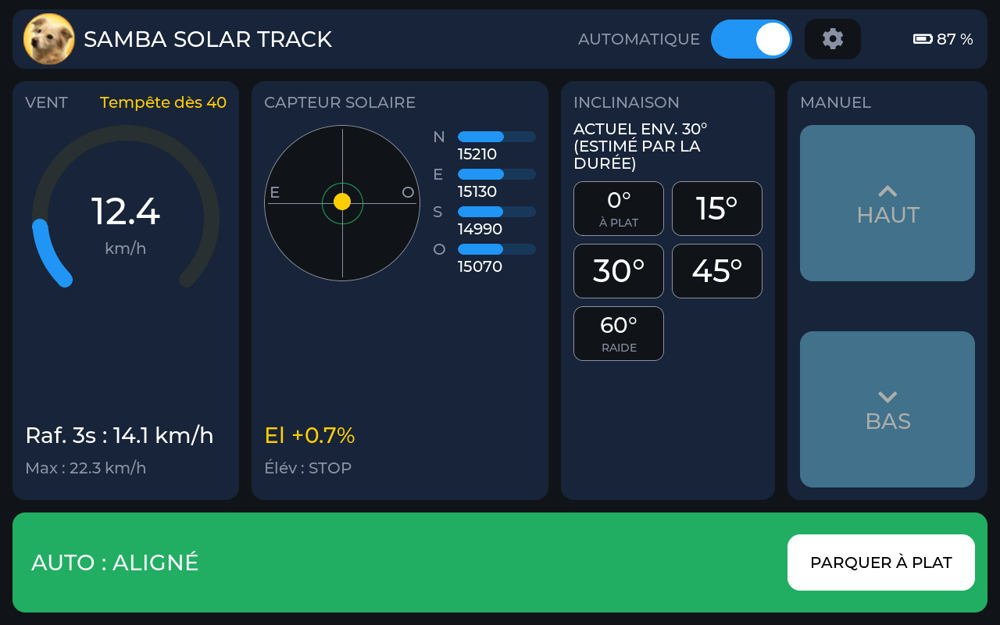
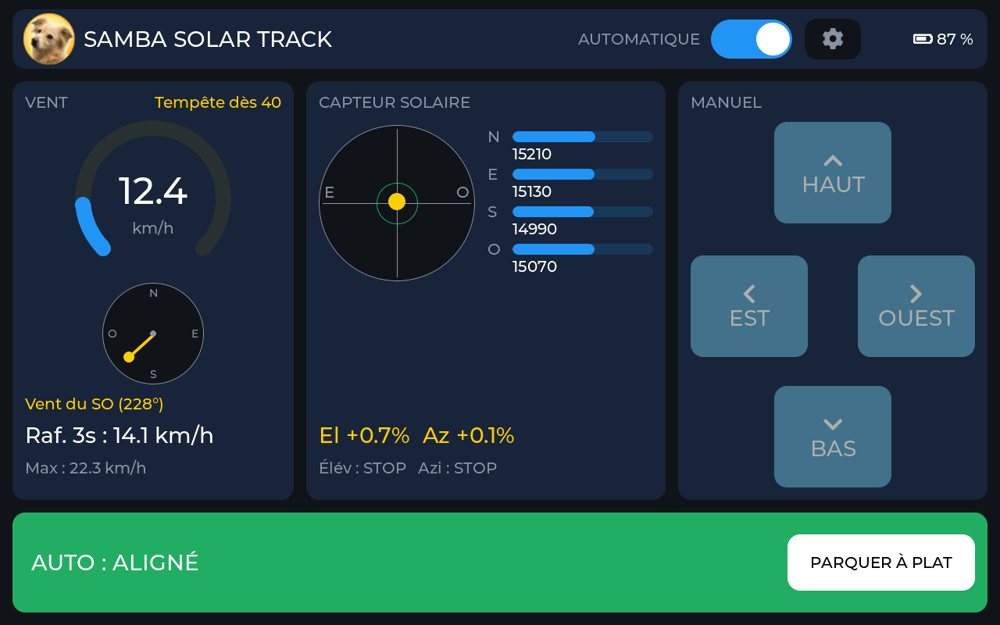
Les autres écrans (Paramètres, RÉGLAGES, Réseau, Heure, Accès distant, Design, Son, Écran, Firmware, Étalonnage) utilisent eux aussi tout l'écran : ils sont conçus pour 1280 × 800 pixels, avec de gros caractères (par exemple Fig. 24). Le grand tableau de bord a été installé sur la carte de test le 20.10.2026 ; l'appareil est ensuite accessible sur le réseau. Son aspect sur l'appareil, si les doigts touchent bien les boutons et si tout fonctionne de façon fluide n'est pas encore confirmé ; les autres écrans agrandis ne sont compilés que sur ordinateur. Les images présentées ici ont été générées par l'outil de captures d'écran à partir du code réel de l'interface.
Langue de l'affichage (en préparation, généré sur ordinateur, non vérifié sur l'appareil)
L'écran existe en sept langues : anglais, allemand, français, espagnol, néerlandais, portugais et polonais. En usine, il est en anglais. Au tout premier démarrage apparaît donc d'abord le choix de la langue (Fig. 13h), avant même la configuration. Les touches portent le nom de la langue dans la langue elle-même, par exemple DEUTSCH ou FRANÇAIS, afin que vous trouviez votre langue même si vous ne comprenez pas celle qui est sélectionnée.
- Choisir la langueTouchez votre langue. Résultat attendu : la touche devient bleue avec une coche, et tous les textes passent immédiatement dans cette langue.
- SuiteAu premier démarrage, touchez la touche verte SUITE (en anglais : NEXT). Résultat attendu : la configuration apparaît dans la langue choisie. Le choix reste enregistré, même après un redémarrage.
- Modifier plus tardOuvrez les paramètres (roue dentée dans le tableau de bord) et touchez en haut à droite la touche portant le nom de la langue, par exemple FRANÇAIS .... Résultat attendu : le choix de la langue apparaît ; après le choix, RETOUR ramène aux paramètres. La commande continue de fonctionner sans interruption, y compris la protection contre la tempête.
Les traductions ont été réalisées automatiquement par Claude le 28.10.2026 ; aucun locuteur natif ne les a vérifiées (hypothèse). Si un appareil a déjà un firmware plus ancien et qu'il est configuré, il reste en allemand après la mise à jour. Les messages du journal (log) restent toujours en allemand. L'interface web affiche la même langue que l'appareil ; on peut aussi l'y choisir sous PARAMÈTRES (Fig. 23c). Ce manuel existe lui aussi dans les sept langues, en page web et en PDF ; vous changez de langue en haut de la table des matières. La version allemande fait foi ; les autres versions du manuel sont elles aussi traduites automatiquement et non vérifiées par des locuteurs natifs (hypothèse).
Sons du haut-parleur (en préparation, entendus sur la carte de test)
La carte 10,1 pouces a un haut-parleur intégré. Le firmware commencé l'utilise pour émettre des sons. Sur la carte de test, les sons sont audibles depuis le 20.10.2026 (firmware 0.4.6) ; les niveaux de volume et les alarmes n'ont pas encore été vérifiés individuellement. Ce qui suit décrit ce que le firmware contient à cet effet.
| Son | Quand | Fréquence |
|---|---|---|
| Confirmation : un bip court et aigu | à chaque toucher d'une touche ou d'un interrupteur à l'écran | une fois par toucher ; peut être désactivé |
| Défaut d'un module E/S : trois sons courts et aigus | le module des sorties de commutation sur la carte ne répond pas | immédiatement, puis toutes les 20 secondes |
| Tempête : trois fois aigu-grave | la protection tempête a mis le module à plat | immédiatement, puis chaque minute |
| Erreur moteur : deux sons longs | un moteur n'a pas atteint sa butée à temps | immédiatement, puis toutes les 30 secondes |
| Anémomètre en panne : aigu, puis grave | l'anémomètre ne répond plus, il n'y a plus de protection tempête | immédiatement, puis toutes les 2 minutes |
Les alarmes retentissent tant que la situation persiste. Si plusieurs existent en même temps, vous n'entendez que la plus importante (dans l'ordre du tableau). Une alarme passe toujours avant le bip de confirmation. Tant que la configuration n'est pas terminée, il n'y a pas d'alarmes.
Réglage : dans les paramètres, la touche SON ... mène à un écran dédié. Vous y activez ou désactivez les bips de confirmation et réglez le volume avec les touches − et + sur dix niveaux. Résultat attendu : après chaque modification du volume, un court son d'essai retentit au nouveau niveau ; le réglage s'applique immédiatement et est conservé après la mise hors tension. En usine, les bips de confirmation sont activés et le volume est au niveau 7.
Pour qu'une tempête ou une erreur ne passe pas inaperçue, les alarmes retentissent au moins au niveau 7, même si vous réglez le volume plus bas. Plus fort que le niveau 10 n'est pas possible : cette limite est fixée dans le firmware afin que le bloc d'alimentation et le fusible de la carte ne soient pas surchargés, même avec l'alarme au maximum et la batterie en charge. On mesurera si les niveaux sont bien audibles sur l'appareil réel et quel courant le haut-parleur consomme vraiment dès que la carte sera disponible ; d'ici là, la limite est une hypothèse.
Veille et détecteur de mouvement (en préparation, non vérifié sur l'appareil)
La carte 10,1 pouces a une caméra intégrée. Le firmware commencé l'utilise comme détecteur de mouvement : si personne ne se tient devant l'écran pendant un moment, il affiche un économiseur d'écran ou éteint le rétroéclairage. Si quelqu'un s'approche de l'écran, il se rallume de lui-même. Pour l'instant, cela n'est compilé et testé que sur ordinateur ; on n'a pas encore vérifié si la caméra détecte le mouvement de façon fiable sur l'appareil.
Le firmware analyse les images de la caméra uniquement en mémoire vive pour détecter un mouvement. Il n'enregistre aucune image, n'en affiche aucune et n'en envoie aucune sur le réseau, pas même à l'interface web. De chaque image, il ne reste que la luminosité moyenne de petites zones.
Ce qui se passe :
- Après le délai réglé sans toucher ni mouvement devant l'écran, l'économiseur d'écran apparaît (Fig. 13e) : une surface sombre avec le logo, l'heure, l'état du bandeau d'état dans sa couleur et le vent. Le texte se déplace toutes les 20 secondes à un autre endroit, la lumière est atténuée. Ou bien l'écran s'éteint complètement, si vous l'avez réglé ainsi.
- Réveil : un mouvement devant l'écran ou un toucher. Le toucher qui réveille l'écran ne déclenche rien : vous pouvez donc toucher n'importe quel endroit sans appuyer par erreur sur une touche. Ce n'est qu'après avoir relevé le doigt que le toucher suivant agit.
- En cas de danger, l'écran reste allumé : en cas de tempête, de panne de l'anémomètre, d'erreur moteur et de défaut d'un module E/S, l'écran s'allume et le reste tant que la situation persiste.
- En veille, la commande continue de fonctionner tout à fait normalement, y compris la protection tempête.
- Dans l'obscurité (pièce sans lumière), la caméra ne détecte aucun mouvement ; seul un toucher réveille alors l'écran. Si la lumière augmente soudainement, par exemple parce que quelqu'un allume la lumière ou se place directement devant la caméra, l'écran se réveille également. Une personne qui reste parfaitement immobile n'est plus détectée comme mouvement après quelques secondes.
Réglage :
- Ouvrir l'écranOuvrez les paramètres (roue dentée dans le tableau de bord) et touchez ÉCRAN ... (Fig. 13d). Résultat attendu : l'écran ÉCRAN apparaît.
- Choisir le modeTouchez PERMANENT, ÉCONOMISEUR ou ÉCRAN ÉTEINT. Résultat attendu : la touche choisie est bleue avec un cadre jaune. Avec PERMANENT, le délai et le détecteur de mouvement n'ont pas d'effet et sont bloqués.
- Régler le délaiAvec − et +, vous choisissez 1, 2, 3, 5, 10, 15, 20, 30, 45 ou 60 minutes. Résultat attendu : le nombre au milieu change.
- Détecteur de mouvementAvec l'interrupteur, vous activez ou désactivez le détecteur de mouvement. S'il est désactivé, seul un toucher réveille l'écran. Résultat attendu : à côté s'affiche « DÉTECT. MOUV. MARCHE » ou « ARRÊT », en dessous « Caméra prête. » Si « Caméra indisponible » s'affiche en orange, le firmware n'a pas trouvé la caméra ; seul un toucher réveille alors l'écran.
- Tester le détecteur de mouvementEn dessous, une ligne indique en continu ce que voit la caméra : images par seconde, luminosité (0 à 255) et nombre de zones en mouvement, par exemple « 5 img/s, luminosité 92, mouvement 412 (dès 96) ». Agitez la main à environ un mètre devant l'écran. Résultat attendu : le nombre après « mouvement » dépasse 96 et la ligne devient jaune ; ce mouvement réveillerait alors l'écran. Si « trop sombre » s'affiche, la pièce est trop sombre pour la caméra ; si « Caméra en veille » s'affiche, PERMANENT est choisi ou le détecteur de mouvement est désactivé. Notez les valeurs si le réveil ne fonctionne pas : elles aident au réglage.
- Batterie installéeAvec l'interrupteur AVEC BATTERIE, vous affichez ou masquez le niveau de la batterie en haut à droite du tableau de bord (chapitre 7). Résultat attendu : à côté s'affiche « AVEC BATTERIE » ou « SANS BATTERIE » ; dans le tableau de bord, l'affichage apparaît ou disparaît, et la roue dentée et AUTOMATIQUE se décalent en conséquence.
- RetourTouchez RETOUR. Résultat attendu : les paramètres réapparaissent. Tout s'applique immédiatement et est conservé après la mise hors tension ; aucun redémarrage n'est nécessaire.
En usine, la veille est réglée sur économiseur d'écran après 5 minutes avec le détecteur de mouvement activé (suggestion, pas encore définitif). Ce réglage n'est pas possible à distance (interface web, ioBroker).
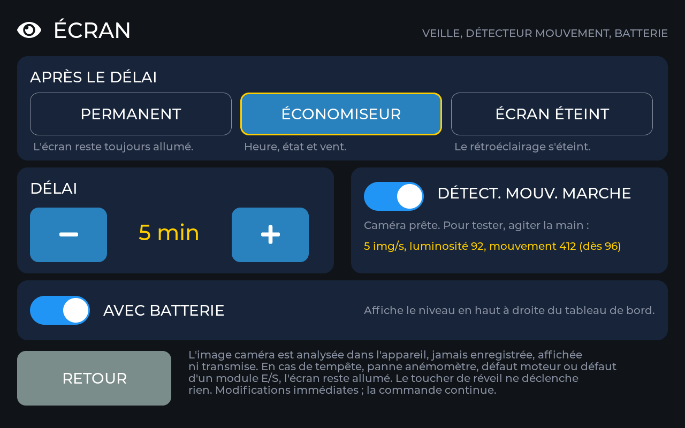
Sur la carte de test (21.10.2026), l'économiseur d'écran apparaît et un toucher réveille l'écran ; le mouvement ne le réveille pas encore. De plus, l'appareil redémarrait immédiatement lors de l'installation d'un nouveau firmware par le réseau ; le prochain firmware arrête donc la caméra avant d'écrire. Installez ce firmware une fois par USB (Installer le firmware pour la première fois) ; ensuite, cela fonctionne de nouveau par le réseau. Le prochain firmware détermine en outre lui-même dans quelle partie des données d'image se trouve la luminosité, et affiche les valeurs mesurées de la caméra sur l'écran ÉCRAN (étape « Tester le détecteur de mouvement »). Restent ouverts : si la caméra est trouvée, avec quelle fiabilité elle détecte le mouvement (distance, lumière, fausses alarmes par exemple dues à une lumière vacillante ou à des animaux), si l'écran reste stable caméra en marche et si la luminosité atténuée de l'économiseur d'écran convient. Les seuils de détection sont estimés (hypothèse) et seront ajustés après le test.
Nouveau firmware depuis Internet (en préparation, non vérifié sur l'appareil)
Le firmware de la carte 10,1 pouces peut vérifier lui-même s'il existe un firmware plus récent et l'installer depuis Internet à votre demande. Cela aussi n'est pour l'instant compilé et testé que sur ordinateur. Ce qui suit décrit ce que le firmware contient à cet effet.
Pour que l'appareil accepte un nouveau firmware, celui-ci doit être signé avec la clé du projet (signature). La clé actuelle est enregistrée depuis le firmware 0.4.7. Les firmwares plus anciens (jusqu'à 0.4.6) ne connaissent qu'une clé antérieure qui n'est plus utilisée : un appareil avec ce firmware ne trouvera jamais de nouvelle version par Internet. Installez alors une fois la version 0.4.7 via l'interface web (PARAMÈTRES, mise à jour du firmware) ou, comme ci-dessus, par le câble USB ; ensuite, cela continue par Internet. On ne vérifiera qu'avec les versions 0.4.7 et 0.4.8 si la vérification et l'installation se déroulent sur l'appareil comme décrit ici. Si la vérification signale une erreur (par exemple « pas de connexion à la source des versions »), la touche INSTALLER reste bloquée.
Ce que l'appareil fait de lui-même : si le Wi-Fi est connecté, il vérifie une fois par jour (la première vérification 2 à 20 minutes après la connexion). Il télécharge pour cela un petit fichier, le manifeste, par une connexion chiffrée (HTTPS) depuis la source des versions du projet sous https://firmware.samba-solar.de/. Il n'installe jamais de lui-même. S'il existe une version plus récente, l'en-tête affiche en haut, en petit et en jaune, NOUVEAU FIRMWARE et en dessous le numéro. Aucun son n'est émis.
Consulter et installer :
- Ouvrir l'écranRoue dentée en haut à droite, puis dans les paramètres la touche FIRMWARE .... Cette touche n'existe qu'une fois la configuration enregistrée. Résultat attendu : l'écran FIRMWARE affiche la version en cours avec sa date de compilation, la date de la dernière vérification et le résultat.
- Vérifier maintenant (facultatif)Touche VÉRIFIER. Cela n'est possible qu'une fois par minute au plus et uniquement avec le Wi-Fi connecté. Résultat attendu : après quelques secondes s'affiche « À JOUR », « NOUVEAU FIRMWARE DISPONIBLE » avec numéro, date et court texte, ou « VÉRIFICATION ÉCHOUÉE » avec la raison.
- InstallerTouche INSTALLER (uniquement avec « NOUVEAU FIRMWARE DISPONIBLE »), puis confirmez la question avec INSTALLER. Résultat attendu : « CHARGEMENT ... » avec une barre. La commande continue de réguler tout à fait normalement, y compris la protection tempête. Avec ANNULER, vous pouvez arrêter le chargement ; rien ne change alors.
- Position à platAprès le chargement, l'appareil vérifie le fichier. Puis l'élévation passe en position à plat, comme lors du parcage. Résultat attendu : l'écran FIRMWARE affiche « PASSE À PLAT AVANT L'ÉCRITURE », la barre d'état indique le parcage et le module se met à plat.
- Écriture et redémarrageCe n'est que lorsque l'élévation est à plat que l'appareil éteint toutes les sorties et écrit le nouveau firmware. Résultat attendu : au-dessus de l'écran s'affiche « MISE À JOUR FIRMWARE – Écriture du firmware vérifié » ; puis la commande redémarre. Les réglages sont conservés.
- Après le redémarrageNe faites rien et laissez l'appareil fonctionner au moins deux minutes. Résultat attendu : la nouvelle version apparaît dans l'écran FIRMWARE, et le module reste d'abord à plat. Après deux minutes, le nouveau firmware se valide lui-même dès que l'écran et la carte RearCircuitBoard_10 fonctionnent et – seulement si le Wi-Fi est activé – que l'appareil s'est connecté au moins une fois au Wi-Fi depuis le redémarrage (l'autotest). Ensuite, il annule le parcage et revient à la position précédente : l'automatique reprend le suivi, ou un angle choisi est de nouveau rejoint.
Avant chaque mise à jour, depuis Internet comme par l'interface web, l'élévation passe en position à plat. Ainsi, le module est à plat si quelque chose tourne mal pendant la mise à jour. Si la position à plat n'est pas atteinte, l'appareil n'écrit rien et le firmware actuel continue de fonctionner ; la raison s'affiche dans l'écran FIRMWARE et dans l'interface web. Cela arrive en mode manuel (activer d'abord AUTOMATIQUE), en cas de défaut, lorsqu'une tempête commence, lorsque quelqu'un annule le parcage, ou lorsque le mouvement dure plus longtemps que la durée de course maximale plus environ une demi-minute. S'il n'y avait pas de demande de parcage auparavant, la position précédente s'applique de nouveau ensuite. Si l'appareil revient au firmware précédent après un autotest échoué, celui-ci revient lui aussi à la position précédente (hypothèse : pas encore essayé sur l'appareil). Si vous activez ou annulez vous-même le parcage avant, votre choix s'applique.
L'écriture dure selon une estimation environ une minute (hypothèse, pas encore mesuré). Pendant ce temps, tous les moteurs sont à l'arrêt et le module n'est pas mis à plat en cas de tempête. C'est pourquoi l'installation ne commence pas tant que la protection tempête est active ou qu'un moteur tourne. Si une tempête survient pendant le chargement ou entre le chargement et l'écriture, l'appareil interrompt et rejette le fichier chargé, même si la tempête est vite passée ; vous devez ensuite confirmer à nouveau l'installation. Installez de préférence par temps calme.
Si le nouveau firmware se bloque ou redémarre dans les deux premières minutes, l'appareil redémarre de lui-même l'ancien firmware. Il en va de même s'il ne réussit pas l'autotest à temps (par exemple parce que l'écran ou la carte RearCircuitBoard_10 ne répond pas, ou parce qu'il ne se connecte jamais au Wi-Fi) : il éteint alors d'abord toutes les sorties et démarre l'ancien firmware. Le délai est de 12 minutes après le redémarrage ; si le Wi-Fi est activé, de 30 minutes, pour qu'un routeur brièvement en panne ne provoque pas tout de suite le retour. Si le Wi-Fi est désactivé, il ne joue aucun rôle pour l'autotest. Ces deux délais sont des valeurs proposées, pas encore éprouvées sur l'appareil. Tant que le nouveau firmware attend l'autotest, un bandeau orange s'affiche en haut sur tous les écrans, entre le nom du produit et AUTOMATIQUE : le temps restant avant le contrôle, ensuite « AUTOTEST ÉCHOUÉ », l'état des conditions (SORTIES et WI-FI : OK, ABSENT ou ARRÊT) et le temps restant avant le retour. Sans la carte RearCircuitBoard_10, il affiche « SANS CARTE : ACTIVER LA SIMULATION » (Fig. 13c). La raison de l'échec de l'autotest figure en outre dans le log. Après un retour, l'écran affiche « MISE À JOUR ANNULÉE » ; touchez OK.
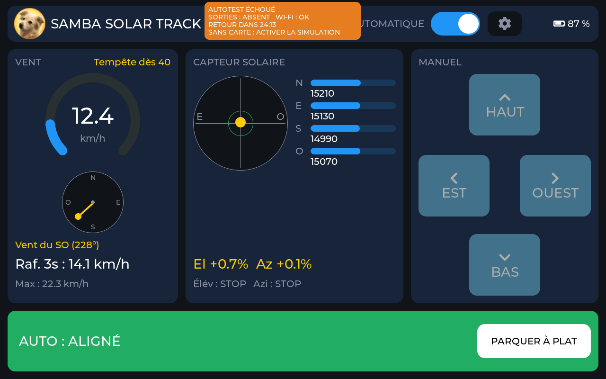
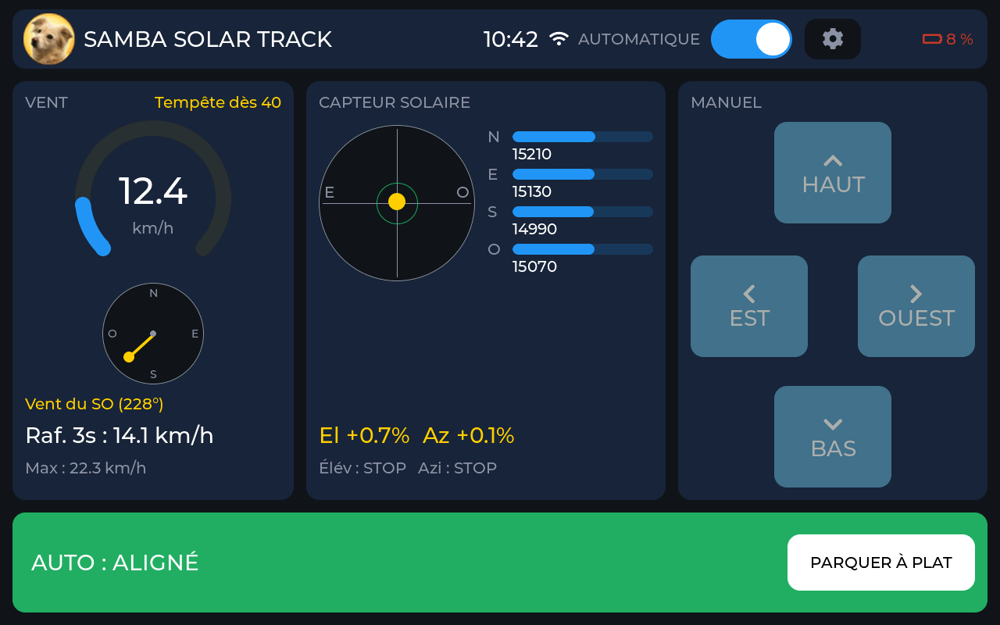
La même version n'est ensuite plus proposée dans l'en-tête, mais peut tout de même être réinstallée depuis l'écran FIRMWARE. Sur la carte 10,1 pouces, cela vaut aussi pour une mise à jour via l'interface web.
À distance : dans l'interface web, sous PARAMÈTRES, se trouve le bloc « FIRMWARE DEPUIS INTERNET » avec les mêmes informations et les touches VÉRIFIER et INSTALLER. Seul un appareil connecté (token) peut les utiliser, et l'interrupteur « Commande à distance bloquée » à l'écran bloque les deux. La vérification quotidienne continue même lorsque la commande à distance est bloquée.
Lors de la vérification, l'appareil n'envoie qu'une simple requête avec sa version de firmware ; aucun identifiant, aucun mot de passe, aucun token. Comme tout site Internet, le site du projet voit alors l'adresse IP publique de votre connexion Internet. Il n'existe pas d'interrupteur pour désactiver la vérification ; sans Wi-Fi, elle n'a pas lieu.
Inclinaison sur ordre : atteindre un angle fixe (en préparation, non vérifié sur l'appareil)
Au lieu de suivre le soleil, l'élévation peut, sur votre ordre, se placer à un angle fixe, par exemple un angle plat en été ou raide en hiver. Ensuite, l'automatique se met en pause jusqu'à ce que vous annuliez la demande. Cela n'existe que dans la version 10 pouces et uniquement dans le mode VERTICAL SEUL. Avec deux axes (vertical + horizontal), la carte INCLINAISON, les angles favoris, les durées de course et la structure sont masqués. Cette fonction aussi n'est pour l'instant compilée et testée que sur ordinateur ; les images ont été générées par l'outil de captures d'écran à partir du code réel de l'interface.
En usine, il n'y a pas de capteur d'inclinaison. Le firmware calcule l'inclinaison à partir du temps pendant lequel il a réellement alimenté le moteur et des durées de course étalonnées. C'est pourquoi l'écran affiche toujours « ENV. 30° » ou « INCONNU », jamais un chiffre exact. La précision est indiquée plus bas ; toutes les indications à ce sujet sont des hypothèses tant qu'elles n'ont pas été mesurées sur le rack. C'est plus précis avec le capteur Hall : le firmware compte alors les impulsions du moteur et affiche l'inclinaison sans « ENV. ».
Angles disponibles : toujours 0° (à plat), 30° et 60° (raide), plus jusqu'à deux angles favoris que vous réglez sous RÉGLAGES (degrés entiers de 1 à 59, pas 30, pas deux fois le même ; 0 signifie désactivé). Les touches sont toujours classées par angle. Tant que la durée de course n'est pas étalonnée, seuls 0° et 60° sont possibles ; les autres angles sont grisés.
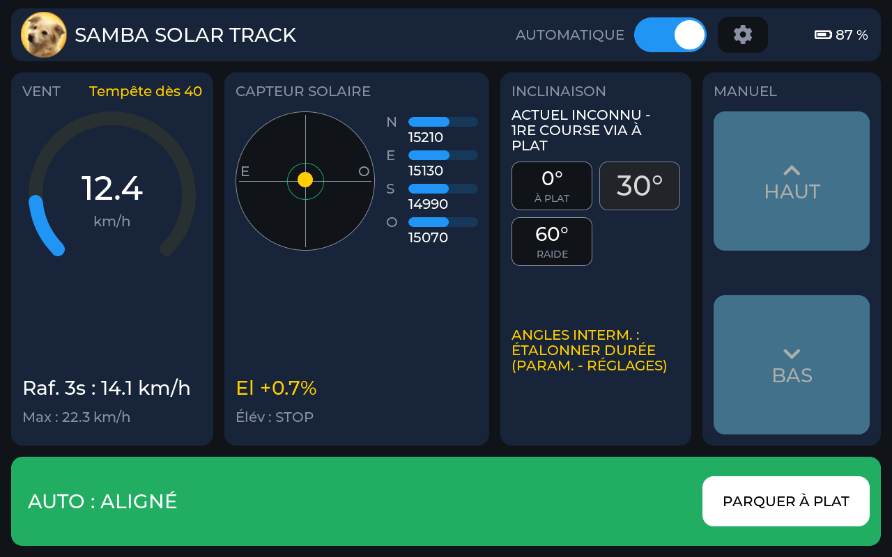
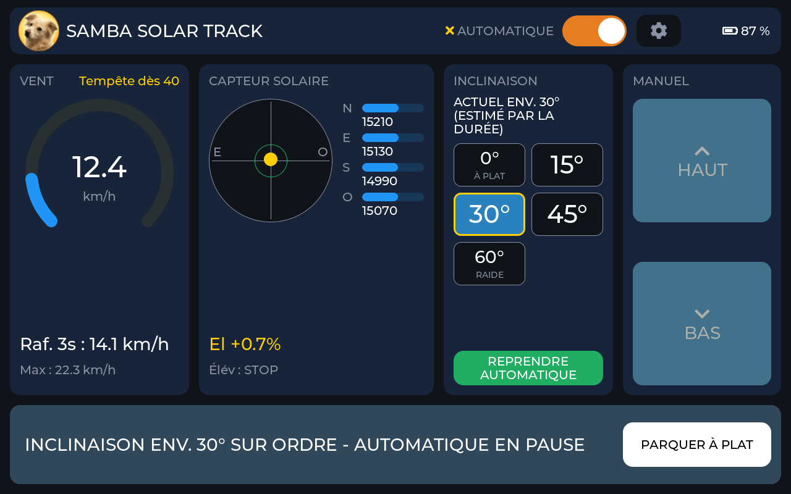
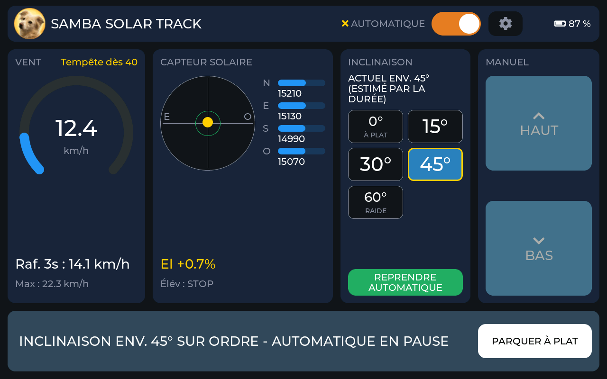
| Affichage dans la carte INCLINAISON | Signification |
|---|---|
| ACTUEL INCONNU - 1RE COURSE VIA À PLAT | La position n'est pas connue depuis la mise sous tension, ou l'estimation est trop incertaine (plus de 6°). |
| ACTUEL ENV. 31° (ESTIMÉ PAR LA DURÉE) | Inclinaison estimée. |
| Touche d'angle bleue avec bord jaune | Cette inclinaison sur ordre est active, même pendant une tempête, un parking ou le mode manuel. En dessous se trouve la touche REPRENDRE AUTOMATIQUE. |
| Interrupteur AUTOMATIQUE orange, précédé d'une croix jaune | L'automatique est activé, mais en pause, parce qu'une inclinaison sur ordre est active. Avec REPRENDRE AUTOMATIQUE, l'interrupteur redevient bleu et la croix disparaît. |
| INDISPONIBLE | Sans configuration terminée, il n'y a pas d'inclinaison sur ordre ; les touches sont bloquées. |
Atteindre un angle :
- Lire la positionRegardez la carte INCLINAISON dans le tableau de bord (Fig. 14 ou 15). Résultat attendu : en haut s'affiche « ACTUEL ENV. 31° (ESTIMÉ PAR LA DURÉE) » ou « ACTUEL INCONNU - 1RE COURSE VIA À PLAT ».
- Choisir l'angleTouchez dans la carte l'angle souhaité. Résultat attendu : la touche devient bleue avec un bord jaune, en dessous apparaît REPRENDRE AUTOMATIQUE, l'interrupteur AUTOMATIQUE en haut devient orange précédé d'une croix jaune, et le bandeau d'état affiche le déroulement (étape suivante).
- ObserverSi la position est inconnue ou trop incertaine, l'élévation va d'abord à plat jusqu'en butée : c'est la course de référence. Sans fin de course, elle dure toute la durée maximale (90 secondes pour le Samba-Solar-Rack 2.0-E Plus), même si le cadre est arrêté depuis longtemps. Suit ensuite la course vers l'angle. Résultat attendu : successivement « INCLINAISON 45° : RÉFÉRENCE VERS À PLAT », « INCLINAISON 45° : PLUS RAIDE, ENV. 12° » et pour finir « INCLINAISON ENV. 45° SUR ORDRE - AUTOMATIQUE EN PAUSE » (Fig. 17). Aucune correction n'a lieu ensuite.
- Retour à l'automatiqueTouchez dans la carte REPRENDRE AUTOMATIQUE. Résultat attendu : le bandeau d'état affiche de nouveau AUTO, l'interrupteur AUTOMATIQUE est de nouveau bleu sans croix, le suivi recommence.
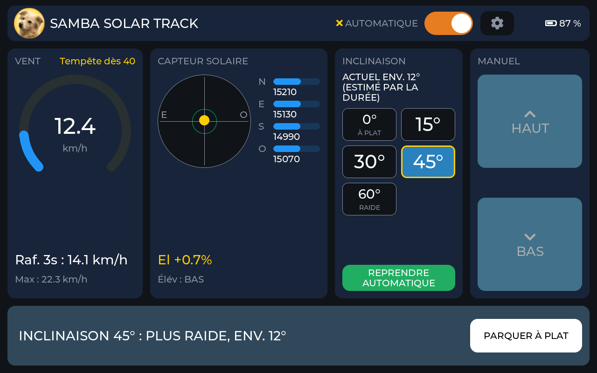
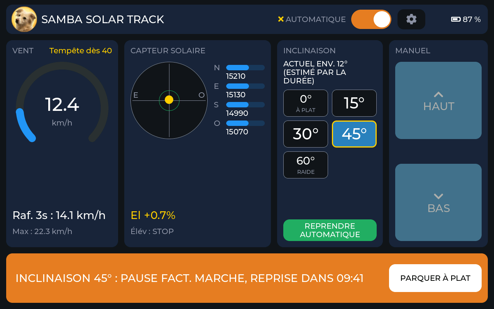
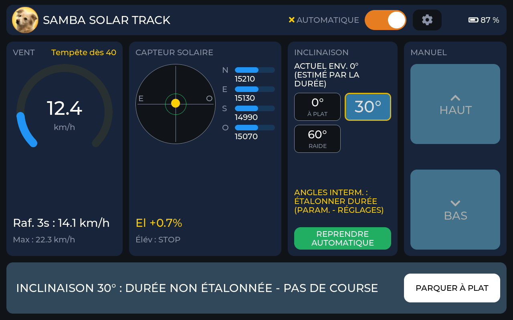
Ce qui est prioritaire (l'ordre de priorité de la commande) : configuration manquante, défaut d'un module E/S, tempête, erreur moteur, mode manuel, parking sur ordre et panne de l'anémomètre passent avant. Ce n'est qu'ensuite que vient l'inclinaison sur ordre, qui passe à son tour avant le défaut de capteur, la nuit et l'automatique. L'inclinaison sur ordre s'applique donc aussi la nuit et lorsque le capteur solaire est en défaut.
| Situation | Ce qui se passe |
|---|---|
| Tempête, panne de l'anémomètre | Prioritaires : l'élévation va à plat. Ensuite, elle revient d'elle-même à l'angle demandé. La carte indique « PROTECTION TEMPÊTE PRIORITAIRE - L'ANGLE SERA ATTEINT ENSUITE » (Fig. 22). |
| PARQUER À PLAT | Reste une touche distincte et est prioritaire (« PARKING PRIORITAIRE … »). Après l'annulation du parking, l'installation revient à l'angle. |
| Mode manuel (automatique arrêté) | L'inclinaison sur ordre est suspendue ; elle agit dès que l'automatique est de nouveau activé (« AGIT DÈS QUE L'AUTOMATIQUE EST ACTIF »). |
| Défaut | Prioritaire (« DÉFAUT PRIORITAIRE »), rien ne bouge. |
| Panne de courant, redémarrage | L'inclinaison demandée reste enregistrée, comme la demande de parking. Après la mise sous tension, la position est toutefois inconnue : la première course vers un angle intermédiaire commence par une course de référence. |
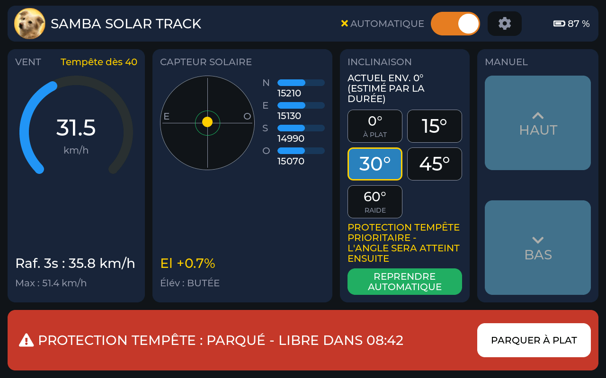
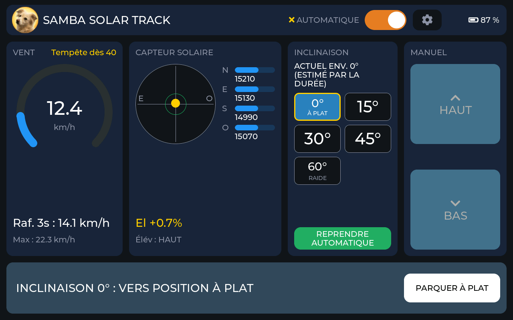
Dans le navigateur : pour la version 10 pouces, l'interface web affiche la même disposition que l'écran (Fig. 23a et 23b) : sur un écran large (PC, tablette, téléphone à l'horizontale), l'en-tête, les cartes VENT (avec rose des vents si un anémomètre avec direction est configuré), CAPTEUR SOLAIRE, INCLINAISON et MANUEL dans les mêmes largeurs et en dessous le bandeau d'état ; sur le téléphone, les unes sous les autres. La carte INCLINAISON contient les mêmes touches et le texte « Actuel env. 31° (estimé par la durée de course) ». Comme à l’écran, l’interrupteur AUTOMATIQUE est orange avec une croix jaune devant tant qu’une inclinaison sur ordre met l’automatique en pause, et la batterie s’affiche en haut à droite avec son niveau de charge et, pendant la charge, l’éclair jaune ; sur un téléphone, la batterie apparaît en petit sous le nom (Fig. 23c). Sous PARAMÈTRES, vous choisissez aussi la langue : un toucher la change à la fois à l’écran et dans le navigateur. Seul un appareil connecté peut commander, et seulement si la commande à distance n'est pas bloquée. L'étalonnage n'est possible qu'à l'écran. Les images proviennent de l'outil d'aperçu de l'interface web (python3 tools/web_vorschau.py) avec un appareil simulé, pas du vrai tracker.
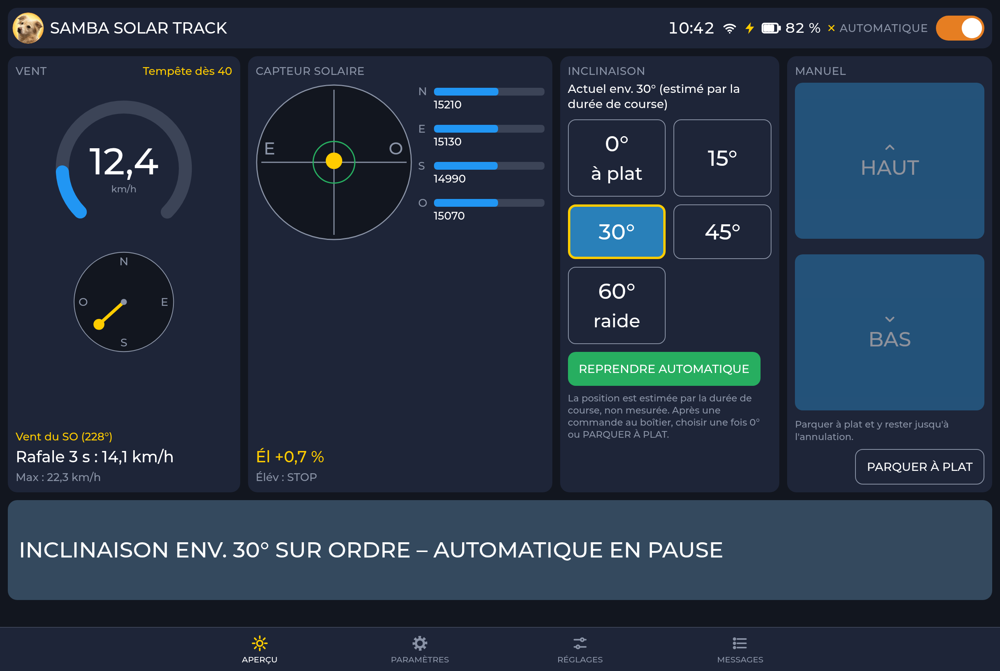
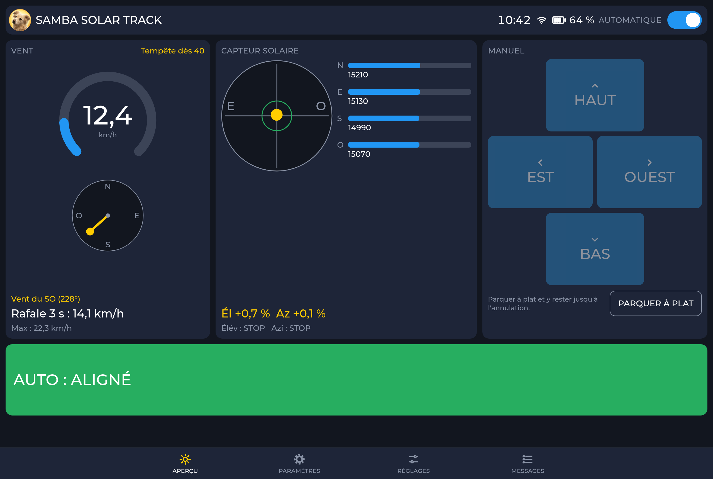
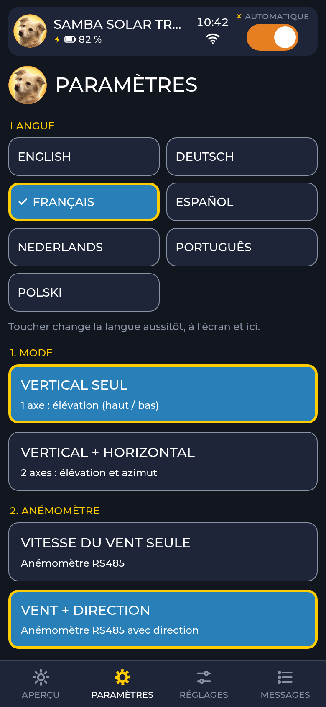
Régler les angles favoris, les durées de course et la structure
Les valeurs se trouvent dans les paramètres sous RÉGLAGES : les deux angles favoris dans le groupe RÉGULATION, les durées de course, la structure, la perte au démarrage et les trois valeurs du capteur Hall dans le groupe MISE EN SERVICE. Les valeurs du groupe MISE EN SERVICE ne peuvent être modifiées que si aucun moteur ne tourne.
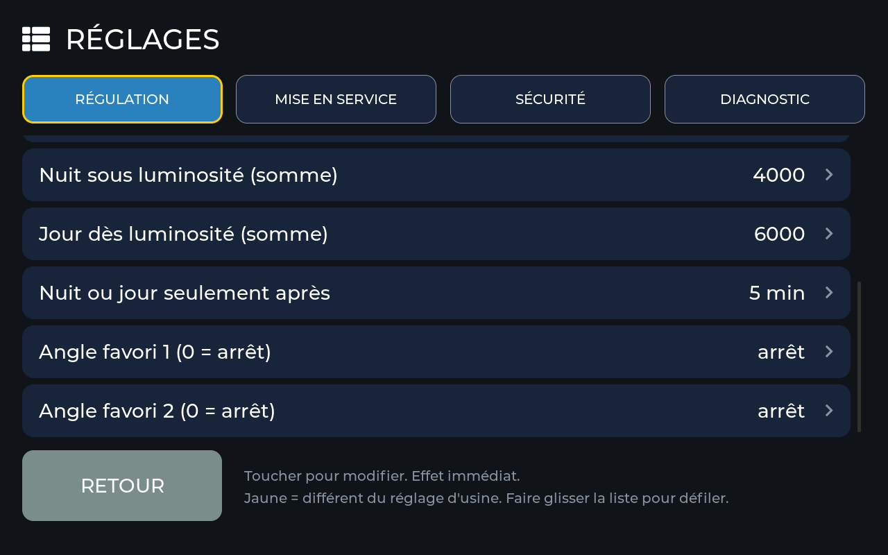
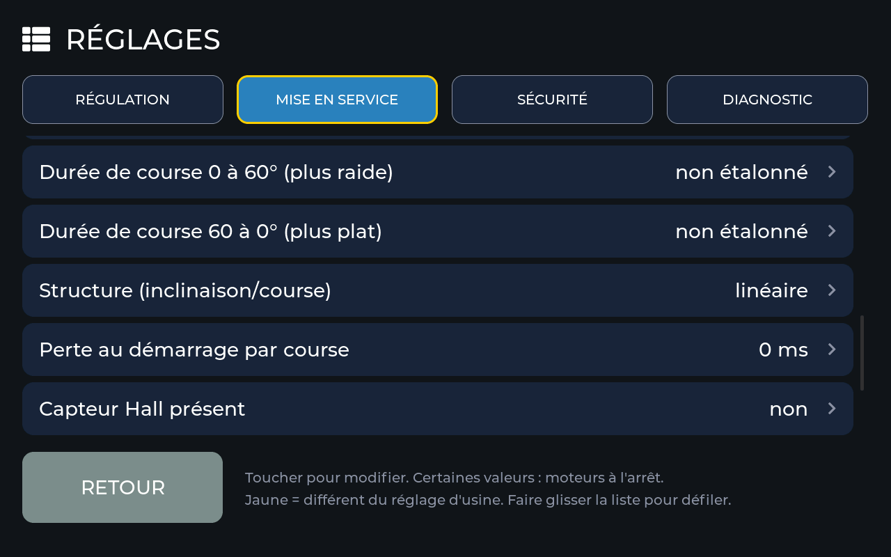
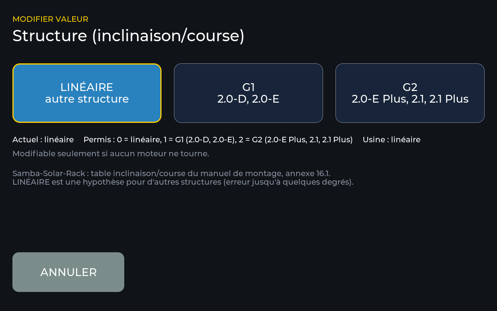
| Valeur | Usine | Permis | Utilité |
|---|---|---|---|
| Durée de course 0 à 60° (plus raide) | non étalonné | 10 à 300 s | Temps pour toute la course de à plat à raide. De préférence à étalonner. |
| Durée de course 60 à 0° (plus plat) | non étalonné | 10 à 300 s | Temps pour la course retour. De préférence à étalonner. |
| Structure (inclinaison/course) | linéaire | linéaire, G1 (2.0-D, 2.0-E), G2 (2.0-E Plus, 2.1, 2.1 Plus) | Convertit la course du moteur en degrés (tableau du manuel de montage, annexe 16.1). |
| Perte au démarrage par course | 0 ms | 0 à 3000 ms | Partie de chaque course pendant laquelle le cadre ne bouge pas encore. |
| Angles favoris 1 et 2 | désactivé | 1 à 59°, pas 30, pas en double ; 0 = désactivé | Touches supplémentaires dans la carte INCLINAISON. Effet immédiat. |
Les durées de course ne s'appliquent que si elles sont inférieures à 0,9 × la durée maximale de l'élévation. Si vous raccourcissez la durée maximale, elles sont considérées comme non étalonnées jusqu'à ce que les valeurs concordent de nouveau. « LINÉAIRE » est une hypothèse pour les autres structures ; sur une structure G2, elle serait fausse d'environ 2,6° au maximum. Si vous modifiez ou désactivez un angle favori actuellement demandé, l'inclinaison sur ordre reste active ; REPRENDRE AUTOMATIQUE l'annule. Pour le Samba-Solar-Rack 2.0-E Plus (commande synchrone HAKIWO SCN4, pas de fins de course sur le tracker), on a en outre : « Fin de course élévation installé » = non, durée max. élévation 90 s. Saisie à la main, elle serait d'environ 75 s pour le 2.0-E Plus selon le manuel de montage ; l'étalonnage est plus précis.
Étalonner la durée de course
Une fois lors de la mise en service et si possible à nouveau en automne et au printemps : la température modifie la vitesse des moteurs (hypothèse, non mesuré). Emplacement : Paramètres → RÉGLAGES → MISE EN SERVICE → ÉTALONNER LA DURÉE (dernière ligne, faites défiler la liste vers le bas, Fig. 34 ; avec capteur Hall, la touche s'appelle ÉTALONNER : DURÉE ET PAS HALL). La commande et la protection tempête continuent de fonctionner pendant ce temps.
- PréparationDégagez la zone de pivotement : personne près de la structure, rien sur le passage. Ouvrez l'écran ÉTALONNER LA DURÉE. Si l'automatique est activé, touchez AUTOMATIQUE ARRÊTÉ. Résultat attendu : « ÉTAPE 1 SUR 4 : PRÉPARER » (Fig. 27), ensuite START est sélectionnable.
- STARTTouchez START. Résultat attendu : « VERS À PLAT, JUSQU'EN BUTÉE » (Fig. 28). Sans fin de course, le contact reste fermé pendant toute la durée maximale, même si le cadre est arrêté depuis longtemps. Si le facteur de marche ne le permet pas pour le moment, « ATTENTE DU FACTEUR DE MARCHE » s'affiche avec le temps restant.
- MESURER HAUTTouchez MESURER HAUT. Le chronomètre tourne (Fig. 29). Touchez ARRIVÉ dès que le cadre est arrêté et que le bruit du moteur cesse (le moteur est alors arrêté sur son propre fin de course). Résultat attendu : « HAUT mesuré » avec le temps au dixième de seconde. Avec des fins de course sur le tracker et avec un capteur Hall, la mesure se termine d'elle-même.
- PauseUne pause d'environ 15 minutes est recommandée pour que les moteurs refroidissent (facteur de marche ; Fig. 30). La pause n'est pas imposée. Résultat attendu : l'écran affiche la recommandation et la touche MESURER BAS.
- MESURER BASTouchez MESURER BAS, puis de nouveau ARRIVÉ dès que le cadre est à plat et arrêté. Résultat attendu : le deuxième temps apparaît. Si le moteur s'arrête au milieu de la mesure à cause d'une pause du facteur de marche, l'écran affiche « PAUSE FACTEUR DE MARCHE … PAS arrivé » (Fig. 31) : ne touchez pas alors, la mesure reprend ensuite d'elle-même.
- AppliquerL'écran affiche les deux temps (Fig. 32). Touchez APPLIQUER. Résultat attendu : sous RÉGLAGES, les temps remplacent « non étalonné » ; dans la carte INCLINAISON, tous les angles sont sélectionnables.
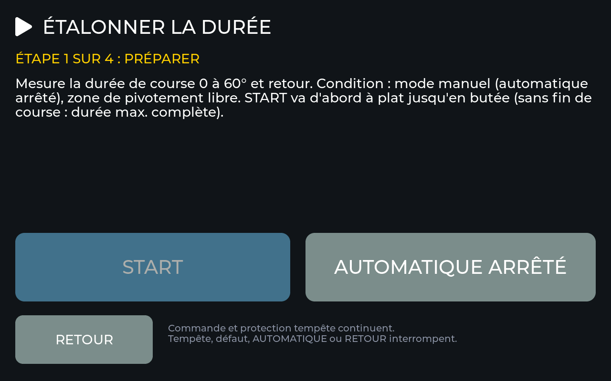
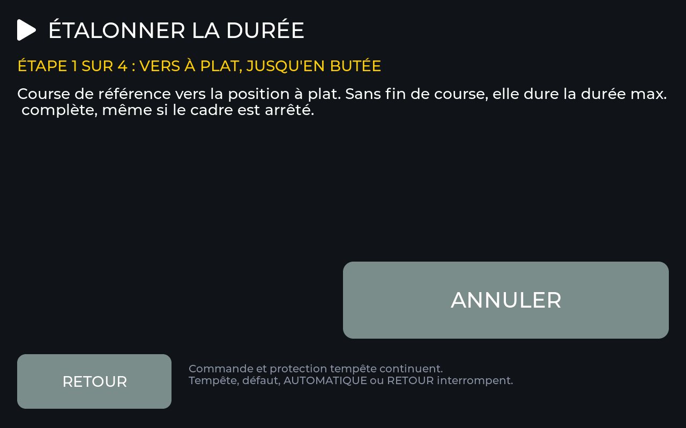
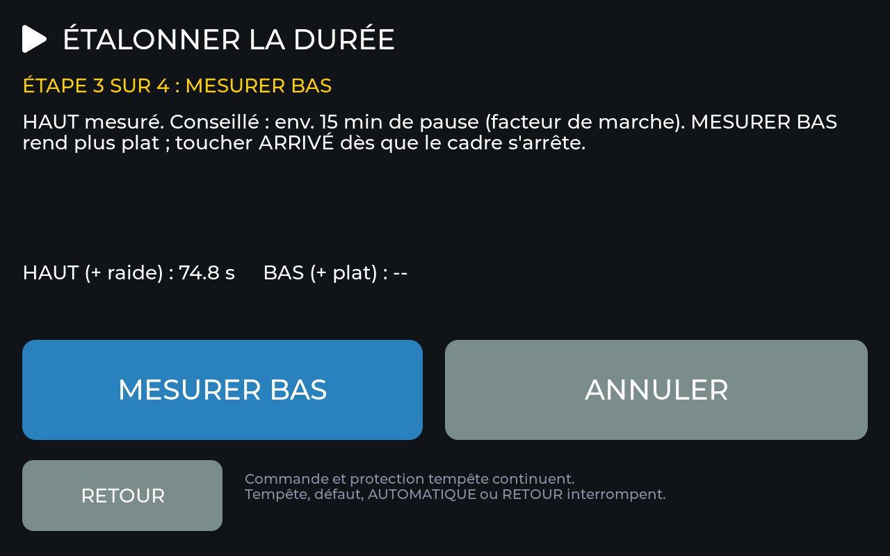
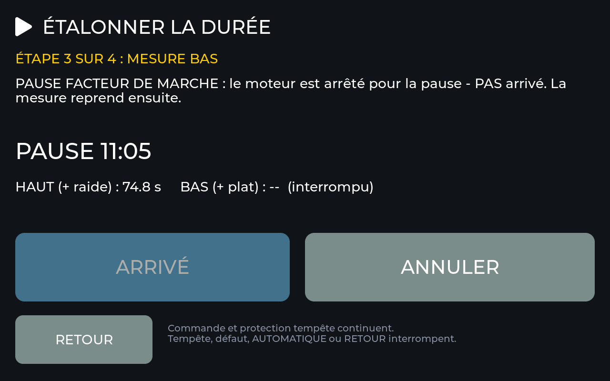
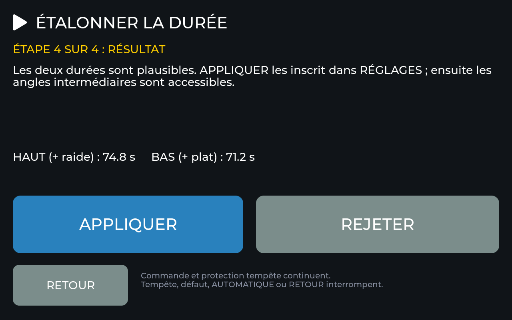
Le firmware vérifie la mesure : chaque temps doit durer au moins 10 secondes et être inférieur à 0,9 × la durée maximale, et HAUT et BAS ne doivent pas différer de plus d'un facteur 2. Sinon, la raison s'affiche en jaune et rien n'est appliqué (Fig. 33). Une tempête, un défaut, l'automatique activé ou RETOUR interrompent l'étalonnage. Pendant l'étalonnage, l'appareil refuse les commandes manuelles à distance.
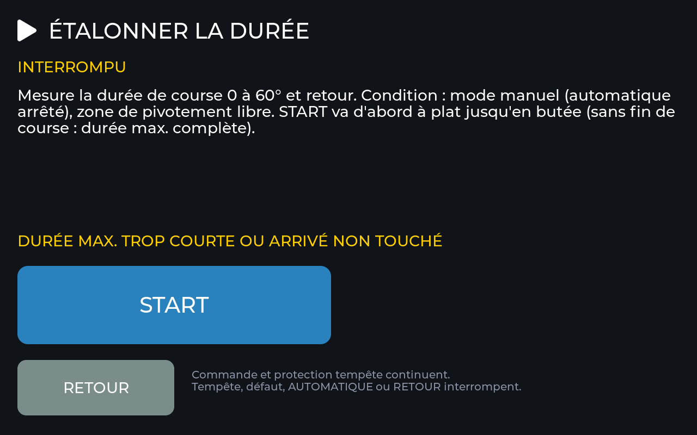
Quelle est la précision ?
Tous les chiffres de ce tableau sont des hypothèses, non mesurés. Ils seront vérifiés sur le rack.
| Source de l'écart | Ordre de grandeur |
|---|---|
| Butées de la mécanique | 0° ± 1°, 60° ± 1,5° (manuel de montage) |
| Tableau de la structure G1/G2 | moins de 0,1° |
| Vitesse après l'étalonnage (charge, tension) | environ ± 3 à 5 % de la course, ± 1 à 1,5° à 30° |
| Température (hiver contre étalonnage en été) | jusqu'à environ 3 à 6° à 30° |
| Démarrage et inertie par course | jusqu'à presque 1° par course |
Attendu : une course à partir d'une référence ± 1 à ± 3°, en hiver avec un étalonnage d'été jusqu'à environ ± 5°. À l'arrêt, l'estimation ne change pas. Après une journée d'automatique avec de nombreuses petites courses de suivi, elle est le plus souvent « INCONNU » ; la première course vers un angle intermédiaire commence alors par une course de référence. L'incertitude augmente à chaque course ; si elle ne dépasse pas 3°, l'élévation va directement à l'angle, sinon elle passe d'abord par la position à plat. Les valeurs fixes utilisées (0,3° par course, plus 8 % des degrés parcourus, tolérance 1°, course la plus courte 0,5 s, majoration de 2° après un reset au milieu d'une course) sont figées dans le firmware et sont également des hypothèses.
Si vous déplacez le module depuis le boîtier de commande (interrupteur à bascule, télécommande radio, boutons de la commande synchrone) ou avec la manivelle, l'estimation n'est plus juste. Choisissez ensuite une fois 0° ou PARQUER À PLAT pour que le firmware dispose de nouveau d'une référence. Avec le capteur Hall activé, il compte aussi les mouvements effectués via la commande synchrone, tant que ses impulsions arrivent.
Sans fin de course sur le tracker, une butée est considérée comme atteinte lorsque le contact est resté fermé pendant toute la durée maximale (butée par durée). Si les moteurs n'étaient alors pas alimentés (le bloc d'alimentation était coupé et la carte fonctionnait sur batterie, le fusible des moteurs s'était déclenché, ou avec deux blocs d'alimentation celui des moteurs était coupé) ou si la commande synchrone (par exemple HAKIWO SCN4) a interrompu la course sans le signaler, cette référence est fausse, et l'estimation qui suit aussi. Sans capteur Hall, le firmware ne peut pas le détecter ; c'est pourquoi il n'affiche jamais mieux que « ENV. ». Avec le capteur Hall, il le détecte à l'absence d'impulsions.
Après un redémarrage sans perte de tension (configuration enregistrée, mise à jour, plantage), le firmware reprend l'estimation depuis une mémoire qui survit au redémarrage ; si un moteur était en marche au moment de la réinitialisation, l'incertitude augmente de 2°. Que cette mémoire tienne sur la carte est une hypothèse. Si les moteurs n'ont pas de tension pendant une course (alimentation coupée et carte sur batterie, fusible des moteurs déclenché) ou si la commande synchrone interrompt la course, les contacts se ferment quand même ; après la durée maximale, le firmware retient alors une fausse butée par durée et une fausse inclinaison. C'est pourquoi, en cas de tempête, de panne de l'anémomètre et de parking, il remet le module à plat (voir ci-dessous). Le capteur Hall détecte si le moteur bouge réellement, s'il est installé et activé (lui aussi vérifié seulement sur ordinateur). En simulation, la fonction tourne avec des moteurs simulés ; leur position n'est jamais reprise en fonctionnement réel.
[ 120.010][I][main ] Neigung auf Befehl: 45 Grad (vorher keine), Quelle Display [ 120.010][I][track ] Neigung 45 Grad: Bezugsfahrt noetig [ 210.020][I][elpos ] Bezug Flachstellung (Laufzeit-Endlage), Stellung war unbekannt [ 210.540][I][track ] Neigung 45 Grad: Zielfahrt STEILER von ca. 0.0 Grad, erwartet 55.1 s [ 266.160][I][track ] Neigung 45 Grad erreicht: ca. 45.0 Grad nach 55.6 s, Unsicherheit 3.9 Grad
Les lignes sont un exemple au format du firmware ; les chiffres sont calculés pour le Rack 2.0-E Plus avec structure G2 et 75 secondes de durée de course. La ligne d'état toutes les 5 secondes se termine alors par « | Neigung ca. 45 Grad (+-4), Ziel 45 » (inclinaison env. 45°, cible 45).
Avec capteur Hall (plus précis)
Qu'est-ce que c'est ? Le moteur de l'élévation possède un capteur à effet Hall : à chaque tour de son moteur, il émet de courtes impulsions. La petite carte HallTapBoard dans le coffret de commande prélève ces impulsions sur la commande synchrone (le capteur Hall) et les transmet, isolées galvaniquement par des optocoupleurs, à l'entrée d'impulsions J22 de la commande (chapitre 6). La commande les compte avec son compteur d'impulsions et sait ainsi quelle distance le moteur a parcourue. Elle n'a plus besoin d'estimer l'inclinaison à partir de la durée de course. Cela n'existe que dans la version 10 pouces et seulement dans le mode VERTICAL SEUL. Seules les impulsions du moteur 1 sont comptées.
L'exploitation n'est construite et testée que sur ordinateur. La HallTapBoard est une ébauche (0.3) et n'est pas encore fabriquée ; il n'est pas encore établi que la commande synchrone HAKIWO SCN4 supporte le prélèvement (chapitre 6). Les images ont été générées par l'outil de captures d'écran à partir du vrai code de l'interface.
Sans lui, l'inclinaison sur ordre fonctionne comme décrit plus haut : estimée à partir de la durée de course, avec « ENV. » devant le chiffre. Vous n'avez pas besoin du capteur Hall pour utiliser l'inclinaison sur ordre.
Activation – étape par étape :
- RaccorderInstaller et raccorder la HallTapBoard (chapitre 6) et brancher son câble sur J22 de la carte RearCircuitBoard_10 (entrée d'impulsions HALL). Attendu : rien n'est visible à l'écran ; sur la HallTapBoard, « 24V » (jaune) et « 5V OK » (vert) s'allument.
- ActiverÀ l'écran : roue dentée → RÉGLAGES → MISE EN SERVICE, faire défiler la liste tout en bas, toucher « Capteur Hall présent » et choisir OUI (Fig. 34). Ce n'est possible que tant qu'aucun moteur ne tourne. Attendu : la ligne affiche « oui » en jaune, car la valeur diffère du réglage par défaut. Le bouton du bas s'appelle maintenant ÉTALONNER : DURÉE ET PAS HALL.
- ÉtalonnerArrêter l'automatique (mode manuel), puis ouvrir ÉTALONNER : DURÉE ET PAS HALL. L'écran s'appelle toujours ÉTALONNER LA DURÉE. Procéder comme pour l'étalonnage de la durée de course ci-dessus : START, MESURER HAUT, pause, MESURER BAS. Les courses de mesure s'arrêtent d'elles-mêmes dès que le cadre est immobile (Fig. 35). Vous n'avez besoin d'ARRIVÉ que si le cadre est visiblement immobile et que le temps continue de courir. Attendu : le résultat indique pour HAUT et BAS une durée et un nombre de pas Hall, les deux nombres étant à peu près égaux (Fig. 36).
- AppliquerTouchez APPLIQUER. Attendu : sous RÉGLAGES, « Pas Hall par course » affiche un nombre au lieu de « non étalonné » (la moyenne de HAUT et BAS), et les durées de course affichent les temps mesurés.
- Si cela ne fonctionne pasSi, pendant l'étalonnage, « HALL COMPTE À REBOURS - INVERSER LE SENS (RÉGLAGES) » apparaît, ou « CAPTEUR HALL EN DÉFAUT » dans l'en-tête : RÉGLAGES → « Inverser le sens de comptage Hall » → OUI, puis étalonner à nouveau. Attendu : au prochain étalonnage, le message n'apparaît plus. Si « TROP PEU DE PAS HALL - VÉRIFIER LE CAPTEUR HALL » s'affiche, presque aucune impulsion n'arrive : vérifier le câble sur J22 et la HallTapBoard (les deux voyants doivent être allumés, chapitre 6).
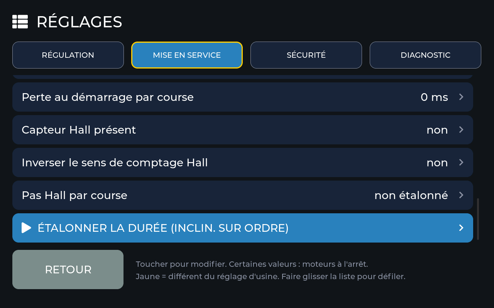
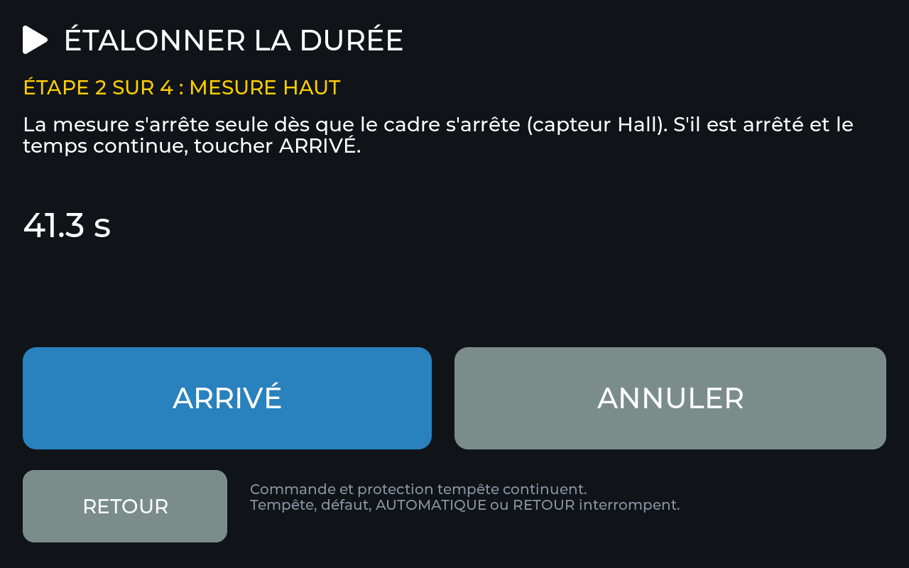
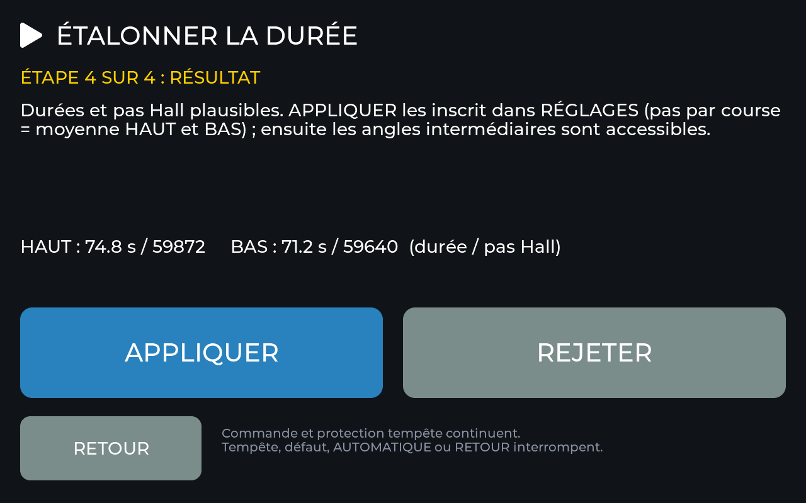
Le firmware vérifie le résultat : les durées doivent passer le contrôle décrit plus haut, HAUT et BAS doivent compter chacun au moins 1 000 pas Hall et ne pas différer de plus de 3 % (valeur proposée). Sinon, la raison s'affiche en jaune et rien n'est appliqué.
En fonctionnement :
- La carte INCLINAISON affiche l'inclinaison comptée sans « ENV. », par exemple « ACTUEL 30° (CAPTEUR HALL) » (Fig. 37). La précision sera mesurée sur le rack ; on suppose 0,2° (hypothèse).
- Après la mise sous tension, l'inclinaison est inconnue jusqu'à ce que l'élévation ait atteint une butée une fois. La première course vers un angle intermédiaire commence donc par une course vers la position à plat (course de référence). Avec capteur Hall, elle s'arrête dès que le moteur est immobile, et pas seulement après la durée maximale (butée par arrêt). Ensuite, l'élévation va directement à l'angle et coupe plus tôt, de la valeur de l'inertie apprise.
- Si le moteur s'arrête en cours de route (par exemple parce que les moteurs n'ont pas de tension ou que la commande synchrone a interrompu), la commande termine la course ; le log indique « Antrieb steht ohne Endlage » (moteur arrêté sans butée). L'inclinaison reste connue.
- Si vous déplacez le module depuis le coffret de commande (boutons de la commande synchrone), la commande compte aussi ; l'inclinaison reste correcte.
- En cas de tempête, de panne de l'anémomètre et de PARQUER À PLAT, l'élévation va comme toujours jusqu'à la position à plat. Le capteur Hall n'interrompt jamais cette course en cours de route. Si l'élévation est déjà à plat de façon établie, la course s'arrête après environ 1,5 seconde ; si l'inclinaison est inconnue, elle dure, comme sans capteur Hall, toute la durée maximale.
- Tant que « Pas Hall par course » n'est pas étalonné, l'écran continue d'afficher l'estimation avec « ENV. » ; la fin d'une course à l'arrêt existe toutefois déjà.
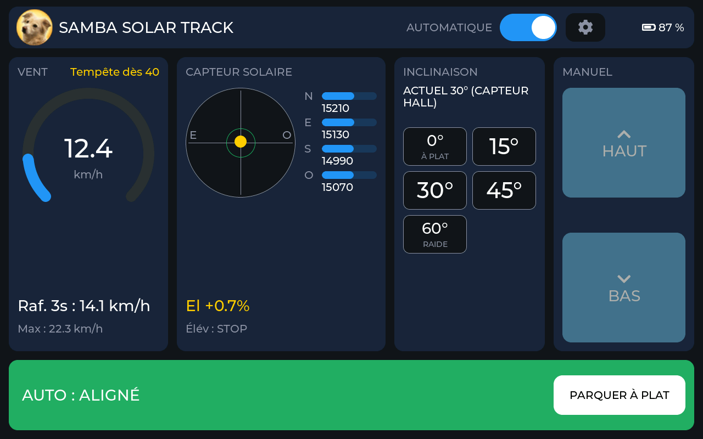
La commande ne compte pas d'impulsions cohérentes : il n'en arrive aucune alors que le moteur devrait tourner, elles comptent à contresens, ou il en arrive beaucoup trop (impulsions parasites). Vérifiez le câble sur J22, la HallTapBoard (voyants « 24V » et « 5V OK »), la tension des moteurs et le sens de comptage. Tant que l'avertissement est affiché, seuls 0° et 60° peuvent être choisis ; les angles intermédiaires affichent « CAPTEUR HALL EN DÉFAUT - PAS DE COURSE » (Fig. 38). Protection tempête, parking, automatique et mode manuel continuent de fonctionner comme sans capteur Hall. Dès qu'une course fournit de nouveau des impulsions cohérentes, l'avertissement disparaît de lui-même ; l'inclinaison est de nouveau connue à partir de la butée suivante. Le même avertissement apparaît dans l'interface web.
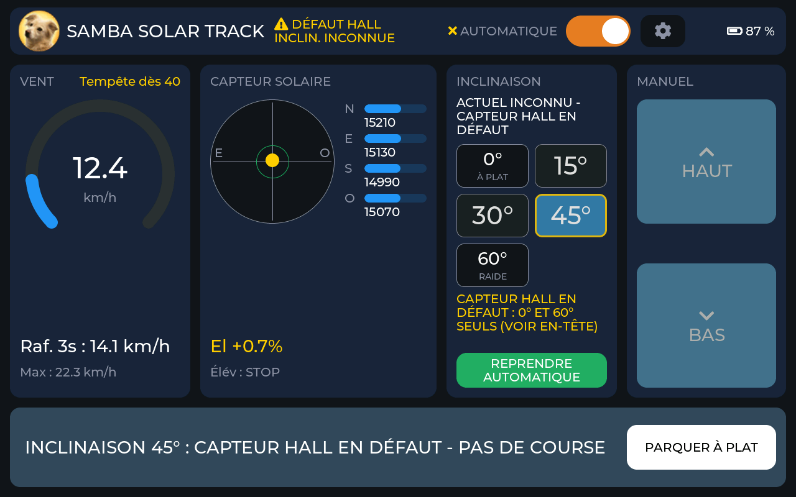
| Valeur (RÉGLAGES → MISE EN SERVICE) | Usine | Permis | Utilité |
|---|---|---|---|
| Capteur Hall présent | non | oui ou non | Active l'exploitation de J22. N'activer que si la HallTapBoard est raccordée. |
| Inverser le sens de comptage Hall | non | oui ou non | Pour le cas où les deux canaux A et B arrivent inversés ; la commande compte alors à rebours. |
| Pas Hall par course | non étalonné | 1 000 à 2 000 000 ; 0 = non étalonné | Nombre de pas Hall sur tout le trajet de 0° à 60°. Renseigné par l'étalonnage. |
Les trois valeurs ne peuvent être modifiées que tant qu'aucun moteur ne tourne.
[ 120.010][I][main ] Neigung auf Befehl: 30 Grad (vorher keine), Quelle Display [ 120.010][I][track ] Neigung 30 Grad: Bezugsfahrt noetig [ 168.420][I][motor ] Elevation: Endlage PLUS am Stillstand erkannt (Hall-Abgriff) nach 48410 ms [ 168.420][I][main ] Ausgang Elevation: RAUF -> STOP (Hall-Abgriff: Endlage am Stillstand) [ 168.420][I][hall ] Bezug Flachstellung (Stillstand, Stellung war unbekannt (Annahme: eigener Endschalter des Antriebs)), Stellung war unbekannt
Les lignes sont un exemple au format du firmware. Avec capteur Hall, la ligne d'état toutes les 5 secondes se termine par « | Neigung 30.2 Grad (Hall), Ziel 30 » (inclinaison 30,2° (Hall), cible 30).
Temps de démarrage 1,5 seconde et temps d'arrêt 1 seconde ; précision 0,2° ; filtre antiparasite 5 µs pour au plus environ 1 000 impulsions par seconde et par canal ; le sens de comptage du compteur d'impulsions ; fenêtre de butée 3 % du trajet ; tolérance à l'étalonnage 3 % ; que la commande synchrone HAKIWO SCN4 puisse partager la ligne Hall du moteur 1 avec le prélèvement ; que la mémoire qui survit à un redémarrage tienne sur la carte. Si l'élévation est immobile alors que l'inclinaison est inconnue, le firmware suppose que le moteur est sur son propre fin de course.
Pauses pour les moteurs : le facteur de marche (en préparation, non vérifié sur l'appareil)
Les vérins linéaires électriques ne doivent pas fonctionner en continu, sinon ils chauffent trop. Le revendeur HAKIWO indique pour les moteurs du Samba-Solar-Rack 2.0-E Plus un facteur de marche de 10 % et au plus 2 minutes d'affilée (manuel de montage, chapitres 3.6 et 14.4). Le firmware 10 pouces le respecte lui-même pour chaque moteur. Cela aussi n'est construit et testé que sur ordinateur.
- Compte de durée de coursePour chaque moteur, le firmware tient un compte. Chaque course y puise, chaque seconde d'arrêt le remplit de nouveau (d'un neuvième du temps). Plein, le compte permet 120 secondes de course d'affilée. Attendu : en fonctionnement normal, avec de courtes courses de suivi, vous ne remarquez rien.
- PauseQuand le compte est vide, une pause commence. Attendu : une course en cours s'arrête. La bande d'état devient orange et affiche « PAUSE FACTEUR DE MARCHE : MOTEUR LIBRE DANS 13:30 » (en mode manuel, en état « aligné » et pendant le temps de repos) ou, pour l'inclinaison sur ordre, « INCLINAISON 45° : PAUSE FACT. MARCHE, REPRISE DANS … » (Fig. 20). Le temps restant est décompté.
- De nouveau libreQuand 90 secondes de course sont accumulées, le moteur est de nouveau libre. Après un compte entièrement vidé, cela dure environ 13,5 minutes. Attendu : la bande d'état affiche de nouveau l'état normal ; une course en attente (inclinaison, étalonnage) reprend d'elle-même.
Même pendant la pause, l'élévation se met à plat si une tempête arrive, si l'anémomètre tombe en panne ou si vous choisissez PARQUER À PLAT. Ces courses vers la position à plat sont prioritaires. Tout le reste attend : course manuelle, suivi et course vers un angle. L'automatique termine une course de suivi en cours quand la pause commence et n'en démarre pas de nouvelle pendant la pause. L'appareil accepte les ordres venant du navigateur, mais le moteur attend la fin de la pause.
Sans fin de course, une course n'atteint la butée que si elle dure toute la durée maximale d'affilée. Une course de référence, la course vers 0° ou 60° et la course de référence lors de l'étalonnage ne commencent donc que lorsque le compte permet une course complète. D'ici là, l'écran affiche le temps d'attente. Ne changez donc pas souvent d'angle.
Les 90 secondes jusqu'à la libération sont une hypothèse (une course complète de 0° à 60° avec réserve) et seront vérifiées sur le rack. Après un redémarrage, le compte repart plein ; la durée de course avant le redémarrage n'est pas prise en compte.
[ 930.100][W][motor ] Elevation: Einschaltdauer erreicht -> Pause, Fahrt wieder in 810 s (Flachfahrt bei Sturm, Windmesser-Ausfall und Parken bleibt frei) [ 930.100][I][motor ] Elevation: Fahrt PLUS wegen Einschaltdauer beendet [ 930.100][I][main ] Ausgang Elevation: RAUF -> STOP (Zustand MANUAL) [ 1740.110][I][motor ] Elevation: Pause der Einschaltdauer beendet, Antrieb wieder frei
Remettre à plat en cas de tempête (en préparation, non vérifié sur l'appareil)
Sans fin de course sur le tracker, le firmware retient, après une course sur toute la durée maximale : « ici se trouve la butée » (butée par durée). Il ne va alors plus plus loin dans ce sens. C'est correct tant que les moteurs ont réellement bougé. Mais si l'alimentation tombe en panne (la carte continue alors sur batterie), si le fusible des moteurs se déclenche ou si la commande synchrone (par exemple HAKIWO SCN4) interrompt une course, les contacts de la carte commutent quand même, mais rien ne bouge, et le firmware croit à tort que le module est à plat.
C'est pourquoi le firmware 10 pouces annule une butée par durée dans le sens « à plat » et remet le module à plat :
- Au débutDès qu'une tempête commence, que l'anémomètre tombe en panne ou que vous choisissez PARQUER À PLAT (y compris juste après la mise sous tension dans l'un de ces états). Attendu : l'élévation se met à plat, même si, selon le firmware, elle l'est déjà. Sans fin de course, le contact reste alors fermé pendant toute la durée maximale.
- Toutes les 30 minutesTant que la tempête ou la panne de l'anémomètre dure, cela se répète toutes les 30 minutes (pas en parking). Attendu : environ toutes les 30 minutes, le contact « à plat » se ferme encore une fois pour la durée maximale.
Chacune de ces courses se termine toujours au plus tard après la durée maximale. Elle est prioritaire et a lieu même pendant une pause du facteur de marche. Avec des fins de course installés, il n'y a pas de butée par durée ; rien ne change alors. Avec le capteur Hall activé, la course s'arrête après environ 1,5 seconde si l'élévation est déjà à plat de façon établie ; si l'inclinaison est inconnue ou si le moteur s'arrête en cours de route, elle dure jusqu'à la durée maximale, comme sans capteur Hall.
Il n'est pas établi que la commande synchrone HAKIWO SCN4 accepte que la commande continue d'appuyer sur « à plat » en butée jusqu'à la durée maximale, sans signaler le code d'erreur 15. Le fabricant n'a pas répondu (état au 12.10.2026) ; ce sera vérifié sur le rack. D'ici là, c'est un point ouvert. Avec capteur Hall, une course vers la butée s'arrête environ 1 seconde après la dernière impulsion, au lieu de seulement après la durée maximale ; la question reste alors ouverte pour les courses à plat avec inclinaison inconnue et pour le fonctionnement sans capteur Hall.
Sans capteur Hall, le firmware ne voit pas si les moteurs bougent. La nouvelle course à plat n'aide qu'en cas de tempête, de panne de l'anémomètre et de parking. Avec le capteur Hall activé, les impulsions manquantes sont détectées (avertissement « CAPTEUR HALL EN DÉFAUT » ou « Antrieb steht ohne Endlage » dans le log) ; seul le moteur 1 est observé. L'entrée « 24 V présent » de la carte ne signale que la tension sur J11 : avec l'alimentation commune, donc aussi sa panne, mais jamais un fusible des moteurs déclenché.
[ 3600.000][I][track ] Zustand IDLE -> STORM (Auto ein, Boe 44.8 km/h, El +3, Az +0 Promille)
[ 3600.000][I][motor ] Elevation: Laufzeit-Endlage PLUS aufgehoben, neue Flachfahrt erlaubt
[ 3600.000][I][main ] Ausgang Elevation: STOP -> RAUF (Zustand STORM)
[ 3690.010][I][motor ] Elevation: Laufzeit-Endlage PLUS erreicht
… 30 Minuten später, der Sturm hält an …
[ 5400.000][D][track ] Zustand STORM haelt an: Flachfahrt wird erneut erlaubtQue le log indique « PLUS » ou « MINUS » dépend du réglage « sens de la position à plat » ; d'usine, à plat = HAUT = PLUS.
La carte RearCircuitBoard_10 ne peut être vérifiée que sur le matériel (chapitre 9). Sans firmware, aucun contact et aucun voyant ne commute. Ne pas brancher la batterie.
9Première mise en service du matériel
Ces étapes vérifient la carte sans firmware. Chaque étape a un résultat clair. Ne passez à la suivante que s'il est correct. Les étapes 4 à 7 se font avec la carte sur la table, pas encore sur la carte de l'écran.
- Débrancher la batterieLe connecteur de la batterie sur la carte de l'écran reste débranché. Attendu : la batterie n'est reliée à rien.
- Contrôle visuel et souduresExaminer toutes les soudures des borniers. Avec le testeur de continuité, vérifier sur J3 à J6 qu'aucune broche n'est reliée à sa voisine. Placer le cavalier J16 selon la section « Anémomètre », J21 sur 2-3. Attendu : aucun pont de soudure, les deux cavaliers sont en place.
- Contrôle des connecteursAvant la première mise sous tension, comparer chaque connecteur avec le tableau des borniers et l'image de la carte (Fig. 5) : bon connecteur sur le bon bornier, marquage correct. Puis regarder J7, J10, J14 et J22 de côté. Attendu : chaque connecteur est à fleur sur son embase, aucune broche de l'embase n'est libre, aucun connecteur ne dépasse l'extrémité d'un bornier. Dès qu'il existera un firmware pour la carte 10,1 pouces, s'y ajoutera : au démarrage, aucun message concernant les fins de course ou les voyants n'apparaît.
- Forcer le blocage et mesurerRaccorder la carte seule (pas encore sur la carte de l'écran) au 24 V, cavalier J21 sur 1-2. Mesurer au multimètre sur les soudures de J1 : broche 2 par rapport à la broche 6. Attendu : 3,8 à 4,1 V. Si la valeur est plus élevée, le blocage est défectueux : ne pas utiliser la carte.
- Fonctionnement et délaiCouper le 24 V, J21 sur 2-3, rétablir le 24 V (la pièce devrait être entre 15 et 30 °C). Observer la tension sur J1 broche 2 par rapport à la broche 6. Attendu : d'abord environ 4 V ; après 45 à 101 minutes (le plus souvent environ 71 minutes), elle passe à 4,9 à 5,2 V.
- Test au froidÀ 4,9 à 5,2 V, pulvériser brièvement du spray réfrigérant à côté de l'îlot de cuivre en haut à gauche, pas directement sur les composants. Attendu : la tension tombe immédiatement à environ 4 V. Après réchauffement, elle reste d'abord à 4 V ; ce n'est qu'après le délai qu'elle remonte à environ 5 V.
- Test au chaudChauffer prudemment l'îlot de cuivre au-dessus de 37 °C avec un pistolet à air chaud réglé bas ; contrôler la température avec un thermomètre sur l'îlot, pas au-dessus de 60 °C. Attendu : la tension tombe à environ 4 V. Après refroidissement, elle revient à environ 5 V après le délai. Ce test trouve des défauts de soudure que le spray réfrigérant ne trouve pas.
- MonterPlacer la carte sur la carte de l'écran avec entretoises et pads selon le chapitre 5. Attendu : entretoises et pads sont sous l'îlot et ne glissent pas ; la carte repose à plat sur les quatre entretoises.
- Allumer la carte de l'écranMettre l'interrupteur à glissière de la carte sur marche, mettre le 24 V. Attendu : la carte démarre (l'écran affiche l'image du logiciel d'usine ou reste noir sans firmware). Le voyant de charge de la carte, s'il existe, reste éteint : sans batterie, il n'y a pas de charge, il ne s'allume donc de toute façon pas (hypothèse).
- Sorties de commutation et fins de courseSeulement avec le firmware pour la carte 10,1 pouces (en préparation) : maintenir chaque bouton de l'écran et mesurer avec le testeur de continuité, à travers le connecteur branché, entre les deux conducteurs (connecteurs des sorties de commutation) ; appuyer sur chaque fin de course. Attendu : exactement le contact correspondant se ferme, exactement le fin de course actionné est signalé.
Le fonctionnement de la coupure en cas de surtension (chapitre 5) ne peut être vérifié qu'avec une alimentation de laboratoire sur un prototype ; le firmware ne pourra pas le vérifier plus tard. Ce contrôle fait partie du plan de mesure avant la commande (annexe 11 E).
Spray réfrigérant seulement brièvement et à 10 à 20 cm de distance, air chaud seulement réglé bas. Ne rien toucher sur les bornes du 24 V tant qu'elles sont sous tension.
10Les termes expliqués simplement
- Capuchon d'obturation
- Un couvercle en plastique qui ferme l'extrémité ouverte d'un profilé aluminium. Le support du capteur solaire remplace un tel capuchon et porte en plus le capteur.
- Dénuder
- Retirer sur une longueur définie la gaine plastique (isolant) à l'extrémité d'un conducteur, afin que le métal nu fasse contact dans le bornier. Le mieux est d'utiliser une pince à dénuder ; les fils en dessous ne doivent pas être entaillés.
- Résistance de terminaison
- Une résistance de 120 Ω entre les conducteurs A et B d'une ligne RS485, à ses deux extrémités. Elle empêche que les signaux soient réfléchis en bout de ligne.
- Entretoise
- Une petite colonne métallique filetée. Avec filetage mâle et femelle, elle remplace une vis et porte en même temps une deuxième carte à la bonne distance. La HallTapBoard n'en a pas besoin : elle est vissée directement sur des plots en plastique dans son boîtier, afin que la fixation ne crée aucune liaison conductrice.
- Convertisseur abaisseur
- Un circuit qui produit une tension continue plus basse à partir d'une plus élevée, ici les 5 V pour la carte de l'écran à partir de 24 V. Il perd peu d'énergie et chauffe à peine.
- Embout de câblage
- Un petit tube métallique serti avec une pince sur l'extrémité dénudée d'un conducteur multibrin. Il maintient ensemble les nombreux fils fins, afin qu'aucun ne dépasse et que le conducteur tienne bien dans le bornier.
- ADS1115
- Un composant de mesure. Il convertit la tension des cellules lumineuses en nombres avec lesquels le calculateur peut travailler.
- Profilé aluminium (profilé à rainure)
- Une barre en aluminium à section constante, ici 40 × 40 mm, avec une rainure sur chaque face (rainure 8) et un perçage au centre. Le Samba-Solar-Rack, par exemple, est construit avec de tels profilés.
- Batterie (batterie lithium)
- Une batterie rechargeable. La batterie de la carte 10,1 pouces fait 3,7 V. Les batteries lithium ne doivent être chargées que dans une plage de température limitée, sinon elles vieillissent vite ou deviennent dangereuses.
- Perte au démarrage
- La partie de chaque course pendant laquelle le cadre ne bouge pas encore, par exemple parce que des relais s'enclenchent ou que la commande des moteurs démarre lentement. Pour l'inclinaison sur ordre, elle peut être saisie sous RÉGLAGES.
- Anode / cathode
- Les deux bornes d'une diode. Une diode ne laisse passer le courant que dans un sens, de l'anode vers la cathode. Sur une diode électroluminescente, l'anode est donc le plus et la cathode le moins. Sur la carte, un trait ou un angle dans la sérigraphie indique généralement la cathode ; sur la grande diode D5, la cathode est la languette de refroidissement.
- ASA / PETG
- Deux plastiques pour l'imprimante 3D. L'ASA résiste au soleil et à la chaleur jusqu'à environ 100 °C et convient donc au boîtier de la HallTapBoard dans le coffret de commande ; le PETG est plus facile à imprimer, mais ramollit dès environ 80 °C (valeurs indicatives, non vérifiées).
- Installer (flasher)
- Écrire le firmware dans la mémoire de la carte, par un câble USB ou par le réseau.
- Azimut
- La rotation du module d'est en ouest.
- Aperçu d'assemblage
- Une image de la carte entièrement assemblée, que JLCPCB montre lors de la commande avant le paiement. Vous y vérifiez que chaque composant est dans le bon sens. Sur les composants polarisés, un point rouge marque le côté que JLCPCB prend comme référence ; ce n'est pas toujours la broche 1.
- Détecteur de mouvement
- Détecte si quelque chose bouge devant un appareil. Ici, c'est la caméra intégrée de l'écran qui s'en charge : le firmware compare chaque image aux précédentes, sans l'enregistrer.
- Référence, course de référence
- Une référence est une butée où la position est connue avec certitude. La course de référence y conduit (le plus souvent à plat) avant que l'inclinaison sur ordre ne rejoigne un angle intermédiaire. Après une référence, l'incertitude est nulle.
- Économiseur d'écran
- Un affichage sombre et calme que l'écran montre quand personne ne se trouve devant pendant un moment. Il économise du courant et n'éblouit pas. Un toucher ou un mouvement ramène l'affichage normal.
- Rafale
- Un coup de vent court et violent. La commande calcule avec la moyenne sur trois secondes.
- Bootloader
- Un petit programme de démarrage au début de la mémoire. À la mise sous tension, il lance le firmware proprement dit. Il est contenu dans l'image d'usine.
- Connecteur femelle / barrette mâle
- Deux pièces complémentaires pour enficher des cartes l'une dans l'autre : la barrette mâle a des broches, le connecteur femelle des ouvertures correspondantes. La carte RearCircuitBoard_10 s'enfiche avec sa barrette J1 dans le connecteur femelle J8 de la carte de l'écran.
- Codec (codec audio)
- Un composant qui convertit des nombres venant du calculateur en une tension sonore. Sur la carte 10,1 pouces, il s'appelle ES8311 ; un petit amplificateur (NS4150B) pilote ainsi le haut-parleur.
- dBFS
- Mesure du volume d'un son numérique : 0 dBFS est le son le plus fort que le codec peut produire, les valeurs plus petites (négatives) sont plus faibles. 3 dB de moins signifie la moitié de la puissance.
- Entretoise en laiton
- Une petite colonne en laiton avec un taraudage aux deux extrémités. Ici, l'une d'elles est placée sans vis entre deux pads thermiques et conduit la température de la paroi arrière vers le capteur sur la carte.
- Mode téléchargement
- Un état de démarrage particulier de la puce, dans lequel elle accepte un nouveau firmware par USB au lieu de le lancer. Le PC l'active normalement lui-même ; à la main : maintenir BOOT, appuyer sur RESET, relâcher BOOT.
- Testeur de continuité
- Un appareil de mesure simple, ou une position du multimètre, qui bipe quand deux points sont reliés électriquement. Vous vérifiez ainsi, par exemple, si un contact est fermé.
- Monobrin / multibrin
- Un conducteur monobrin est constitué d'un seul fil rigide. Un conducteur multibrin (fil souple) est constitué de nombreux fils fins et est flexible. Les conducteurs multibrins reçoivent de préférence un embout de câblage avant d'être insérés dans une borne à ressort.
- Étalonnage
- La mesure guidée des deux durées de course sur l'écran (Paramètres → RÉGLAGES → MISE EN SERVICE → ÉTALONNER LA DURÉE). Sans étalonnage, l'inclinaison sur ordre ne connaît que 0° et 60°.
- Facteur de marche
- La part du temps pendant laquelle un moteur peut fonctionner sans trop chauffer. Ici, 10 % et au plus 2 minutes d'affilée ; ensuite, le moteur a besoin d'une pause. Le firmware 10 pouces le respecte lui-même ; seule la course à plat en cas de tempête, de panne de l'anémomètre et de parking a lieu aussi pendant la pause.
- Patte d'éléphant
- En impression 3D, la première couche est pressée sur le plateau et s'élargit un peu. De fins creux sur le dessous d'une pièce peuvent ainsi se boucher. De nombreux logiciels d'impression ont un réglage de compensation pour cela.
- électricien qualifié
- Une personne ayant une formation en électrotechnique et de l'expérience, autorisée à effectuer des travaux sur la tension secteur (230 V). Raccorder des alimentations, poser des prises ou installer des lignes sur le réseau électrique relève de sa compétence.
- Fusible électronique
- Un petit composant qui protège comme un fusible, mais ne fond pas. Si trop de courant circule, il le limite ou coupe, puis réessaie de lui-même après un court instant. Sur la carte RearCircuitBoard_10, deux d'entre eux protègent l'entrée 24 V (U16) et les 5 V vers la carte de l'écran (U15).
- Élévation
- L'inclinaison du module, de à plat jusqu'à raide.
- Fins de course
- Un interrupteur en fin de course. Il signale : on ne peut pas aller plus loin.
- esptool
- Le programme du fabricant de la puce, Espressif, qui écrit le firmware sur les cartes ESP32. Les pages du navigateur l'utilisent en arrière-plan.
- Extended / Basic
- Les deux classes de la bibliothèque de pièces de JLCPCB. Pour chaque type de composant de la classe « Extended », JLCPCB facture des frais de mise en place par commande, pas pour « Basic ».
- Durée de course
- Le temps dont le moteur a besoin pour tout le trajet de 0° à 60° (plus raide) ou retour (plus plat). Le firmware en déduit une estimation de l'inclinaison.
- Borne à ressort (push-in)
- Une borne sans vis : un ressort dans le connecteur serre le conducteur. Un conducteur rigide ou muni d'un embout s'enfonce simplement jusqu'en butée. Pour le libérer, appuyez sur le petit poussoir à côté de l'ouverture et retirez le conducteur.
- Comparateur à fenêtre
- Un circuit qui vérifie si une valeur mesurée se situe entre deux limites, ici si la température est entre 10 et 35 °C.
- Firmware
- Le logiciel qui tourne sur la carte.
- Flash
- La mémoire de la carte, qui contient le firmware et les réglages enregistrés. Elle garde son contenu même sans courant.
- Ligne de détection (Remote Sense)
- Deux fins conducteurs supplémentaires de certaines alimentations, par lesquels l'alimentation mesure la tension à un point éloigné et compense la perte dans la ligne. Avec Samba Solar Track, ils restent à l'alimentation : s'ils étaient menés jusqu'aux moteurs, la tension à la commande serait trop élevée.
- Taux de remplissage (infill)
- La densité de remplissage de l'intérieur d'une pièce imprimée, en pourcentage. 100 % signifie entièrement plein ; cela rend une pièce lourde et solide, mais consomme beaucoup de filament.
- Isolé galvaniquement
- Deux circuits sans liaison conductrice entre eux. Un signal passe malgré tout, par exemple par la lumière dans un optocoupleur. Les deux côtés peuvent ainsi avoir des masses et des alimentations différentes sans se perturber.
- Contre-écrou
- Un écrou qui maintient un presse-étoupe de l'intérieur dans la paroi du boîtier. Le presse-étoupe est passé de l'extérieur dans le trou, le contre-écrou est vissé à l'intérieur sur son filetage ; puis les deux sont serrés l'un contre l'autre.
- Structure G1 / G2
- La forme de construction du Samba-Solar-Rack (position de l'axe de rotation). Elle détermine quelle course du moteur correspond à quelle inclinaison. G1 : Rack 2.0-D et 2.0-E ; G2 : 2.0-E Plus, 2.1 et 2.1 Plus. Pour les autres structures, il existe « linéaire » (une hypothèse).
- Insert fileté
- Une petite douille en laiton avec taraudage, que l'on fait fondre avec le fer à souder chaud dans un trou d'une pièce imprimée (aussi appelée « insert thermique »). On peut ensuite y visser et dévisser souvent une vis métallique sans que le filetage ne s'arrache du plastique. Le boîtier de la HallTapBoard a huit inserts ruthex M3, le support du capteur solaire deux inserts ruthex M4.
- Tige filetée
- Une tige filetée sur toute sa longueur, ici M8 en acier inoxydable. Dans le support pendulaire, elle est l'axe autour duquel le pendule tourne.
- Filtre glitch (filtre antiparasite)
- Un filtre dans le compteur d'impulsions qui ne compte pas les impulsions très courtes. Sur l'entrée d'impulsions J22, les impulsions de moins de 5 µs sont considérées comme parasites.
- GND
- Masse, le pôle négatif commun du circuit.
- Capteur Hall (prélèvement)
- Le prélèvement des impulsions des capteurs à effet Hall sur la commande synchrone, sans les perturber. C'est le rôle de la HallTapBoard. Si « Capteur Hall présent » est activé sous RÉGLAGES, le firmware 10 pouces compte les impulsions et connaît ainsi l'inclinaison (chapitre 8).
- Pas Hall
- Chaque changement entre LOW et HIGH (front) sur l'un des deux canaux A et B. Une impulsion correspond à 4 pas Hall. « Pas Hall par course » est le nombre de pas pour tout le trajet de 0° à 60°.
- Capteur à effet Hall
- Un petit capteur qui détecte un champ magnétique. Dans de nombreux vérins linéaires, il y en a un sur le moteur : à chaque tour, il émet des impulsions. Qui compte les impulsions sait quelle distance le moteur a parcourue. Avec deux canaux (A et B), on détecte aussi le sens.
- HallTapBoard
- Une petite carte maison pour le coffret de commande (ébauche 0.5 avec boîtier imprimé en 3D, pas encore fabriquée). Elle prélève sur la commande synchrone HAKIWO SCN4 les impulsions des capteurs Hall du moteur 1 et les transmet, isolées galvaniquement par optocoupleurs, sous forme de deux contacts libres de potentiel à l'entrée d'impulsions J22 de la carte RearCircuitBoard_10. Elle est alimentée par les 24 V des moteurs (chapitre 6).
- HTTPS
- La forme chiffrée de la connexion à un site internet. L'appareil vérifie, à l'aide d'une liste intégrée d'autorités de confiance (certificats), qu'il communique vraiment avec le site du projet.
- Hiccup
- Anglais pour « hoquet » : en cas de court-circuit, le convertisseur coupe, attend un peu et réessaie, encore et encore, jusqu'à ce que le défaut soit éliminé. Ainsi, rien ne chauffe trop. Certaines alimentations se comportent de la même façon en surcharge ; cela ne convient pas pour l'alimentation commune.
- HIGH / LOW
- Les deux états d'un signal numérique : tension présente (HIGH) ou pas de tension (LOW).
- Durée maximale
- La durée pendant laquelle un moteur peut fonctionner d'affilée. Avec fins de course, une course plus longue est une erreur ; sans fins de course, la butée est ensuite considérée comme atteinte (butée par durée).
- Hystérésis
- L'écart entre le seuil d'enclenchement et le seuil de déclenchement. Sur l'entrée d'impulsions J22, le comparateur bascule à environ 2,05 V dans un sens et seulement à environ 2,36 V dans l'autre. De petites perturbations sur la ligne ne produisent ainsi pas de fausses impulsions.
- I2C
- Une liaison à deux lignes (SDA et SCL) sur laquelle plusieurs composants sont branchés. Chacun a sa propre adresse.
- Blindage de câble
- Une tresse ou un film autour des conducteurs d'un câble. Relié à GND d'un côté, il tient les perturbations à l'écart des conducteurs.
- Presse-étoupe (presse-étoupe PG)
- Un passage pour un câble à travers une paroi de boîtier. En serrant l'écrou borgne, une bague d'étanchéité se resserre autour de la gaine du câble : le câble est alors étanche et protégé contre l'arrachement (décharge de traction). « PG 11 » est la taille du filetage (filetage blindé) ; chaque taille n'assure l'étanchéité que pour des câbles d'une certaine plage de diamètre extérieur, pour le PG 11 de Lapp 4 à 10 mm.
- Spray réfrigérant
- Un spray vendu dans le commerce électronique, qui refroidit fortement un point en quelques secondes. Il permet de vérifier si un capteur de température réagit correctement.
- Avant-trou
- Le perçage dans lequel on taille un filetage. Pour M8, il fait 6,8 mm ; le perçage central de nombreux profilés aluminium 40 × 40 a exactement cette dimension.
- Comparateur
- Un composant qui compare deux tensions et indique en sortie laquelle est la plus élevée. Sur la carte RearCircuitBoard_10, il y en a deux : dans le blocage de charge (U18) et à l'entrée d'impulsions J22 (U22).
- Ligne de fuite / distance dans l'air
- Le chemin le plus court entre deux conducteurs, sur la surface de la carte (ligne de fuite) ou à travers l'air (distance dans l'air). Plus il est long, plus un courant de défaut, par exemple via l'humidité et la saleté, a du mal à trouver un chemin.
- Roulement à billes
- Un anneau avec des billes entre une bague intérieure et une bague extérieure, pour qu'une pièce tourne presque sans frottement. Le roulement 608 (8 × 22 × 7 mm) est très répandu, par exemple dans les rollers.
- Languette de refroidissement
- Une grande surface métallique sur le boîtier d'un composant, posée à plat sur la carte et soudée. Par elle et par le cuivre de la carte, le composant évacue sa chaleur. Sur la diode D5, la languette de refroidissement est aussi une borne, la cathode.
- Chargeur
- Le circuit sur la carte de l'écran qui charge la batterie à partir des 5 V. Il ne charge que si sa tension d'entrée est suffisamment élevée (environ 4,5 V).
- Blocage de charge
- Le circuit de la carte RearCircuitBoard_10 qui empêche la charge de la batterie quand il fait trop froid ou trop chaud : il abaisse alors les 5 V de la carte de l'écran à environ 4 V.
- Butée par durée
- Sans fin de course sur le tracker, une butée est considérée comme atteinte lorsque le contact est resté fermé pendant toute la durée maximale ; le moteur est alors sur son propre fin de course intégré. Elle peut être fausse si les moteurs n'avaient pas de tension ou si leur commande a interrompu la course. Avec capteur Hall, on dispose à la place de la butée par arrêt, plus précise.
- Réduction de puissance (derating)
- Par forte chaleur, une alimentation fournit moins que sa puissance nominale. Une courbe de la fiche technique indique de combien. Montez donc l'alimentation à l'ombre.
- Diode électroluminescente (LED)
- Un petit composant qui s'allume quand le courant le traverse dans le bon sens. Il a besoin d'une résistance série qui limite le courant.
- Guide de lumière
- Une tige en plastique transparent (ici du verre acrylique, PMMA) qui conduit la lumière comme un tuyau : ce qui éclaire le bas ressort au bout, en haut. On voit ainsi de l'extérieur un voyant dans le boîtier, et le trou du couvercle reste pourtant fermé.
- Puits de lumière
- Un court tube allant du couvercle d'un boîtier jusque juste au-dessus d'un voyant sur la carte. Il conduit la lumière jusqu'au trou du couvercle, de sorte qu'on voit le voyant de l'extérieur sans ouvrir le couvercle.
- Vérin linéaire
- Un moteur qui fait sortir et rentrer une tige.
- Pont de soudure
- De l'étain qui, lors du soudage, relie involontairement deux broches voisines. Ce qui doit être séparé est alors relié électriquement. Vous le trouvez avec le testeur de continuité : il bipe entre les deux broches. Pour l'éliminer, retirez l'étain en excès avec le fer à souder chaud, puis vérifiez de nouveau.
- Manifeste
- Un petit fichier texte sur le site du projet. Il indique le firmware le plus récent : numéro de version, date, taille, une somme de contrôle du fichier et la signature. L'appareil reconnaît ainsi s'il existe un firmware plus récent et si le fichier est authentique et complet.
- Modbus-RTU
- Une « langue » répandue pour les appareils de mesure. La carte interroge, l'appareil répond avec la valeur mesurée et une somme de contrôle.
- Inertie (course résiduelle)
- La distance que le moteur parcourt encore après la coupure. Avec capteur Hall, la commande mesure l'inertie pour chaque sens et, lors d'une course vers un angle, coupe d'autant plus tôt.
- NC / NO
- Contact à ouverture (normally closed) et contact à fermeture (normally open). Indique si un contact est fermé ou ouvert au repos.
- Inclinaison sur ordre
- L'élévation va à un angle choisi et y reste ; l'automatique est en pause jusqu'à ce que vous la repreniez. Dans le log, cet état s'appelle POSITION. Uniquement version 10 pouces, uniquement avec un axe.
- NTC
- Une résistance dont la valeur diminue quand la température augmente. La carte mesure ainsi la température.
- Optocoupleur
- Un composant qui transmet un signal par la lumière : une petite diode électroluminescente d'un côté commute un transistor de l'autre. L'entrée et la sortie sont séparées électriquement. La sortie se comporte comme un contact libre de potentiel.
- PCA9538
- Un composant avec huit entrées et sorties supplémentaires, piloté via I2C.
- Pendule
- Un corps suspendu de façon à pouvoir tourner et qui, par son poids, se place de lui-même verticalement vers le bas. Le support pendulaire l'utilise pour que l'anémomètre soit toujours vertical.
- PhotoMOS
- Un interrupteur électronique sans pièces mobiles. Une petite diode électroluminescente à l'intérieur commute le contact, les deux côtés sont séparés électriquement.
- Inversion de polarité
- Échanger le plus et le moins sur le moteur pour qu'il tourne en sens inverse.
- Condensateur polymère
- Un condensateur avec un plastique solide au lieu d'un contenu liquide. Il dure longtemps et amortit bien les variations de tension.
- Libre de potentiel
- Un contact qui n'est relié à aucune tension de la commande. Il se comporte comme un simple bouton-poussoir à deux bornes.
- Pull-up / pull-down
- Une résistance qui tire une ligne vers un état fixe tant que personne ne la pilote.
- Compteur d'impulsions (PCNT)
- Une partie du calculateur ESP32-P4 qui compte de façon autonome les impulsions sur une broche, même très rapides, sans charger le programme. Le firmware 10 pouces compte ainsi les impulsions de l'entrée J22 lorsque le capteur Hall est activé.
- Quadrature
- Deux signaux (canal A et B) décalés d'un quart de période l'un par rapport à l'autre. D'après l'ordre dans lequel ils changent, la commande reconnaît le sens du mouvement.
- Pas
- La distance d'axe en axe entre deux bornes voisines d'un bornier ou d'une barrette, par exemple 3,5 mm. Le connecteur et le bornier doivent avoir le même pas.
- RearCircuitBoard_10
- La carte maison pour la carte 10,1 pouces ESP32-P4-WIFI6-Touch-LCD-10.1. Elle est fixée à l'extérieur sur la paroi arrière de l'appareil et s'enfiche avec la barrette J1 dans son connecteur femelle J8 (en préparation).
- Relais
- Un interrupteur commandé électriquement. Un petit courant commute un grand courant.
- Voyant RVB
- Trois diodes électroluminescentes dans un même boîtier : rouge, vert et bleu. Rouge et vert ensemble donnent du jaune.
- RS485
- Une liaison de données robuste sur deux lignes (A et B), adaptée aux longs câbles en extérieur.
- Clé (clé de signature)
- Une paire de nombres qui vont ensemble. Avec la partie secrète, le développeur signe un nouveau firmware ; chaque firmware contient la partie publique et vérifie ainsi la signature. Seul le développeur possède la partie secrète.
- Indice de protection (IP65, IP67)
- Indique dans quelle mesure un appareil est protégé contre la poussière et l'eau. Le premier chiffre concerne la poussière (6 = étanche à la poussière), le second l'eau (5 = jets d'eau, 7 = immersion brève). Une alimentation en extérieur a besoin d'un indice de protection élevé.
- Très basse tension de sécurité (TBTS / SELV)
- Abréviation de « safety extra-low voltage » : une tension si faible qu'elle n'est pas dangereuse au toucher, et produite de façon sûrement séparée du réseau électrique, par exemple par une alimentation homologuée à cet effet. Avec Samba Solar Track, la carte reçoit au plus 30 V de tension continue.
- Auto-maintien
- Un circuit qui se maintient de lui-même après déclenchement. Ici, il maintient l'entrée 24 V coupée jusqu'à ce que les 24 V soient coupés.
- Autotest
- Un court contrôle qu'un firmware fraîchement installé effectue sur lui-même : l'écran fonctionne-t-il, et le composant des sorties de commutation de la carte répond-il (en simulation, l'écran suffit) ? Si le Wi-Fi est activé, l'appareil doit en outre s'être connecté au moins une fois au Wi-Fi depuis le redémarrage. Ce n'est qu'ensuite que le nouveau firmware est considéré comme bon. S'il échoue au contrôle, l'appareil revient au firmware précédent.
- Signature (signature numérique)
- Une suite de nombres qui ne peut être produite qu'avec la clé secrète du projet. Si quelqu'un modifie ne serait-ce qu'un caractère du fichier signé, elle ne correspond plus. Ainsi, l'appareil n'accepte que les firmwares provenant réellement du projet.
- Fusible réarmable
- Un fusible qui, en cas de courant excessif, chauffe et devient très résistif, puis se referme de lui-même après refroidissement. Il n'est pas nécessaire de le remplacer.
- Simulation
- Un mode de test sans la carte RearCircuitBoard_10 : le firmware ne fait que simuler le tracker, les capteurs et les moteurs, et ne commute rien.
- SMD
- Abréviation de « surface-mounted device » : composants soudés à plat sur la surface de la carte, sans trous. JLCPCB les pose avec des machines. Leurs pendants sont les composants traversants comme les borniers et les barrettes, dont les broches passent par des trous de la carte et sont ensuite soudées.
- Soft Termination
- Condensateurs à terminaisons souples. Si la carte se plie, ils se fissurent moins souvent.
- Régulateur de tension
- Un composant qui produit, à partir d'une tension plus élevée et fluctuante, une tension fixe plus basse, par exemple exactement 5 V à partir de 24 V. Un régulateur simple (régulateur linéaire) comme le TPS7B69 de la HallTapBoard transforme le reste de la tension en chaleur.
- Diviseur de tension
- Deux résistances en série qui divisent une tension selon un rapport fixe. Sur la carte 10,1 pouces, R92 et R93 divisent la tension de la batterie par trois, afin que l'entrée de mesure de la puce puisse la mesurer.
- Perte de tension (chute de tension)
- Chaque ligne a une petite résistance. Quand le courant circule, une partie de la tension s'y perd : d'autant plus que la ligne est longue et fine et que le courant est grand. Le calcul tient compte de l'aller et du retour.
- Bornier enfichable
- Un bornier en deux parties : l'embase est soudée sur la carte, les conducteurs vont dans le connecteur amovible. Le plus souvent, une petite vis les maintient ; sur les sorties de commutation de la carte RearCircuitBoard_10, c'est une borne à ressort. On peut ainsi remplacer la carte sans débrancher les conducteurs.
- Cavalier (jumper)
- Un petit connecteur qui relie deux broches voisines. En le déplaçant, on active ou désactive une liaison.
- Bague d'arrêt
- Un anneau métallique avec une vis de serrage, vissé sur un tube ou un arbre. Il empêche une pièce de glisser ou de tomber.
- Câblage en étoile
- Chaque consommateur reçoit sa propre ligne directement depuis les bornes de l'alimentation, comme les rayons d'une étoile. Ainsi, le fort courant des moteurs ne passe pas par la ligne de la commande, et chaque ligne a son propre fusible adapté.
- Butée par arrêt
- Une butée que la commande reconnaît, avec capteur Hall, au fait qu'aucun pas Hall n'arrive plus malgré la sortie activée : après un démarrage de 1,5 seconde, aucun pendant 1 seconde (hypothèses). La course se termine alors immédiatement, et non seulement après la durée maximale. Si en revanche le moteur s'arrête en cours de route, la commande termine la course sans butée (« Antrieb steht ohne Endlage », moteur arrêté sans butée).
- Paroi frontale
- La paroi fermée à l'extrémité de l'embase d'un bornier enfichable. Elle maintient le connecteur latéralement, afin qu'il ne puisse pas être enfiché décalé.
- Limitation de courant (CV+CC)
- Une alimentation à tension constante (CV) et limitation de courant (CC) maintient la tension jusqu'à ce que le courant maximal soit atteint ; au-delà, elle limite le courant et continue de fournir, au lieu de couper. Son pendant est une alimentation à hiccup.
- Commande synchrone
- Un appareil de commande qui fait avancer deux moteurs à la même vitesse, pour que la structure ne se torde pas, par exemple la HAKIWO SCN4 sur le Samba-Solar-Rack 2.0-E Plus. La carte ne commute que son entrée bouton-poussoir.
- Temps mort
- La pause entre l'arrêt et la course dans le sens opposé.
- Pilote
- Un petit programme pour le PC, afin qu'il reconnaisse un appareil raccordé, ici le composant USB CH343 de la carte, comme port.
- Zone d'isolement
- Une bande de la carte sans cuivre entre deux parties du circuit qui ne doivent pas être reliées de façon conductrice. Sur la HallTapBoard, elle fait 7 mm de large ; seuls les optocoupleurs la franchissent, avec de la lumière au lieu du courant.
- Incertitude
- L'écart maximal estimé entre l'inclinaison affichée et la réalité. Elle augmente à chaque course et est nulle après une référence. À partir de 6°, l'écran affiche « INCONNU ».
- Protection contre l'inversion de polarité
- Une diode à l'entrée de l'alimentation qui ne laisse passer le courant que dans le bon sens. Si le plus et le moins sont raccordés inversés, elle bloque, et le circuit en aval ne reçoit pas de tension et n'est pas endommagé. Sur la HallTapBoard, les deux voyants restent alors éteints.
- Via
- Un petit perçage métallisé qui relie les couches de cuivre d'une carte. Sur la carte RearCircuitBoard_10, tous les vias sont remplis et bouchés, afin que l'étain n'y coule pas lors du soudage.
- Pad thermique
- Un coussin souple, isolant électrique, qui conduit bien la chaleur et comble les interstices entre deux pièces.
- Web Serial
- Une capacité de certains navigateurs (Chrome, Edge, Opera, Firefox récents) à communiquer avec un appareil sur le port USB. On peut ainsi installer un firmware sans programme spécifique.
- Image d'usine (factory.bin)
- Le fichier contenant tout ce dont une carte vierge a besoin pour démarrer : bootloader, partitionnement de la mémoire et firmware. Il est écrit au début de la mémoire (0x0) et efface les réglages enregistrés.
- Angle favori
- Un angle de 1 à 59° réglé soi-même pour l'inclinaison sur ordre, en plus de 0°, 30° et 60°.
- Bornier enfichable à deux rangées
- Un bornier enfichable avec deux rangées de bornes superposées. Sur les sorties de commutation de la carte RearCircuitBoard_10, seules deux broches diagonalement opposées sont utilisées : pour HAUT et BAS (J3, J4), deux sur quatre, pour EST et OUEST (J5, J6), les deux extérieures sur six. Leur connecteur ne s'adapte sur aucun bornier à une rangée ni sur J11. Un connecteur de HAUT ou BAS dans EST ou OUEST, ou inversement, même enfiché décalé, touche au plus une broche de contact et ne commute rien ; un connecteur étranger ne peut donc pas ponter le contact.
11Annexe
Nomenclature, sources d'approvisionnement, coûts, brochage de la barrette, plan de mesure avant la commande et la HallTapBoard (G). État : ébauche 0.10 du 11 octobre 2026 (ébauche 0.9 du 8 octobre 2026, complétée par les ponts sur l'îlot du capteur et l'entrée d'impulsions J22).
A. Nomenclature (variante d'assemblage smd)
JLCPCB pose les 233 composants SMD (83 références, dont 37 de la classe « Extended » et 46 « Basic » ; R92 et C38 restent non équipés). Dans la variante d'assemblage « voll » (complète), JLCPCB soude en plus les 15 borniers et barrettes (248 composants, 91 références). L'entrée d'impulsions J22 (11.10.2026) ajoute 20 composants SMD et aucun nouveau type Extended. Les repères figurent aussi dans la sérigraphie de la carte.
| Composant | Type | N° JLCPCB | Classe | Qté | Repère | Rôle |
|---|---|---|---|---|---|---|
| Composant de mesure | ADS1115IDGS (VSSOP-10) | C37593 | Extended | 2 | U1, U20 | Capteur solaire (0x48) ; surveillance (0x49) |
| Composant E/S | PCA9538PW, TI (TSSOP-16) | C201530 | Extended | 2 | U2, U8 | Sorties de commutation/ |
| Contact de commutation | PhotoMOS AQY212GS (SOP-4) | C415471 | Extended | 4 | K1–K4 | Sorties de commutation, 60 V / 1 A |
| Protection contre les surtensions | TPD4E1U06DBV (SOT-23-6) | C124691 | Extended | 6 | U3, U4, U6, U10, U13, U14 | Entrées, alimentation du capteur, voyants, LED_5V |
| Limiteur de courant | TPS2553DBV (SOT-23-6) | C55266 | Extended | 2 | U5, U9 | Alimentation du capteur, voyants |
| Diode TVS | SMAJ33CA (SMA), bidirectionnelle | C115251 | Extended | 8 | D1–D4, D11, D12, D16, D17 | sur les contacts ; RS485 A/B ; impulsions A/B (J22) |
| RS485-Transceiver | THVD2410DR, TI (SOIC-8), ±70 V | C1849398 | Extended | 1 | U11 | Anémomètre |
| Régulateur de tension 3,3 V | AP7361C-33Y5-13 (SOT-89-5) | C460397 | Extended | 1 | U12 | V3V3_AUX |
| Convertisseur 5 V | LM5146RGYR, TI (VQFN-20) | C3188679 | Extended | 1 | U7 | 24 V → 5 V |
| MOSFET | CSD18543Q3A, TI (SON 3,3 × 3,3) | C840100 | Extended | 2 | Q2, Q3 | Interrupteur du convertisseur |
| Inductance de stockage | Würth WE-LHMI 74437368100, 10 µH | C1519857 | Extended | 1 | L1 | Convertisseur |
| Shunt | Panasonic ERJ-8BWFR010V, 10 mΩ, 1206, 1 W | C2076185 | Extended | 1 | R53 | Limite de courant du convertisseur |
| eFuse 5 V | TPS259470ARPWR, TI (VQFN-HR-10) | C3662799 | Extended | 1 | U15 | Fusible et anti-retour +5V |
| eFuse 24 V | TPS26600PWPR, TI (HTSSOP-16) | C544399 | Extended | 1 | U16 | Fusible sur l'entrée 24 V |
| Interrupteur de température | TMP390A2DRLR, TI (SOT-563) | C5219772 | Extended | 1 | U17 | coupe U16 au-dessus de 110 °C |
| Comparateur | LM2903BIDR, TI (SOIC-8) | C2869804 | Extended | 2 | U18, U22 | Fenêtre du blocage de charge ; entrée des impulsions (J22) |
| Compteur | 74HC4060D (SOIC-16) | C5649 | Extended | 1 | U19 | Délai du blocage de charge |
| Référence | TLV431BIDBZR, TI (SOT-23) | C398375 | Extended | 1 | U21 | Coupure de surtension |
| Fusible | BSMD2920-200-60V, réarmable | C49233174 | Extended | 1 | F1 | Entrée 24 V |
| Diode Schottky | SS10P6-M3/86A, Vishay (TO-277A) | C2927414 | Extended | 1 | D5 | Protection contre l'inversion de polarité |
| Diode TVS | SMBJ30A (SMB) | C113998 | Extended | 1 | D6 | Entrée 24 V |
| Diode Zener | BZT52C5V1 (SOD-123) | C173407 | Extended | 1 | D14 | TMP_VDD |
| Diode Zener | BZT52C5V6 (SOD-123), « Preferred » | C19077402 | Extended | 1 | D15 | Écrêtage V5_LOG (E36) ; vérifier l'orientation et la polarité dans l'aperçu d'assemblage (hypothèse) |
| Diode | 1N4148WS (SOD-323) | C2128 | Basic | 1 | D13 | Temporisation U19 |
| NTC 10 kΩ | Murata NCU18XH103F60RB (0603) | C440252 | Extended | 2 | RT1, RT2 | Capteur du blocage de charge ; mesure du firmware |
| Transistor NPN | MMBT3904 (SOT-23) | C20526 | Basic | 3 | Q1, Q11, Q12 | Détection 24 V ; auto-maintien |
| Transistor PNP | SS8550 (SOT-23) | C8542 | Basic | 1 | Q10 | Auto-maintien |
| Petit MOSFET | 2N7002 (SOT-23) | C8545 | Basic | 6 | Q4–Q9 | Blocage de charge, validation sur U20 |
| LED verte | KT-0805G (0805) | C2297 | Basic | 1 | D9 | BEREIT (prêt) |
| LED RVB | S4-3528RGBTA-A, gemeinsame Anode | C2827321 | Extended | 1 | D10 | FAIL |
| Condensateur électrolytique 100 µF 63 V | Ymin VKMD1001J101MV (8 × 10) | C487384 | Extended | 1 | C14 | Entrée 24 V |
| Condensateur 2,2 µF 100 V | Samsung CL31B225KCHSFNE (1206, terminaisons souples) | C16195971 | Extended | 8 | C15, C16, C56–C61 | Banc d'entrée (paires en série) |
| Condensateur 100 nF 100 V | Murata GCE21BR72A104KA01L (0805, terminaisons souples) | C3011698 | Extended | 3 | C17, C39, C41 | HF sur VIN_BUCK, entrée U16 |
| Condensateur 47 µF 10 V | Murata GRJ32ER71A476KE11L (1210) | C7198516 | Extended | 4 | C20, C21, C65, C66 | Banc de sortie |
| Polymère 220 µF 16 V | Chemi-Con APXG160ARA221MF80G | C709481 | Extended | 1 | C22 | Banc de sortie |
| Condensateur 10 µF X7R | Murata GRM188Z71A106KA73D (0603) | C2959727 | Extended | 1 | C31 | Sortie U15 |
| Condensateur 22 µF 25 V | 1206 X5R | C12891 | Basic | 1 | C28 | Sortie U12 |
| Condensateur 10 µF | 0603 X5R | C19702 | Basic | 4 | C1, C13, C26, C27 | Tampon |
| Condensateur 100 nF | 0603 X7R | C14663 | Basic | 29 | C2–C12, C18, C24, C25, C29, C30, C32, C42–C46, C48–C53, C71 | Antiparasitage, condensateurs de découplage (C71 sur U22) |
| Condensateur 1 µF 50 V | 0805 | C28323 | Basic | 1 | C34 | VCC du convertisseur |
| Condensateur 1 µF | 0603 X5R | C15849 | Basic | 1 | C68 | Filtre V5_LOG |
| Condensateur 220 nF | 0603 X7R | C21120 | Basic | 2 | C47, C67 | Temporisation U19 |
| Condensateur 47 nF | 0603 | C1622 | Basic | 2 | C33, C40 | Démarrage progressif U7, dVdT U16 |
| Condensateur 22 nF | 0603 | C21122 | Basic | 1 | C35 | Compensation |
| Condensateur 10 nF | 0603 | C57112 | Basic | 3 | C54, C62, C64 | Temps de coupure U15, SHDN U16, auto-maintien |
| Condensateur 2,2 nF | 0603 | C1604 | Basic | 1 | C55 | U15 |
| Condensateur 1 nF | 0603 | C1588 | Basic | 4 | C37, C63, C69, C70 | Compensation ; filtre OV_REF ; filtre des impulsions (J22) |
| Condensateur 22 pF | 0603 C0G | C1653 | Basic | 1 | C36 | Compensation |
| Résistance 79,6 kΩ 0,1 % | Yageo RT0603BRD0779K6L | C861560 | Extended | 1 | R24 | Tension de sortie |
| Résistance 15 kΩ 0,1 % | Yageo RT0603BRD0715KL | C326733 | Extended | 1 | R25 | Tension de sortie |
| Résistance 324 kΩ 0,1 % | Yageo RT0603BRD07324KL | C861321 | Extended | 1 | R61 | Seuils U15 |
| Résistance 64,9 kΩ 0,1 % | Yageo | C861510 | Extended | 1 | R62 | Seuils U15 |
| Résistance 100 kΩ 0,1 % | Yageo | C122538 | Extended | 1 | R63 | Seuils U15 |
| Résistance 332 kΩ | 0603, 1 % | C23139 | Extended | 1 | R67 | Seuil 110 °C sur U17 |
| Résistance 4,7 kΩ 1206 (250 mW) | UNI-ROYAL 1206W4F4701T5E | C17936 | Basic | 2 | R102, R103 | Pull-up des contacts d'impulsions (24 V sur le conducteur) |
| Résistances 1 % (0603, sauf R39 0805) | 200 Ω C8218 (4) · 1 kΩ C21190 (12) · 2,2 kΩ C4190 (6) · 330 Ω C23138 (8) · 10 kΩ C25804 (15) · 200 kΩ C25811 (2) · 120 Ω C17437 (1, 0805) · 680 Ω C23228 (2) · 100 kΩ C25803 (11) · 12 kΩ C22790 (3) · 300 kΩ C23024 (1) · 1 MΩ C22935 (2) · 33 kΩ C4216 (4) · 9,1 kΩ C23260 (1) · 0 Ω C21189 (1) · 150 kΩ C22807 (1) · 15 kΩ C22809 (4) · 6,8 kΩ C23212 (2) · 56 kΩ C23206 (1) · 20 kΩ C4184 (1) · 13 kΩ C22797 (2) · 47 kΩ C25819 (6) · 3 kΩ C4211 (1) · 2 MΩ C22976 (2) · 470 kΩ C23178 (1) · 8,2 kΩ C25981 (1) · 22 kΩ C31850 (1) · 100 Ω C22775 (3, R101, R114, R115) | voir type | Basic | 99 | autres R (plus R104–R115) | Mesure, pull-ups, résistances série, diviseurs, temporisation, résistances de blocage R85/R93/R94 (provisoire, E29) ; filtre, seuil, réaction positive, pull-up et résistance série de l'entrée d'impulsions |
| non équipé (DNP) | R92 2,2 Ω (C25369), C38 1 nF 100 V (C43847) | – | – | 0 | R92, C38 | Emplacement pour un amortisseur sur le nœud de commutation |
Pénuries (stock chez JLCPCB, instantané) : L1 C1519857 289 pièces (seconde source prévue selon E32 : Changjiang FXL1040-100-M C475915 ou Sunlord MWSA1004S-100MT C408487, toutes deux seulement après vérification du plan coté, de l'empreinte et de la zone d'exclusion), U15 C3662799 1 061, D5 C2927414 1 733, C7198516 2 019 (4 par carte), C3011698 2 442 (3 par carte), C201530 2 743 (2 par carte), U7 C3188679 3 583, R61 C861321 3 778, C709481 3 960, C5649 4 032, C544399 4 923 ; connecteur KF2EDGKS-3.5-2*3P C2923216 seulement 90 pièces chez LCSC. Date de vérification : références, classes et stocks des composants SMD chez JLCPCB consultés le 7.10.2026 de 11:16 à 11:46 et de 12:36 à 13:57 CEST, les 40 références nouvelles ou modifiées de nouveau le 8.10.2026 de 09:57:56 à 09:58:04 CEST (fabricant et type confirmés), toute la nomenclature avec prix et stocks le 8.10.2026 de 09:53 à 09:55 CEST (vérification des coûts) ; R80 C23178 (Basic) le 7.10.2026 à 15:15 ; D15 C19077402 et R101 C22775 après la reprise E36 le 8.10.2026 de 10:49 à 10:51 CEST, de nouveau à 11:22 CEST (D15 Extended, 2 966 774 pièces ; R101 Basic, 10 999 003 pièces). Les références de l'entrée d'impulsions J22 consultées le 11.10.2026 de 14:02:05 à 14:02:21 et de 14:23:18 à 14:23:21 CEST (stocks à 14:23 CEST : C115251 204 621, C2869804 119 902, C17936 3 149 389, C25804 33 719 722, C22790 1 090 057, C25819 2 212 225, C22775 10 430 569, C1588 7 097 647, C14663 56 390 393, embase C441172 2 162, connecteur C440848 1 778). À vérifier de nouveau avant la commande.
B. Composants assemblés à la main et sources d'approvisionnement
JLCPCB n'expédie pas de composants en vrac. Vous commandez les connecteurs, les cavaliers, la barrette J1 et la mécanique chez LCSC (peut être regroupé dans un même colis avec la commande JLCPCB) ou chez un revendeur qui livre les particuliers. Dans la variante d'assemblage « smd », s'y ajoutent les embases ; vous les soudez vous-même. La remarque sur la responsabilité du chapitre 2 s'applique alors.
| Élément | Type (Kefa ou fabricant) | JLCPCB/LCSC | Qté | Variante d'assemblage | Alternative avec livraison aux particuliers (prix TTC à la pièce, relevé le 7.10.2026) |
|---|---|---|---|---|---|
| Embase J7–J10 | KF2EDGR-3.5-2P | C441171 | 4 | smd soi-même, voll JLCPCB | Reichelt MC 2 G 3,5 (Phoenix 1844210), 0,58 € |
| J15/J22 Grundleiste | KF2EDGR-3.5-3P | C441172 | 2 | idem | Reichelt MC 3 G 3,5 (Phoenix 1844223), 0,87 € (prix du 7.10.2026, non relevé de nouveau pour J22) |
| J14 Grundleiste | KF2EDGR-3.5-5P | C441174 | 1 | idem | Reichelt MC 5 G 3,5 (Phoenix 1844249), 1,25 € |
| J2 Grundleiste | KF2EDGR-3.5-6P | C441175 | 1 | idem | Reichelt MC 6 G 3,5 (Phoenix 1844252), 1,50 € |
| J11 Grundleiste | KF2EDGRC-5.08-2P (parois frontales) | C441236 | 1 | idem | Reichelt MSTBA 2-G 5,08 (Phoenix 1757242), 0,60 € ; s'adapte sur la même empreinte (E35) |
| J3/J4 Grundleiste | KF2EDGSR-3.5-2*2P | C2923260 | 2 | idem | DigiKey DMC 1,5/2-G1-3,5 P20THR (Phoenix 1786837), 1,23 € HT |
| J5/J6 Grundleiste | KF2EDGSR-3.5-2*3P | C2923261 | 2 | idem | DigiKey DMC 1,5/3-G1-3,5 P20THR (Phoenix 1786840), 1,91 € (hypothèse HT) ; Bürklin 62P6910, 2,38 € |
| J16/J21 Stiftleiste 1 × 3 | PZ254V-11-03P | C2937625 | 2 | idem | Reichelt MPE 087-1-003, 0,09 € |
| Connecteurs J7–J10 | KF2EDGK-3.5-2P | C440847 | 4 | les deux | Reichelt MC 2 ST 3,5 (Phoenix 1840366), 1,40 € |
| Connecteurs J15/J22 | KF2EDGK-3.5-3P | C440848 | 2 | les deux | Reichelt MC 3 ST 3,5 (Phoenix 1840379), 1,99 € (idem) |
| Connecteur J14 | KF2EDGK-3.5-5P | C440850 | 1 | les deux | Reichelt MC 5 ST 3,5 (Phoenix 1840395), 3,45 € |
| Connecteur J2 | KF2EDGK-3.5-6P | C440851 | 1 | les deux | Reichelt MC 6 ST 3,5 (Phoenix 1840405), 3,99 € |
| Connecteur J11 | KF2EDGK-5.08-2P-AA | C440880 | 1 | les deux | Reichelt MSTB 2-ST 5,08 (Phoenix 1757019), 1,40 € |
| Connecteurs J3/J4 | KF2EDGKS-3.5-2*2P (borne à ressort) | C2923215 | 2 | les deux | DigiKey DFMC 1,5/2-ST-3,5 (Phoenix 1790108), 2,68 € (hypothèse HT) ; Bürklin 62P6731, 3,43 € |
| Connecteurs J5/J6 | KF2EDGKS-3.5-2*3P (borne à ressort) | C2923216 | 2 | les deux | DigiKey DFMC 1,5/3-ST-3,5 (Phoenix 1790111), 4,18 € (hypothèse HT) ; Bürklin 62P6743, 5,13 € |
| Cavalier 2,54 mm | – | C5305 | 2 | les deux | Reichelt JUMPER 2,54 SW, 0,02 € |
| Barrette J1 1 × 40, broches longues (coupée en 2 × 1 × 20) | BOOMELE 21 mm (C51353), choisie pour 15 mm d'écart ; alternatives 15 mm (C52461, pour 9 mm d'écart dans le boîtier de 40 mm), 17 mm (C44526) | C51353 | 1 | les deux | Reichelt ECON SL40G1F (17,8 mm au total, cote au-dessus de la carte non documentée), 0,85 € |
| Entretoise laiton M3, clé de 4,7 | Shuntian 13 mm pour un interstice de 15 mm ; 6 mm / 8 mm pour 8,2–10 mm | C551333 ; C551326 / C551328 | 1 | les deux | Reichelt ECON D3X08I5MT (clé de 5 au lieu de 4,7), 0,11 € |
| Pad thermique 6 × 6 mm, 1,0/1,5 mm (2 découpes) | p. ex. Thermal Grizzly Minus Pad 8 TG-MP8-30-30-10-1R / -15-1R, Arctic TP-3 | – (pas de pièce JLCPCB, E31) | 2 | les deux | Reichelt TG-MP8-30-30-10-1R (30 × 30 × 1,0 mm, suffit pour toutes les cartes), 3,35 € ; Alternate 2,90 € |
| Entretoise M2,5 filetage mâle/femelle | XHHD DTTZ4309, laiton, 12 + 6 mm (avec écrou et rondelle 15 mm) | C50377852 | 4 | les deux | Amazon.de B0C1FY87PY (assortiment laiton, selon le vendeur avec M2,5 × 12 + 6 ; contenu non vérifié), 14,99 € ; Reichelt RPI MOUNTINGKIT1 (entretoises 10 mm, trop courtes pour 15 mm), 3,50 € le lot |
| Vis M2,5 | PM2.5X4 | C357536 | 4 | les deux | dans le lot RPI MOUNTINGKIT1 ; sinon Kessler SZKM2,5X6MM (sachet de 100), 4,29 € |
| Rondelle M2,5 (ISO 7089, 7 mm maximum) | – | non trouvée chez LCSC | 4 | les deux | ouvert, aucun prix documenté |
Les connecteurs Kefa ne sont pas disponibles chez les revendeurs de l'UE (Findchips, Reichelt ; 7.10.2026). Que les connecteurs Phoenix s'adaptent aux embases Kefa n'est pas établi (hypothèse) ; dans la variante d'assemblage voll, ce sont des embases Kefa qui sont sur la carte, et les connecteurs Phoenix ne s'y utilisent qu'avec cette hypothèse. Si vous achetez chez Reichelt/DigiKey, prenez donc de préférence l'embase et le connecteur du même fabricant (variante d'assemblage smd). D'après ses pages d'aide, LCSC livre aussi les particuliers (aucune restriction trouvée, hypothèse).
C. Coûts
Base : données de fabrication de l'ébauche 0.9 (les deux variantes d'assemblage), calculateur de prix et bibliothèque de pièces JLCPCB, prix LCSC, relevés le 8.10.2026 entre 09:51 et 10:02 CEST ; taux 1 EUR = 1,1177 USD (taux de référence BCE du 7.10.2026). On fait toujours fabriquer 5 circuits imprimés, dont 2 ou 5 assemblés (Economic PCBA, 2–50 pièces). Montants HT, sauf indication contraire. Recalculé le 8.10.2026 pour E36 : la requête portait sur 212/81 resp. 226/89 composants ; D15 est un type Extended supplémentaire (+3,07 USD par commande, environ +3,27 € TTC), son prix de pièce est faible et n'est pas inclus. Les lignes des frais, de la commande et des totaux contiennent déjà ces 3,07 USD.
| Poste | smd · 2 | smd · 5 | voll · 2 | voll · 5 |
|---|---|---|---|---|
| Circuit imprimé, 5 pièces (4 couches, ENIG, vias remplis) | 41,98 USD | 41,98 USD | 41,98 USD | 41,98 USD |
| Frais de base d'assemblage et pochoir | 9,71 USD | 9,71 USD | 9,71 USD | 9,71 USD |
| Frais types Extended (3,07 USD × 37 resp. 45) | 113,59 USD | 113,59 USD | 138,15 USD | 138,15 USD |
| Soudures SMD (648 par carte) | 2,07 USD | 5,18 USD | 2,07 USD | 5,18 USD |
| Soudage manuel des composants traversants chez JLCPCB | – | – | 5,22 USD | 7,68 USD |
| Radiographie (U7, U15, Q2, Q3 ; facturation : hypothèse) | 13,12 USD | 16,40 USD | 13,12 USD | 16,40 USD |
| Composants chez JLCPCB (avec rebut et quantités minimales) | 87,58 USD | 175,99 USD | 94,72 USD | 190,96 USD |
| Commande JLCPCB (avec 0,45 USD de contrôle de placement) | 268,51 USD | 363,31 USD | 305,42 USD | 410,52 USD |
| Pièces manuelles via LCSC (connecteurs, cavaliers, J1, entretoises, fixation ; en smd aussi les embases) | 26,59 USD | 46,89 USD | 16,98 USD | 30,87 USD |
| Expédition JLCPCB vers l'Allemagne (estimation) + LCSC dans le même colis (estimation) | 30 USD | 30 USD | 30 USD | 30 USD |
| Total TTC voie A (pièces manuelles via LCSC, pad thermique chez Reichelt, 19 % de TVA à l'importation, droits de douane 0 € estimation) | 355 € | 478 € | 384 € | 511 € |
| par carte assemblée, voie A | 178 € | 96 € | 192 € | 102 € |
| Total TTC voie B (pièces manuelles de Reichelt/DigiKey, avec leurs frais d'envoi) | 449 € | 705 € | 460 € | 684 € |
- Corrigé le 22.10.2026, douane : ne sont pas compris dans les totaux les frais du transporteur pour l'avance des droits de douane et de la TVA à l'importation (DHL Allemagne 2 %, au moins 15 €) et le droit de douane normal pour les circuits imprimés assemblés (taux non vérifié), ensemble estimés à au moins 15 €.
- Les frais de mise en place des composants Extended sont le plus gros poste ; ils s'appliquent par commande. C'est pourquoi 5 cartes coûtent à la pièce à peine plus de la moitié de 2. La variante d'assemblage voll coûte chez JLCPCB 37–47 USD de plus (8 types Extended supplémentaires, soudage manuel), mais évite de souder 14 barrettes (depuis J22 : 15).
- Complément du 11.10.2026, entrée d'impulsions J22 (pas dans le tableau, estimation) : aucun nouveau type Extended, donc pas de frais de mise en place supplémentaires. Composants par carte environ 0,29 USD (smd, prix unitaire JLCPCB à partir d'une pièce, sans quantités minimales ni rebut) ; en « voll », plus l'embase (0,0745 USD) et 3 soudures manuelles ; le connecteur en vrac chez LCSC 0,29 USD. Les frais pour environ 50 soudures SMD supplémentaires s'élèvent à quelques centimes. Le circuit imprimé coûte autant. Les prix du tableau n'ont pas été relevés de nouveau.
- Par rapport à l'ébauche 0.7, environ 135–170 € de plus (voie A TTC) : 18 types Extended supplémentaires (+55 USD), deux fois plus de composants, le remplissage des vias (+17,38 USD) et davantage de composants avec contrôle radiographique (hypothèse). La carte plus grande ne coûte rien de plus.
- Estimations : expédition (montant visible seulement dans le panier), douane (au-delà de 150 € de valeur de marchandise s'applique le tarif normal, taux pour les circuits imprimés assemblés non vérifié), poste radiographie. Non pris en compte : bons d'achat, remises de première commande, les frais de traitement de l'UE annoncés à partir de novembre 2026, les rondelles M2,5. Que l'empilage JLC04161H-7628 soit considéré comme standard en Economic n'est pas établi (le calculateur de prix ne facture pas de supplément) ; à vérifier lors de la commande. Les suppléments qui ne sont fixés qu'après le téléversement des fichiers Gerber (densité de perçage, fentes de l'îlot du capteur) ne sont pas connus de la requête.
D. Brochage de la barrette J1
Numérotation comme dans la conception, broche 1 = 3,3 V ; c'est la position sur la carte de l'écran qui fait foi. Le schéma et le wiki de Waveshare numérotent autrement : qui raccorde d'après eux risque de mettre 5 V sur le 3,3 V de la carte. À vérifier sur l'appareil avant la commande.
| Broche | Signal | Broche | Signal |
|---|---|---|---|
| 1, 17 | 3,3 V de la carte de l'écran | 2, 4 | 5 V vers la carte de l'écran |
| 3 | SDA (GPIO 7) | 5 | SCL (GPIO 8) |
| 16 | RS485 TX → DI (GPIO 21) | 18 | RS485 RX ← RO (GPIO 22) |
| 15 | RS485 DE/RE (GPIO 28) | 6, 9, 14, 20, 25, 30, 34, 39 | GND |
| 19 | Impulsion A de J22 (GPIO 29) | 21 | Impulsion B de J22 (GPIO 30) |
Toutes les autres broches restent non connectées.
E. Plan de mesure avant la commande (extrait)
- Courant de charge en fonction de la tension (validation) : sur la carte livrée, mesurer le courant de la batterie à 3,8 à 4,4 V sur J8, chaque fois pendant au moins 2 heures, aussi avec la cellule refroidie. Jusqu'à 4,1 V, aucun courant de charge mesurable ne doit circuler ; sinon, la carte n'est pas commandée sous cette forme.
- Position de la batterie et distance à la paroi arrière : déterminent la position de l'îlot du capteur, des entretoises et des pads.
- Chaleur : transistor Q2 à 4 A et 30 V ; si sa face supérieure dépasse l'ambiante de plus de 50 K, la fréquence de commutation est réduite.
- Nœud de commutation : mesurer le dépassement et l'ondulation, si nécessaire équiper l'amortisseur prévu.
- Coupure de surtension : déclenchement à 6,0 à 6,5 V, maintien jusqu'à la coupure des 24 V, temps d'arrêt nécessaire (imposé : au moins 30 secondes).
- Consommation de la carte de l'écran dans tous les modes, contrôle des connecteurs sur un prototype.
Le plan de mesure complet se trouve dans le README du projet (section de la carte RearCircuitBoard_10, « Offen, Messplan und Restrisiken » : points ouverts, plan de mesure et risques résiduels).
F. Documents
Le schéma, le dessin et les vues 3D de la carte se trouvent dans le projet sous hardware/RearCircuitBoard_10/vorschau/ et les données de fabrication sous hardware/RearCircuitBoard_10/fertigung/. Pour un essai d'ajustement dans le boîtier arrière, il existe sous hardware/RearCircuitBoard_10/passprobe/ un modèle imprimable de la carte avec les composants hauts et les connecteurs enfichés (hypothèse pour la position et les dimensions des connecteurs).
G. HallTapBoard : nomenclature, sources d'approvisionnement et coûts (ébauche 0.5)
Les références JLCPCB ont été consultées dans la bibliothèque de pièces : celles reprises le 12.10.2026 entre 08:34 et 08:51, les nouvelles de l'ébauche 0.4 (U1, D1/D5–D8, D2, D10, C2 et les résistances 510 Ω et 5,1 kΩ) le 13.10.2026 entre 18:02 et 18:12. L'ébauche 0.5 ne nécessite aucune nouvelle référence (les quatre résistances devant les diodes de protection sont des 10 kΩ, C25804). Classe, stock et prix de toutes les références consultés de nouveau le 13.10.2026 à 18:46. JLCPCB pose 45 composants SMD (20 références, dont 5 « Extended »). Documents : hardware/HallTapBoard/ (aperçu dans vorschau/, données de fabrication dans fertigung/), outil tools/halltap_erzeugen.py.
| Composant | Type | N° JLCPCB | Classe | Qté | Repère |
|---|---|---|---|---|---|
| Optocoupleur | Lite-On LTV-817S-TA1-C | C109227 | Basic | 2 | U3, U4 |
| Comparateur | TI LM2903BIDR | C2869804 | Extended | 1 | U2 |
| Régulateur de tension 5 V (jusqu'à 40 V) | TI TPS7B6950QDCYRQ1 (SOT-223) | C108469 | Extended | 1 | U1 |
| Fusible réarmable | TECHFUSE nSMD005 (50 mA) | C70064 | Extended | 1 | F1 |
| Diode de protection (bidirectionnelle) | MDD SMAJ30CA | C110043 | Extended | 5 | D1, D5–D8 |
| Diode de protection sur 5 V | MDD SMAJ6.5A | C123817 | Extended | 1 | D10 |
| Diode (protection contre l'inversion de polarité) | MDD M7 (1 A, 1000 V) | C95872 | Basic | 1 | D2 |
| LED verte « 5V OK » | KENTO KT-0805G (avec R17 + R23, 2 × 1 kΩ : 1,0 à 1,4 mA) | C2297 | Basic | 1 | D4 |
| LED jaune « 24V » | KENTO KT-0805Y (avec R18 + R24, 2 × 10 kΩ : 0,9 à 1,4 mA) | C2296 | Basic | 1 | D9 |
| Résistance 1 kΩ (1206) | 1206W4F1001T5E | C4410 | Basic | 2 | R15, R16 |
| Résistances (0603) | 1 MΩ C22935 (2) · 10 kΩ C25804 (10) · 47 kΩ C25819 (2) · 5,1 kΩ C23186 (4) · 510 Ω C23193 (4) · 1 kΩ C21190 (2) | voir type | Basic | 24 | R3–R14, R17–R28 |
| Condensateurs | 1 µF 50 V C28323 (1) · 10 µF 25 V C15850 (1) · 100 nF C14663 (1) · 10 pF C1634 (2) | voir type | Basic | 5 | C1–C5 |
| À la main | LCSC | Alternative pour particuliers (Reichelt, TTC) |
|---|---|---|
| J1 Grundleiste KF2EDGRC-5.08-2P / Stecker KF2EDGK-5.08-2P-AA | C441236 / C440880 | Phoenix MSTBA 2,5/2-G-5,08 0,60 € / MSTB 2,5/2-ST-5,08 1,40 € |
| J2 Grundleiste KF2EDGR-3.81-3P / Stecker KF2EDGK-3.81-3P | C441183 / C440859 | Phoenix MC 1,5/3-G-3,81 0,87 € / MC 1,5/3-ST-3,81 1,99 € |
| J3 Grundleiste KF2EDGR-3.5-3P / Stecker KF2EDGK-3.5-3P | C441172 / C440848 | Phoenix MC 1,5/3-G-3,5 0,87 € / MC 1,5/3-ST-3,5 1,99 € |
Liste de commande des connecteurs : quels connecteurs vont avec quel bornier, combien il faut en commander au minimum chez LCSC et ce qu'il ne faut pas mélanger figure dans hardware/HallTapBoard/STECKER-BESTELLLISTE.md (pour la carte RearCircuitBoard_10, de même hardware/RearCircuitBoard_10/STECKER-BESTELLLISTE.md). Le plus sûr est d'utiliser un connecteur et une embase du même fabricant.
Coûts de la carte (prix du 13.10.2026, composants et circuit imprimé à 18:46 ; taux 1 EUR = 1,1188 USD ; circuit imprimé 70 × 40 mm, 5 pièces 3,10 USD, dont 2 resp. 5 assemblées ; expédition 30 USD est une estimation, 19 % de TVA à l'importation inclus ; corrigé le 22.10.2026 : ne sont pas compris les 3 € de douane par code tarifaire, dus depuis le 1.7.2026 pour les envois aux particuliers jusqu'à 150 €, ni les frais du transporteur (DHL au moins 15 €), ensemble estimés à 18 € ou plus) :
| Poste | smd · 2 | smd · 5 | voll · 2 | voll · 5 |
|---|---|---|---|---|
| Commande JLCPCB HT (circuit imprimé 3,10 USD, frais, composants) | 35,90 USD | 39,25 USD | 49,49 USD | 53,84 USD |
| Pièces manuelles via LCSC (connecteurs, en smd aussi les embases) | 5,08 USD | 5,08 USD | 3,41 USD | 3,41 USD |
| Total TTC, pièces manuelles de LCSC | 75 € | 79 € | 88 € | 93 € |
| par carte assemblée | 38 € | 16 € | 44 € | 19 € |
| Total TTC, pièces manuelles de Reichelt | 86 € | 113 € | 96 € | 117 € |
Les quatre résistances de l'ébauche 0.5 coûtent 0,07 à 0,17 USD de plus par commande ; arrondis, les totaux en euros restent identiques. L'alimentation sécurisée de l'ébauche 0.4 coûte environ 4 à 5 USD de plus par commande que l'ébauche 0.3, surtout pour une référence Extended supplémentaire (3,07 USD) et le régulateur (0,33 USD pièce).
Boîtier (prix TTC du 13.10.2026, revendeurs livrant les particuliers ; expédition non comptée) :
| Élément | Quantité par boîtier | Source | Prix |
|---|---|---|---|
| Insert fileté ruthex RX-M3x5,7 (GE-M3x57-001) | 8 | ruthex.de | 8,99 € les 100 |
| Vis M3 × 8 tête cylindrique DIN 84 (Würth) | 8 | Kessler-Electronic SZKM3X8MM | 3,79 € les 100 |
| Rondelle M3, 7 mm extérieur | 4 | Reichelt 433596 | 2,19 € les 100 |
| Presse-étoupe Lapp SKINTOP ST PG 11, 4–10 mm, noir (53015220) | 3 | Reichelt 158578 | 0,95 € |
| Contre-écrou Lapp SKINTOP GMP-GL PG 11, noir (53019220) | 3 | Reichelt 285444 | 0,31 € |
| Vis M4 × 10 tête cylindrique DIN 84 (longueur selon la plaque de montage) | 4 | Kessler-Electronic SZKM4X10MM | 4,99 € les 100 |
| Filament ASA (ou PETG), environ 90 g | – | au choix | environ 2 € (estimation) |
| Guide de lumière : tige ronde en verre acrylique (PMMA) Ø 3 mm, transparente | 2 × 26 mm | Magasin de bricolage ou de modélisme (au mètre) | non consulté (ouvert) |
Pour un boîtier, presse-étoupes et contre-écrous coûtent 3,78 € ; avec des paquets complets de petites pièces, environ 24 € une seule fois, suffisants pour de nombreux boîtiers.
Si l'on commande la HallTapBoard en même temps que la carte RearCircuitBoard_10, l'expédition n'est due qu'une fois. Les détails et la justification figurent dans le README (section « Platine HallTapBoard »).
12Licence et copyright
Vous pouvez reproduire Samba Solar Track pour vous-même. Personne ne peut gagner d'argent avec sans autorisation.
© Silvio Sternitzke, 10/2026. L'ensemble du projet – firmware, schéma, carte, dessins, logo et ce manuel – est placé sous la licence Creative Commons Attribution – Pas d'utilisation commerciale – Partage dans les mêmes conditions 4.0 International, en abrégé CC BY-NC-SA 4.0.
Permis
Reproduction à des fins privées. Copier, partager et modifier, tant que ce n'est pas commercial.
Conditions
Citer l'auteur et la licence. Ne partager les versions modifiées que sous la même licence.
Interdit
Toute utilisation commerciale par d'autres : vente d'appareils, de cartes, de kits ou du firmware, reproduction contre rémunération.
Le texte de licence qui fait foi est celui du fichier LICENSE dans le dossier du projet. Un résumé en allemand se trouve dans LIZENZ.md. On y trouve aussi ce qui ne relève pas de cette licence : les documents de Waveshare, les logiciels tiers chargés lors de la compilation, et, dans le firmware de la carte 10,1 pouces, la table d'initialisation de l'écran reprise de Waveshare (licence Apache 2.0, texte de licence dans LICENSES/Apache-2.0.txt). Pour une utilisation commerciale, vous avez besoin de l'autorisation écrite de l'auteur.
L'interdiction d'utilisation commerciale s'applique à tous ceux qui utilisent le projet sous cette licence. Le titulaire des droits, Silvio Sternitzke, n'y est pas lié : il peut vendre lui-même la carte ou autoriser exceptionnellement d'autres personnes à une utilisation commerciale.
Aujourd'hui, le projet sert à la reproduction à des fins privées. Une vente commerciale de la carte, d'un kit ou d'un appareil nécessite un examen séparé, par exemple : marquage CE et conformité CEM (compatibilité électromagnétique), enregistrement selon la loi allemande sur les équipements électriques et électroniques (ElektroG, DEEE/WEEE), RoHS (limitation des substances dangereuses), sécurité des produits selon le règlement européen GPSR et loi sur les emballages. Aucun de ces points n'est vérifié ni rempli.
Les documents sont fournis sans garantie. Le montage et l'utilisation se font sous votre propre responsabilité. Aucune responsabilité n'est assumée pour les dommages dus à un soudage inapproprié, une inversion de polarité ou un mauvais raccordement de composants externes, dans la mesure permise par la loi (chapitre 2).